软件工程
软件工程¶
亦瑾:
18 级 WHQ 学长的笔记, 感谢分享
这里根据 2023 版本的课件做了一些校对, 章节补充, 图片添加~和一些精神不太正常时的吐槽~XD
学长留下的奇妙链接: https://www.cnblogs.com/qyf2199/p/12104922.html
- 一点复习建议: 要不还是多做题吧 这玩意背不了一点
- 预习 day1: 题都看不懂啊 要不还是先看一遍吧
- 预习 day5: 整完了 但是感觉啥也没学到
👇 这些是按照 ppt 的章节来划分的(柯逍)
👇 无任何重点与汇总:-D
第 1 章 软件的本质¶
1.1 软件的本质¶
1.1.1 定义软件¶
-
软件 是一组要素的集合，教科书给软件的定义:
- 指令的集合(计算机程序)，通过执行这些指令可以满足 预期的特征、功能和性能需求,
- 数据: 使程序能够适当地处理信息的数据结构
- 软件描述信息(文档) ，用来描述程序操作和使用
-
软件的双重角色:
- 软件是一种产品
- 软件是生产产品的载体，提供以下基础平台:
- 计算机控制 (e.g., 操作系统)
- 信息通信 (e.g., 网络软件)
- 应用软件开发 (e.g., 软件工具)
-
软件和硬件有完全不同的特性:
- 软件是设计开发的，而不是传统意义上生产制造的
-
软件不会磨损，但是会退化
 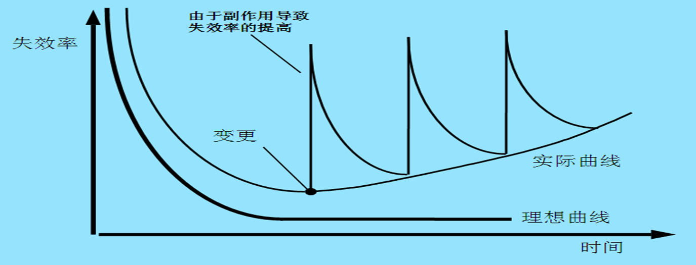
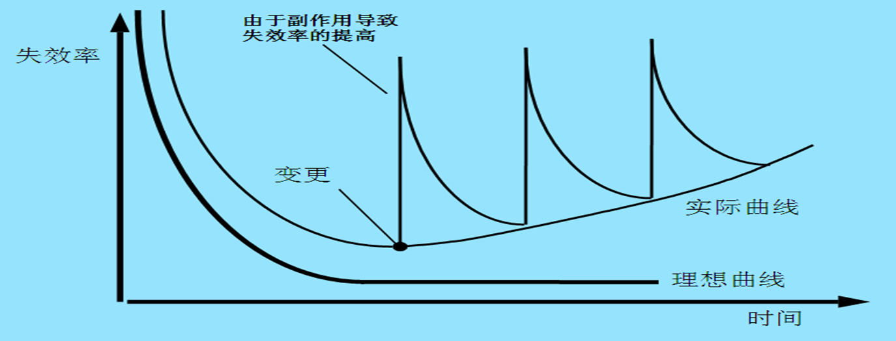
- 基于构件的构造模式 (构件复用)
软件开发包括编码
开发与编码的不同之处
-
目的不同
- 编码是让计算机能理解和执行设计者意图
- 软件开发是要满足用户需求，同时也满足自身利益
-
方法不同
- 编码通过规范的程序设计，使程序能正确地理解和执行设计者的意图
- 软件开发要通过实施软件过程，保证按时交付软件、控制质量和降低成本
-
参与者不同
- 编码主要靠个人的经验和技巧
- 软件需要有团队的合作，要有适合团队特点的软件过程
1.1.2 软件的应用领域¶
① 系统软件¶
-
系统软件 是一整套服务于其他程序的程序
- 某些系统软件(例如: 编译器、编辑器、文件管理软件)处理复杂但确定的信息结构。
- 另一些系统应用程序(例如: 操作系统构件、驱动程序、网络软件、远程通信处理器)主要处理的是不确定的数据。
-
特点:
-
和计算机硬件大量交互
- 多用户大量使用；
- 需要调度、资源共享和复杂进程管理的同步操作；
- 复杂的数据结构以及多种外部接口。
-
② 应用软件¶
应用软件 : 解决特定业务需要的独立应用程序
除了传统数据处理的应用程序，应用软件也被用于业务功能的实时控制(e.g 销售点的交易管理，实时制造过程控制)
③ 工程/科学软件¶
这类软件通常带着“数值计算“算法的特征
④ 嵌入式软件¶
嵌入式软件存在于某个产品或者系统中，可以执行有限但难于实现的功能，并提供重要的功能和控制能力
⑤ 产品线软件¶
产品为多个不同用户的使用提供特定的功能，关注有限的特定的专业市场或者大众消费品市场
趋势:
- 使用相同的底层应用软件和数据体系结构来开发
- 使用可在整个产品线中进行复用的一组软件构件来实现
⑥Web 应用软件/移动 APP¶
以网络为中心的软件，其概念涵盖了宽泛的应用程序产品
随着 Web 2.0 的出现，网络应用正在发展为复杂的计算环境(e.g. 网游、网络社区应用)
趋势
- WebApp 允许移动设备通过针对移动平台的优点和弱点专门设计的浏览器获取基于 Web 内容的访问。
- 移动 App 可以直接访问设备的硬件特性
⑦ 人工智能软件¶
利用非数值算法解决计算和直接分析无法解决的复杂问题
⑧ 开放计算¶
无线网络的快速发展会促成普适计算、分布式计算、以及云计算的发展。软件工程师面临的挑战是开发系统和应用软件，使得移动设备、个人电脑和企业应用可以通过网络设施进行通信
1.1.3 遗留软件¶
-
遗留软件 : 使用了很长时间，由于使用者不愿更换，仍然在使用的系统
-
特点
- 支持核心业务，并且是业务必不可少的支撑
- 在使用过程中，不断地被修改
- 质量差: 设计难以扩展、代码费解、文档混乱
-
对策: 尽可能什么也不做
(能跑就别动) -
遗留软件经常会由于下述原因发生演化
- 进行适应性变化，以满足新的计算环境或者技术的需要
- 根据新的业务需求进行升级
- 扩展以及具有与更多现代系统或数据库的协作能力
- 改建以适应多样化的网络环境
第 2 章 软件工程【概述】¶
2.1 定义软件工程学科¶
-
Fritz Bauer 给出了如下定义:
- 建立和使用一套合理的工程原则，从而经济的获得可靠的，可在实际机器上高效运行的软件
-
IEEE 给出了如下定义:
- 将系统化的、规范的、可量化的方法应用于软件的开发、 运行和维护，即将工程化方法应用于软件
- 对上述方法的研究
-
软件工程是一种层次化的技术，自下而上分为: 质量关注点 → 过程 → 方法 → 工具

2.2 软件过程¶
- 过程 是事情进行或事物发展所经过的顺序。
- 当开发产品或构建系统时，遵循一系列可预测的步骤(即路线图)是非常重要的，它有助于及时交付高质量的产品。
- 软件开发中所遵循的路线图就称为“软件过程”
过程框架¶
-
过程框架 定义了若干个框架活动，为实现完整的软件工程过程建立了基础，每一个活动由一组软件工程动作组成，每一个动作都包括一系列相互关联的可考核的任务
- \(过程框架\begin{cases}框架活动1\begin{cases}软件工程动作1\begin{cases}任务1\\任务2\\...\end{cases}\\软件工程动作2\\...\end{cases}\\框架活动2\\...\end{cases}\)
- 过程(框架): 工作产品构建时所进行的一系列活动、动作和任务的集合
- (框架)活动: 主要实现宽泛的目标，与应用领域，项目大小，结果复杂性或者实施软件工程的重要程度没有直接关系
- (软件工程)动作: 包含了主要工作产品生产过程中的一系列任务
- 任务: 关注小而明确的目标，能够产生实际产品(e.g 构建一个单元测试)
-
通用过程框架 –五个最基本的框架活动:
- 沟通: 目的是理解甲方项目目标, 收集需求
- 策划: 也叫软件项目计划, 定义&描述软件工程工作
- 包括技术任务, 风险, 资源需求, 工作产品, 工作进度计划
- 建模: 需求建模&对应的软件设计
- 构建: 编码+测试
- 部署
-
软件工程过程框架活动由很多普适性活动来补充实现，通常，这些普适性活动贯穿软件项目始终，来帮助软件团队管理和控制项目进度、质量、变更和风险。典型的普适性活动包括
- 软件项目跟踪和控制: 评估项目进度
- 风险管理: 影响产品质量/项目成果的风险
- 软件质量保证
- 技术评审: 及时 debug?
- 测量: 定义和收集过程、项目和产品的度量
- 软件配置管理
- 可复用管理
- 工作产品的准备和生产: 建模、文档、日志、表格和列表等。
-
过程的适应性调整: 不同项目所采用的项目过程可能有很大不同
2.3 软件工程实践¶
软件工程实践的精髓
- 理解问题(沟通和分析)
- 利益相关者
- 数据、功能、特征和行为
- 问题分解
- 图形化描述
- 计划解决方案(建模和软件设计)
- 设计模式复用
- 软件复用
- 问题解决方案复用
- 子问题分解 → 子问题方案复用
- 快速实现
- 实施计划(代码生成)
亲 您好 这边不考编程呢- 解决方案 ↔ 计划
- 源码 ↔ 设计模型
- 解决方案的各个部分的正确性
- 评审&算法正确性证明
- 检查结果的正确性(测试和质量保证)
- 测试解决方案的每个部分
- 测试策略
- 结果是否一致
- 需求是否完成
软件工程的一般原则¶
软件工程整体实践的原则
- 存在价值: 能否产生价值
不要做垃圾 - 保持简洁: 简结而非简化
- 保持愿景: 目标清晰
- 关注使用者: 需求 → 用户; 设计 → 实现; 编码 → 维护和拓展
- 面向未来: 持久耐用
- 提前设计复用:
- 认真思考:
要多想
2.4 软件神话¶
什么怪东西
软件神话，即关于软件及其开发过程被人盲目相信的一些说法，可以追溯到计算技术发展的初期。 今天，大多数有见地的软件工程师已经意识到软件神话的本质—它实际上误导了管理者和从业人员对软件开发的态度，从而引发了严重的问题。然而，由于习惯和态度的根深蒂固，这一切难以改变，软件神话遗风犹在
2.5 软件工程项目的开端¶
每个软件工程项目都来自业务需求:
- 对现有应用程序缺陷的纠正；debug
- 改变遗留系统以适应新的业务关键；
- 扩展现有应用程序功能和特性；
- 开发某种新的产品、服务或系统。
软件项目的初期，业务需求通常是在谈话过程中非正式地表达出来
第 3 章 软件过程结构¶
3.1 通用过程模型¶
- 通用过程框架定义了 5 种框架活动: 沟通, 策划, 建模, 构建, 部署
- 过程 : 在工作产品构建过程中所需完成的工作活动、动作和任务的集合。这些活动、动作、任务中的每一个都隶属于某一框架或者模型，框架或模型定义了他们与过程之间或者相互之间的关系
-
过程框架 ≈过程模型
- 定义了活动, 动作和任务与过程之间的关系
- 过程中的 活动、动作、任务中的每一个都隶属于某一框架或者模型
-
软件过程示意图
- 从外到内: 软件过程, 过程框架, 普适性活动, 框架活动, 动作, 任务集
- 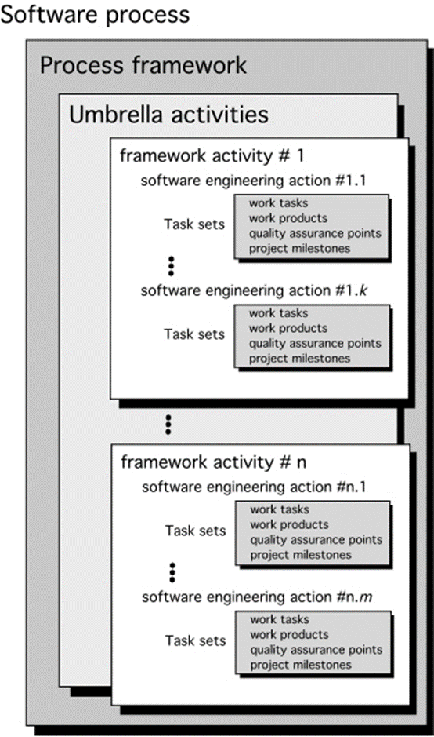
- 软件工程动作由若干个任务集构成，而每一个任务集都由软件工程工作任务、相关工作产品，质量保证点和项目里程碑组成。
- 任务集 定义了为达到一个软件工程动作的目标所需完成的工作
过程流¶
过程流 : 描述了在执行顺序和执行时间上如何组织框架中的活动、动作和任务
分为:
- 线性: 字如其名
- 迭代: 在执行下一个活动前重复执行之前的一个或多个活动
- 演化: 采用循环的方式执行各个活动，每次循环都能产生更为完善的软件版本(增量交付)
- 并行: 将一个或者多个活动与其他活动并行执行


过程模式¶
- 过程模式 描述了软件工程工作中遇到的过程相关问题、明确了问题环境并给出针对该问题的一种或几种可证明的解决方案
- 提供了一个 描述问题解决方案的犯法
-
模式可以在不同抽象层次上进行定义
- 模式可以描述一个完整的过程模型(例如原型开发)的相关问题和解决方案
- 模式也可以描述一个框架活动(例如策划)
- 或者框架活动中的某一项具体任务(例如项目估算)的相关问题与解决方案
-
Ambler 过程模式的描述模板:
- 模式名称: 应清楚地表达该模式在软件过程中的含义，比如，技术评审。
- 驱动力(目的): 模式使用环境及主要问题，以明确主要难点。
- 类型: 步骤模式(定义框架活动)、任务模式 (定义软件工程动作或任务)、阶段模式(定义框架活动序列)
- 启动条件: 模式应用前需满足的前提条件(输入) 。需要明确: (1)在此之前，整个开发组织或者开发团队内已有哪些活动？ (2)已有哪些软件工程信息或是项目信息？ (3)过程的进入状态是什么？
- 问题: 描述模式将要解决的具体问题
- 解决办法: 描述如何成功实现模式。
- 结束条件: 描述模式成功执行之后的结果(输出)。模式结束时需要明确: (1)必须完成哪些开发组织或是开发团队相关的活动？ (2)过程的结束状态是什么？ (3)产生了哪些软件工程信息或是项目信息？
- 相关模式: 列举与该模式直接相关的其它过程模式。
- 已知应用实例: 说明该模式可应用的具体实例。(什么场合使用)
- 【例】回归测试过程模式
- ```
- 模式名称: 回归测试 (指修改了旧代码后，重新进行测试以确认修改没有引入新的错误或导致其他代码产生错误)。
- 目的: 构造一种测试的过程。
- 类型: 任务模式。
- 启动条件: 在模式启动之前必须满足以下三个条件: (1)原来的测试用例；(2)更新后的软件；(3)针对更新部分的新测试用例。
- 问题: 要测试模块。
- 解决方法: 先用原来的测试用例测试软件，再用新测试用例测试软件。
- 结束条件: 完成测试的软件。
- 相关模式: 测试、单元测试、系统测试。
- 已知应用实例: 更新软件后建议使用。 ```
- ```
第 4 章 过程模型¶
过程模型 为软件工程工作提供了特定的路线，该路线图规定了所有活动的流程、动作、任务、迭代的程度、工作产品以及要完成的工作应如何组织
4.1 惯用过程模型¶
惯用过程模型 (软件生存周期模型 )
- 目标: 使软件开发更加有序
- 所有的软件过程模型都支持通用框架活动，但是每一个模型都对框架活动有不同的侧重
- 分类: 瀑布，增量，演化，并发
4.1.1 瀑布模型¶
-
瀑布模型 又称==经典生命周期== ，它提出了一个传统的、顺序的软件开发方法，即从用户需求规格说明开始，顺序地通过沟通、策划、建模、构建和部署过程，最终提供完整软件和持续技术支持。
- 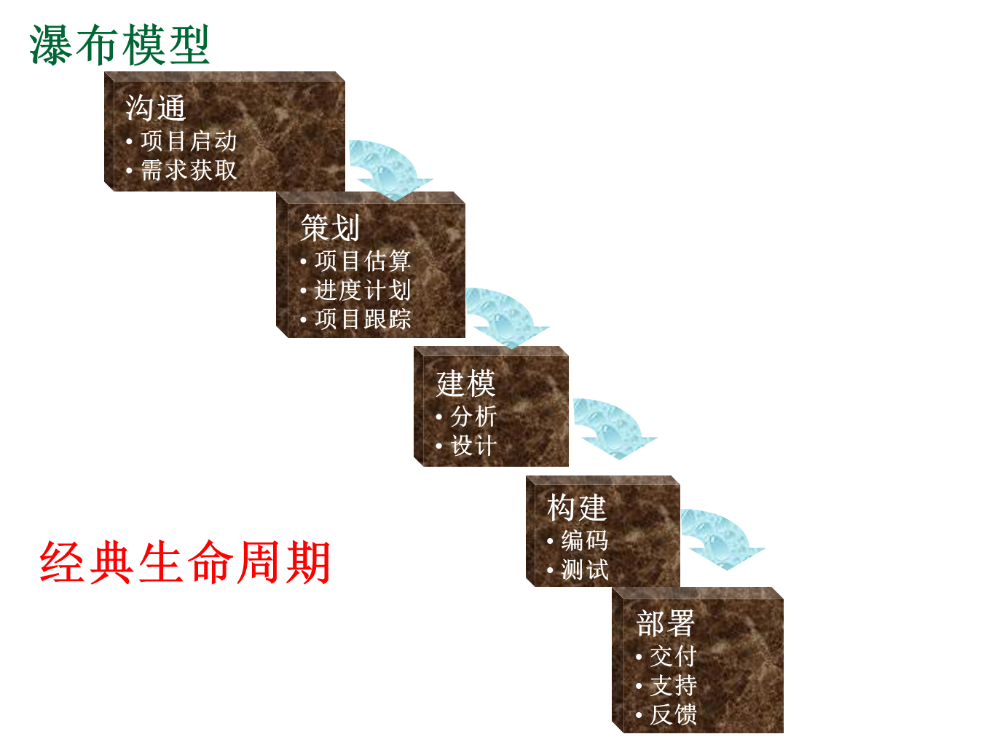
-
变体: V 模型
- 软件团队沿着 V 模型左侧步骤向下推进，编码结束后，团队沿着 V 模型右侧的步骤向上推进，其本质是增加了一系列测试(质量保证动作)

-
对比: 两者没有本质区别，V 模型提供了一种将验证确认动作应用于早期软件工程工作中的方法
特点 ※¶
-
阶段间具有顺序性和依赖性
- 顺序性: 只有等前一阶段的工作完成以后，后一阶段的工作才能开始；前一阶段的输出文档，就是后一阶段的输入文档。
- 依赖性: 只有前一阶段有正确的输出时，后一阶段才可能有正确的结果
-
推迟实现的观点: 前面步骤完成后才考虑实现。
- 把逻辑设计和物理设计清楚的划分开来，尽可能推迟程序的物理实现，这是瀑布型软件开发的一条重要的指导思想
- 质量保证的观点: 每一阶段都需要有文档以及经过评审。
- 为了保证质量，瀑布型软件开发在各个阶段坚持了两个重要的做法
- 每一阶段都要完成规定的文档。没有完成文档，就认为没有完成该阶段的任务。
- 每一阶段都要对完成的文档进行复审，以便尽早发现问题，消除隐患。
- 为了保证质量，瀑布型软件开发在各个阶段坚持了两个重要的做法
问题¶
- 不适应需求经常发生变更的环境
- 客户只能到项目开发的晚期才能得到程序的可运行版本，大的错误如果到这时才被发现，会造成灾难性后果
- 工作中会发生阻塞状态
总结¶
所以，在需求已确定的情况下，且工作采用线性的方式完成的时候，瀑布模型是一个很有有用的过程模型
4.1.2 增量过程模型¶
提出背景
需求不明确或迫切需要为用户迅速提供一套功能有限的软件产品，然后在后续版本中再进行细化和扩展功能。
随着时间的推移，增量模型在每一个阶段都运用线性序列。每个线性序列生产出软件的可交付增量。(即以迭代方式运用瀑布模式)

例如，采用增量模型开发的文字处理软件，在第一个增量中提供基本的文件管理、编辑和文档生成功能；在第二个增量中提供复杂的编辑和文档生成功能；在第三个增量中提供拼写和语法检查功能；在第四个增量中提供高级页面排版功能。
运用增量模型的时候，第一个增量往往是核心产品(core product)。也就是，满足了基本的需求，但是许多附加的特性(一些是已知的，一些是未知的)没有提供，客户使用该核心产品或者进行仔细的评价，并根据评价结果制定下一个增量计划。这份计划说明了需要对核心产品进行的修改，以便更好地满足客户的要求，也说明了需要增加的特性和功能
- 增量模型侧重于每个增量都提交一个可以运行的产品。早期的增量可以看做是最终产品的片段部分。
- 如果在项目既定的商业期限之前不可能找到足够的开发人员，这种情况下增量模型显得特别有用
- 早期增量可以先投入少量人员, 观察核心产品效果后再加人
- 它还可以规避技术风险
- 早期增量中可以先不用不成熟的技术
优点
- 能在较短时间内向用户提交可完成部分工作的产品；
- 用户有较充裕的时间学习和适应新产品；
- 易于保证核心功能正确；
- 可以基于早期版本来获取需求；
- 项目完全失败的风险小；
- 可以为那些创新的功能开拓市场；
- 规避了资源缺乏的风险；
问题
- 把用户需求转化为功能递增的不同版本可能比较难 (功能联系紧密，难以完全分开)
- 难以确定所有版本共需的公用模块。(通常进行设计时会先考虑设计公用模块，但是每一个增量只考虑局部的设计，因此，全局的公用模块很难确定)
变体–迭代开发¶
迭代式开发是增量式开发的一种变体，不同于传统的增量开发(每次提交一个构件)，迭代式开发开始提交所有的模块(部分模块有待优化)，在其后的阶段逐渐优化
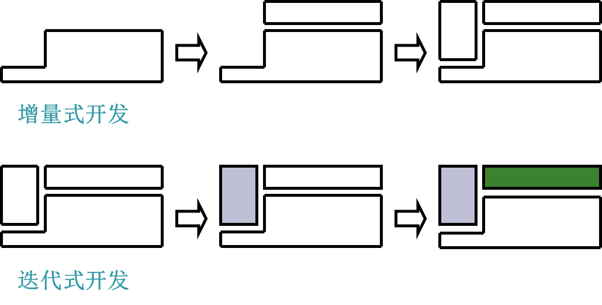
4.1.3 演化过程模型¶
演化模型概述¶
-
提出背景
- 开发过程中，业务和产品需求经常变化；
- 严格的交付时间使得开发团队不可能圆满完成软件产品，但是必须交付功能有限的版本以及应对竞争或商业压力
- 往往很好地理解了核心产品需求，但是系统扩展的细节问题却没有定义
-
演化模型 是迭代的过程模型，每次迭代产生软件的一个更完整的版本
-
两种常用演化模型
- 原型开发
- 螺旋模型
原型开发¶
-
背景
- 客户提出了一些基本功能，但未详细定义输入、处理和输出需求；
- 开发人员可能对开发运行环境、算法效率、操作系统的兼容性和人机交互等情况不确定。
-

- 当需求很模糊的时候，原型开发模型都能帮助软件开发人员和利益相关者更好的理解究竟需要做啥
-
使用前提
- 用户必须积极参与原型的建造，建造原型仅仅是为了定义需求，之后就必须被全部抛弃(至少是部分抛弃)
- 必须有快速开发工具可供使用
-
问题:
- 利益相关者看到了软件的工作版本，却未察觉到整个软件是随意搭成的，也未察觉到为了尽快完成软件，开发者没有考虑整体软件质量和长期的可维护性。当开发者告诉客户整个系统需要重建以提高软件质量的时候，利益相关者会不愿意，并且要求对软件稍加修改使其变为一个可运行的产品。因此，软件开发管理往往陷入失效。
- 作为一名软件工程师，软件开发人员为了使一个原型快速运行起来，往往在实现过程中采用折衷的手段。他们经常会使用不合适的操作系统或程序设计语言，仅仅因为当时可用和熟悉。他们也经常会采用一种低效的算法，仅为了证明系统的能力。时间长了，软件开发人员可能会适应这些选择，而忽略了这些选择其实并不合适的理由，结果造成并不完美的选择变成了系统的组成部分的情况。
【注】原型是为定义需求服务的，然后丢弃原型，实际的软件系统是以质量第一为目标而开发的
螺旋模型¶
-
螺旋模型 : 风险驱动的软件开发模型
- 采用循环的方式，逐步加深系统定义和实现的深度(原型开发的迭代性质)；
- 确定一系列里程碑，确保利益相关者都支持系统解决方案(瀑布模型的系统性和可控性)；
- 第一圈一般开发出产品的需求规格说明，接下来开发产品的原型系统，并在每次迭代中逐步完善，开发不同的软件版本；
- 项目经理还会调整完成软件开发需要迭代的次数；
- 开发大型系统和软件的理想方法，更好地应对风险
-
【注】它可以运用在应用系统开发的整个生命周期，从概念开发到维护

演化模型总结¶
演化模型的问题:
- 迭代周期数目不确定，大多项目管理和估算技术是基于活动的线性布局，所以并不完全适用于演化软件过程
- 演化模型没有确定演化的最快速度
- 演化模型侧重灵活性和可延展性，而不是高质量。(即: 演化模型优先追求开发速度，而不是零缺陷)
4.2 专用过程模型¶
专用过程模型往往应用面较窄且较专一，只适用于某些特定的软件工程方法
4.2.1 基于构件的开发¶
-
基于构件的开发模型
- 具有许多螺旋模型的特点，本质上是演化模型，需要以迭代的方式构建软件。
- 不同之处在于，基于构建的开发模型采用预先打包的软件构建来开发应用系统
-
优点: 能够使软件复用，减少项目开发费用，缩短开发周期
- 建模和构建活动开始于识别可选构件。这些构件有些设计成通用的软件模块，有些设计成面向对象的类或软件包。不考虑构件的开发技术，基于构件开发模型由以下步骤组成(采用演化方法):
- 对于该问题领域研究和评估可用的基于构件的产品。
- 考虑构件集成的问题。
- 设计软件架构以容纳这些构件。
- 将构件集成到架构中。
- 进行充分的测试以保证功能正常。
4.2.2 形式化方法模型¶
-
主要活动: 生成计算机软件形式化的数学规格说明，使得软件开发人员可以应用严格的数学符号来说明，开发，验证系统
-
优点: 应用数学分析的方法，歧义性问题、不完整问题、不一致问题等都能够更容易地发现和改正。在设计阶段，形式化方法是程序验证的基础，使软件开发人员能够发现和改正一些往往被忽略的问题。
-
缺点:
- 开发非常耗时，成本也很高；
- 只有极少数程序员具有应用形式化的背景，需要大量的培训；
- 对于技术水平不高的客户，很难用这种模型进行沟通。
-
应用: 高度关注安全性的软件(飞行器，医疗设施，经济领域)
4.3 统一过程¶
-
统一过程 (UP, Unified Process)
- 注重于客户沟通以及从用户的角度描述系统，强调软件体系结构的重要性
- 特点: 用例驱动，以架构为核心，迭代并且增量
- 统一过程认识到与客户沟通以及从用户的角度描述系统并保持该描述的一致性的重要性
-
统一过程的五个阶段
- 起始阶段: 识别基本的业务需求，并用用例初步描述每一类用户所需要的主要特性和功能
- 细化阶段: 沟通和通用过程模型的建模活动
- 构建阶段: 采用体系结构模型作为输入，开发或是获取软件构建，使得最终用户能够操作用例
- 转换阶段: 通用构建活动的后期阶段以及通用部署活动的第一部分
- 生产阶段: 对持续使用的软件进行监控，提供运行环境的支持，提交并评估缺陷报告和变更请求

第 5 章 敏捷开发¶
惯用过程模型对软件开发者的考虑不够到位, 缺乏人性化
5.1 什么是敏捷¶
-
敏捷开发 : 是一种软件开发方法论，可以应对客户快速变更的需求，它强调以人为核心，采用迭代的方式，循序渐进的开发软件
- 敏捷团队是能够适当响应变化的灵活团队
- 普遍存在的变化是敏捷的基本动力
-
敏捷不仅仅是有效的应对变更，它
- 鼓励能够使沟通更便利的团队结构和协作态度
- 强调可运行软件的快速交付而不那么看重中间产品
- 将客户作为开发团队的一部分开展工作
- 意识到计划是有局限性的, 项目计划必须是可以灵活调整的
敏捷宣言¶
个体与交互 胜过 过程与工具 可用的软件 胜过 完备的文档 客户协作 胜过 ** 合同谈判 响应变化 胜过** 遵循计划
敏捷价值观¶
- 沟通: 促进团队内部的开发人员之间的沟通，以及团队和客户(project stakeholder 不知道是不是)的沟通
- 简单: 画一两张图表来代替几十甚至上百行代码
- 反馈
- 勇气
- 尊重(谦虚)
5.2 敏捷变更的成本费用¶
传统:
成本费用随着计划的进展成非线性增长，这种方法在软件开发团队收集需求时(在项目的早期)相对容易适应变更，在后期的话，费用会迅速升级
敏捷:
设计良好的敏捷过程“拉平了”变更成本曲线
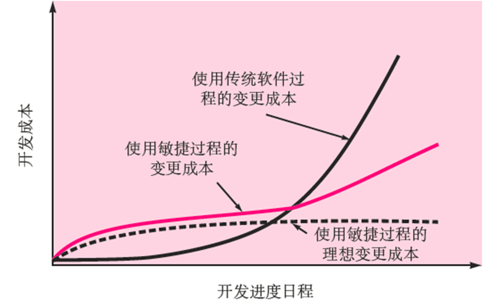
5.3 敏捷过程¶
-
为什么要使用敏捷过程
- 软件开发过程中存在三个问题
- 提前预测需求/变化比较难
- 设计和构建是交替进行的
- 软件开发的几大要素(分析, 设计, 构建和测试)都要不断调整
- 解决上述问题需要调整和反馈, 即自适应和增量提高的过程
- 如何建立能解决不可预测性的过程？ 过程的自适应性。
- 软件开发过程中存在三个问题
-
基于==敏捷原则== 进行的软件开发过程，视为==敏捷过程==
- 【注】基于: 指充分考虑，而不是全部包含
-
敏捷原则
- 我们最优先要做的是通过尽早、持续地交付有价值的软件来使客户满意。
- 即使在开发的后期，也欢迎需求变更。敏捷过程利用变更为客户创造竞争优势。
- 经常交付可运行软件，交付的间隔可以从几个星期到几个月，交付的时间间隔越短越好。
- 在整个项目开发期间，业务人员和开发人员必须天天都在一起工作。
- 围绕有积极性的个人构建项目。给他们提供所需的环境和支持，并且信任他们能够完成工作。
- 在团队内部，最富有效果和效率的信息传递方法是面对面交谈。
- 可运行软件是进度的首要度量标准。
- 敏捷过程提倡可持续的开发速度。责任人(sponsor)、开发者和用户应该能够保持一个长期的、恒定的开发速度 。
- 不断地关注优秀的技能和好的设计会增强敏捷能力。
- 简单是必要的。
- 最好的架构、需求和设计出自于自组织团队。
- 每隔一定时间，团队会反省如何才能更有效地工作，并相应调整自己的行为。
- ※ 并不是每一个敏捷模型都同等使用这 12 项原则，一些模型可以选择忽略(或至少淡化)一个或多个原则的重要性。
-
敏捷软件过程必须增量的适应，为了达到这一目的，敏捷团队需要客户的反馈，可执行原型或者部分实现的可运行系统是客户反馈的最有效媒介。因此，应当使用增量式开发策略。
- 这种迭代方法允许客户: 周期性的评价软件增量，向软件项目组提出必要的防窥，影响为适应反馈而对过程进行适应性修改
-
敏捷团队成员&团队本身的特点
- 基本能力
- 共同目标
- 精诚合作
- 决策能力
- 模糊问题解决能力
- 相互信任和尊重
- 自组织: 组织团队，组织过程，组织进度
5.4 极限编程¶
-
极限编程 (Extreme Programming, XP): 敏捷软件开发中使用最广泛的敏捷过程
-
特点:
- 是一些相互关联的准则和惯例的集合
- 追求变更曲线的平坦化
- 适合于小团队，高风险的项目
-
XP 使用面向对象方法作为推荐的开发泛型，它包含了策划、设计、编码和测试4 个框架活动的规则和实践。

极限编程过程¶
- 策划
- 建立描述软件特征&功能的故事(客户用自然语言描述系统的功能)
- 评估故事, 估计成本(单位: 开发周数)
- 故事分组, 分解为软件增量
- 形成对发布版本的基本承诺
- 对待开发故事进行排序 ① 所有选定故事(下一个增量)必须在几周内完成 ② 高权值优先 ③ 高风险优先
- 第一个版本发布后, XP 团队对开发速度进行估计
- 估计后续版本的发布时间&进度安排
- 确定是否对整个开发项目中的所有故事有过分承诺
- 在开发过程中，客户可以增加故事，改变故事的权值，分解或者去掉故事。然后由 XP 团队重新考虑并修改计划。
- 设计
- 遵循KIS(Keep It Simple)原则
- 使用CRC 卡(类-责任-协作者)确定当前软件增量相关的面向对象的类
- Spike 解决方案: 让不明确的评估成为明确的评估
- 鼓励重构
- 编码
- 先开发测试用例再编码
- 结对编程: 两人面对同一台计算机
- 提供了实时解决问题和实时质量保证的机制
- 结对工作完成后, 需要与其他人的工作集成起来
- 测试
- 单元测试使用自动测试框架, 支持回归测试策略
- 将个人单元测试组织到一个通用测试集, 每天进行系统的集成和确认测试, 尽早发现问题
- XP 验收测试(客户测试): 客户校验系统的特征和功能(也就是用户故事)
工业极限编程 IXP¶
六个新的实践:
- 准备评估
- 项目社区
- 项目特许
- 测试驱动管理
- 回顾
- 持续学习
关于 XP 的争论¶
- 需求易变。因为客户是 XP 团队的成员，对需求的改变不是正式地提出。结果是，项目的范围会发生变化，早期的工作或许要进行修改来适应当前的要求。
- 矛盾的客户需求。许多项目都有众多客户，每个客户都有自己的一套需求。在 XP 中，团队自身需要吸纳不同客户的要求，这项工作可能超出了自己的职权范围。
5.5 其他敏捷过程模型¶
Scrum¶
原则与敏捷宣言是一致的，应用 Scrum 原则指导过程中的开发活动，过程由“需求，分析，设计，演化，交付“等框架性活动组成
每一个框架活动中，发生于一个过程模式中的工作任务称为一个冲刺(sprint)。冲刺中进行的工作(每一个框架活动中的冲刺的数目根据产品复杂度和规模大小而有所不同)适应于当前的问题，由 Scrum 团队规定并常常作实时修改。
每一个过程模式定义一系列开发活动:
- 待定项: 能为用户提供商业价值的项目需求或特征的优先级列表。待定项中可以随时加入新项(即变更的引入)。产品经理根据需要评估待定项并修改优先级。
- 冲刺: (待定项的一部分，眼前具体的任务)由一些工作单元组成 ，并且必须能在预定的时间段 (time-box)内(一般情况下为 30 天)完成。冲刺过程中不允许有变更(例如，积压工作项)。因此，冲刺给开发团队成员的工作提供了短期但稳定的环境。
- Scrum 例会: 每天召开的短会(一般为 15min)会上所有成员都要回答三个问题:
- 上次例会后做了什么
- 遇到了什么困难
- 下次例会前计划做些什么
👆，站立式会议，任务看板，更新任务看板
团队领导(也称为 Scrum Master)主持会议并评价每个团队成员的表现。Scrum 会议帮助团队尽早发现潜在的问题。同时，每日例会进一步促进自我组织团队的建设。

动态系统开发 DSDM¶
注意，这个是一种过程框架
提供一种框架，使其“通过在可控项目环境中使用增量原型开发模式来满足对时间有约束系统的构建和维护”
e.g: 如果交付整个应用系统需要 100%的时间，那么 80%的应用系统可以用 20%的时间交付
特点: 每一个迭代都遵循80%原则，即每个增量只完成能够保证顺利进入下一增量的工作，剩余的细节则可以在知道更多业务需求或者提出并同意变更之后完成。
生命周期活动
- 可行性研究: 建立业务需求&相关约束, 评估是否应该采用 DSDM
- 业务研究: 建立功能和信息需求, 确定系统架构, 识别可维护性需求
- 功能模型迭代: 为客户开发一系列证明其功能的增量原型 (注意: 所有 DSDM 原型都倾向于逐渐发展成可交付的应用系统 )。迭代的意图是在用户使用原型系统时诱导出反馈信息以获取其他的需求。
- 设计与构建迭代: 重新构建原型以确保每一个原型都以工程化方式实现，并能为最终用户提供可操作的业务价值。
- 实现: 将最终软件增量(一个可操作的原型)置于操作环境中，应当注意:
- 增量不见得 100%完成
- 增量置于操作环境以后可能需要改变
敏捷建模 AM¶
原则:
- 有目的的模型: 在构建模型之前，开发者心中应当有明确的目标
- 使用多个模型: 每一种模型应当表达系统的不同侧面，并且应使用能够为那些预期的读者提供有价值的模型
- 轻装上阵: 随着软件工程的进展，只保留那些能够提供长期价值的模型，抛弃其余的模型
- 内容重于表达形式: 一个有用的内容很少，但语法完美的模型不如一个有缺陷但能向读者提供有用内容的模型更有价值。
- 理解模型及工具: 理解每一个模型及其构建工具的优缺点
- 适应本地需要: 建模方法应该适应敏捷团队的需要
敏捷统一过程 AUP¶
- 全局串行, 局部迭代
-
采用了经典 UP阶跃性活动——开始，加工，构建以及变迁
-
每个 AUP 迭代执行以下内容
- 建模: UML 建立了对商业和问题域的表述，为了保持敏捷，必须保证这些模型足够好
- 实现: 将模型翻译成源代码
- 测试: 设计/执行一系列测试来发现错误以保证源代码满足需求
- 部署: 重点是对软件增量的交付以及获取最终用户的反馈信息
-
配置及项目管理:
- 配置管理着眼于变更管理/风险管理/开发团队的任一常效产品的控制
- 项目管理追踪和控制开发团队的活动情况和工作进展
- 环境管理: 协调过程的基础设施
【注】UML 可以与本章所讲的任一敏捷过程‘’模型相结合
快速跳转: 第 7 章 理解需求
第 6 章 软件工程的人员方面 【略！】¶
6.1 软件工程师的七种特质¶
- 个人责任感
- 对一些人的需求有敏锐的意识
- 团队成员, 利益相关者, 管理者
- 坦诚
- 展现抗压能力
- 有高度的公平感
- 注重细节
- 务实
6.3 软件团队¶
团队毒性:
-
混乱的工作氛围
- 解决方案: 获取工作所需所有信息, 确定主要目标
-
重大挫折使得团队成员产生摩擦
- 解决方案: 给团队更多决策权, 增强信心
- 糟糕的软件过程 (碎片式的或协调很差)
- 解决方法: 允许团队选择过程模型
- 成员角色模糊
- 解决方法: 团队应该建立责任机制，并规定一系列当团队成员未能完成任务时的纠正方法。
- 反复地失败
- 解决方法: 建立基于团队的信息反馈方法和解决问题的技术
6.4 团队结构¶
团队的四种组织模式
- 封闭式模式: 按照传统的权力层级模式，创新性较弱
- 随机式模式: 松散的组织团队，依赖成员的主动性，很难完成”有秩序的操作”
- 开放式模式: 尝试组成一种团队，有包含上两种团队的特性(可控性，创新型)，但是效率没有其他团队高
- 同步式模式: 依赖于问题的自然区分，不需要很多的交流就可以将成员组织起来共同解决问题
主程序员团队¶
从历史的角度看，最早的软件团队组织是封闭式模式结构，最初称为==主程序员团队==
一个高级工程师(主程序员)+技术人员(2-5 人)+一个后备工程师
优点:
- 实现了项目人员分工专业化
- 降低了管理的复杂性，提高了工作效率
缺点: 现实社会中，缺乏同时具备高超管理才能和技术才能的“全才”
6.5 敏捷团队 6.6 社交媒体的影响 6.7 软件工程中云的应用 6.8 协作工具 6.9 全球化团队
第 7 章 理解需求 ※核心¶
需求工程——提供了解决挑战的可靠途径
7.1 需求工程¶
-
软件需求
- 对期望的软件行为的表达
- 分为 功能需求 和 非功能需求
-
功能需求: 描述系统预期提供的功能或服务
- 非功能需求: 不直接与系统具体功能相关的需求，
- 产品需求: 性能 可靠性 可用性
- 机构需求: 所在机构的政策和规定
- 外部需求: 互操作需求、道德需求
- 需求工程 致力于不断理解需求的大量任务和技术。
- 从软件过程的角度看，需求工程是一个软件工程动作，开始于沟通并持续到建模活动。他必须适用于过程，项目，产品和人员的需要
- 需求工程在设计和构建之间建立起联系的桥梁
- (？，柯逍在这句话这里打了 X，啥意思？)
- (接上楼, 同问)
- 两种需求过程:
- 瀑布式需求 项目早期完全确定需求
- 进化式需求 结合迭代开发，持续地寻找、记录、组织和跟踪不断变更的需求
需求工程的任务¶
需求工程包括七项明确的任务
-
起始
- 多数项目都是当确定了商业要求或是发现了潜在新市场、新服务时才开始
- 项目起始阶段，要建立基本的理解
-
获取
询问客户、用户和其他人:
- 系统的目标是什么
- 想要实现什么
- 系统和产品如何满足业务的要求
- 最终系统或产品如何用于日常工作
获取过程中最重要的是建立商业目标
【注】导出需求中出现的问题
范围问题: 一般发生在系统边界不清楚的情况下
理解问题: 发生在客户和用户并不完全确定需要什么的情况下
易变问题: 发生在需求随时间推移而变更的情况
为了帮助解决 👆，需求工程师必须以有组织的方式开展需求收集活动
-
细化
- 将起始和获取阶段获得的信息在细化阶段进行扩展和提炼
- 任务核心——开发一个精准的需求模型，用以说明软件的功能，特征和信息的各个方面
-
协商
问题:
- 业务资源有限，客户和用户却提出了过高的要求
- 不同的客户或用户提出了相互冲突的需求，并坚持自己的特殊需求至关重要
需求工程师需要通过协商来调解这些冲突。
用迭代的方法给需求排序，逐个评估成本和风险，表述内部冲突，删除、组合或修改需求，以便于各方均能达到一定的满意度
-
规格说明
两种需求文档:
-
需求定义: 客户要求的完整列表(对外)
通常是由客户和需求分析师一起编写，是开发人员对系统功能的一个合同，主要给客户阅读
-
需求规格说明: 要构建系统的规格化说明(对内)
由需求分析师编写，并由其他软件开发人员使用
软件需求规格说明 SRS
- 详细描述软件各个方面的文档
- 很多项目没有写正规的 SRS，很多实例表明花在软件需求规格说明的工作量还不如投入到其他软件工程活动
-
但是以下几种情况规格说明显得非常必要
(1)软件由第三方开发时
(2)缺少规格说明将导致严重业务问题时
(3)当系统非常复杂或设计十分重要的业务时
-
-
确认
对需求工程的工作产品进行质量评估
正式的技术评审是最主要的需求确认机制，确认需求的评审小组包括软件工程师，客户，用户和其他利益相关者，他们检查系统规格说明，并寻找:
- 内容/解释上的差错
- 可能需要进一步澄清的地方
- 丢失的信息
- 不一致(开发大型系统时的主要问题)
- 冲突或不现实的需求
【注】质量需求越关键，越要采用量化术语来陈述！
某些情况下，常见质量需求可以使用定性技术进行验证，在其他情况下，质量需求可以使用定性和定量相结合的评估方式进行验证
-
需求管理
对于基于计算机的系统，其需求会变更，而且变更的要求贯穿于系统的整个生命周期
需求管理是用于帮助项目组在项目进展中标识、控制和跟踪需求以及需求变更的一组活动
【注】这些需求工作中的一些任务会并行发生，并且要全部适应项目的要求
7.2 建立根基¶
确认利益相关者——>识别多重观点——>协同合作——>首次提问(欸奇怪这个是流程吗？)
-
确认利益相关者
- 利益相关者: 直接或间接地从正在开发的系统中获益的人
- 每个利益相关者对系统有不同的考虑，开发成功后获得的利益也不同，失败面临的风险也不同
-
识别多重观点
- 参与者都将为需求工程贡献信息，从多个角度收集信息时，所形成的需求可能存在不一致性或是相互矛盾。需求工程师把所有利益相关者提供的信息分类，便于决策制定者为系统选择一个内部一致的需求集合
-
协同合作
- 需求工程师的工作是标识公共区域 (即所有利益相关者都同意的需求)和矛盾区域或不一致区域 (即某个利益相关者提出的需求和其他利益相关者的需求相矛盾)。
-
首次提问
- 项目开始时的提问应该是“与环境无关的”
-
三组问题，分别用来:
- 识别所有对构建软件感兴趣的利益相关者
- 有助于软件开发组更好的理解问题
- 关注与沟通活动本身效率有关的问题
- 👆 这些问题有助于"打破坚冰"，并有助于交流的开始
- 【注】Q&A 会议应该仅仅用于首次解除，然后应该用问题求解、协商和规格说明等需求获取方式来取代
7.3 获取需求¶
需求获取(需求收集)将问题求解、细化、协商和规格说明等方面的元素结合起来在一起
7.3.1 协作收集需求¶
-
基本原则
- 会议由软件工程师和其他的利益相关者共同举办和参与。
- 制定筹备和参与会议的规则。
- 建议拟定一个会议议程，这个议程既要足够正式，使其涵盖所有的重点，但也不能太正式，以鼓励思想的自由交流。
- 由一个“调解人”(可以是客户、开发人员或其他人)控制会议。
- 采用“方案论证手段”(可以是工作表、活动挂图、不干胶贴纸或电子公告牌、聊天室或虚拟论坛)。
-
目的: 识别问题
- 提出解决方案的要素，协商不同的方法以及在有利于完成目标的氛围中确定一套解决需求问题的初步方案。
- 小规格说明 : 列表所描述的对象或服务需要更多的解释，为了完成这一任务，利益相关者为列表中的条目编写小规格说明
-
质量功能部署 QFD
- 质量功能部署是一种将客户要求转化成软件技术需求的技术
- 目的: 最大限度的让客户从软件工程过程中感到满意
-
一些小概念:
- 常规需求: 会议中向客户陈述一个产品或系统时的目标，如果这些需求存在，客户会满意
- 期望需求: 客户没有清晰表述的基础功能，缺少了会引起客户的不满
- 兴奋需求: 超出客户预期的需求，这些需求存在时会令人非常满意
-
用户场景
- 场景 : 通常称为==用例== ，它提供了将如何使用系统的描述 (类似于举例)
-
获取工作产品
- 根据将要构建的系统或产品规模的不同，需求获取后产生的工作产品也不同
7.4 开发用例¶
-
用例 : 从最终用户的角度描述了软件或系统
- 撰写用例的第一步: 确定故事中所包含的“参与者”
- 参与者 : 在功能和行为环境内使用系统或产品的各类人员(或设备)。参与者代表了系统运行时人(或设备)所扮演的角色。
- 【注】参与者!=最终用户 用户可能在使用系统的时候扮演了许多不同的角色，参与者在用例中仅扮演一种角色
- 例如，考虑一个机床操作员(一个用户)，他和生产车间 (其中装有许多机器人和数控机床)内的某个控制计算机交互。在仔细考察需求后，控制计算机的软件需要4 种不同的交互模式(角色): 编程模式、测试模式、监测模式和故障检查模式。因此，4 个参与者可定义为: 程序员、测试员，监控员和故障检修员。
- 参与者的分类
- 主要参与者: 直接且经常使用软件、获取所需的系统功能并从系统得到预期收益。
- 次要参与者: 支持系统，以便主要参与者能够完成他们的工作。
-
基本用例从较高层次上给出参与者与系统之间交互的故事，但是在很多情况下，需要进一步细化用例以便为交互提供更详细的说明。
-
模板:
用例: 用例名 主要参与者: 目标: 前提条件: 触发器: 场景: 1. 2. 3. 异常: 1. 2. 3. 优先级: 何时可用: 使用频率: 使用方式: 次要参与者: 次要参与者使用方式: 未解决的问题: ;;; SafeHome用例模板 用例: 初始化检测 主要参与者: 房主 目标: 设置系统在房主离开住宅or留在房间内时检测传感器 前提条件: 系统已输入密码 并 识别各种传感器 触发器: 房主决定"设置"系统, 即打开报警功能 场景: 1. 房主: 观察控制面板 2. 房主: 输入密码 3. 房主: 选择"stay"or"away" 异常: 1. 控制面板没有准备就绪: 房主检查所有的传感器，确定哪些是开着的(即门窗是开着的)，并将其关闭。 2.密码不正确(控制面板鸣叫一声): 房主重新输人正确的密码。 3.密码不识别: 必须对监测和响应子系统重新设置密码。 4.选择stay: 控制面板鸣叫两声而且stay灯点亮；激活边界传感器。 5.选择away: 控制面板鸣叫三声并且away灯点亮；激活所有传感器。 优先级: 必须实现 何时可用: 第一个增量 使用频率: 每天多次 使用方式: 控制面板接口 次要参与者: 技术支持人员, 传感器 次要参与者使用方式: 技术支持人员: 电话线。 传感器: 有线或无线接口 未解决的问题: 1.是否还应该有不使用密码或使用缩略密码激活系统的方式？ 2.控制面板是否还应显示附加的文字信息？ 3.房主输入密码时，从按下第一个按键开始必须在多长时间内输入密码？ 4.在系统真正激活之前有没有办法关闭系统？ 可以使用类似的方法开发其他房主的交互用例。重要的是必须认真评审每个用例。如果某些交互元素模糊不清，用例评审将解决这些问题
- 实现方法: 用例图！
- e.g safehome 用例图

- e.g safehome 用例图
-
7.5 构建分析模型¶
需求模型=分析模型

7.5.1 分析模型的元素 ※要会画图！！！¶
基于场景的元素¶
基于场景的元素 : 可以从用户的视角描述系统
- e.g 用例，用例图，活动图
基于类的元素¶
每个使用场景都暗示着当一个参与者和系统交互时所操作的一组对象。
这些对象被分成类—具有相似属性和共同行为的事务集合。
- e.g UML 类图

行为元素¶
行为元素 :
-
状态图是一种表现系统行为的方法，该方法描绘:
- 系统状态
- 导致系统改变状态的事件
- 某个特殊事件后采取什么动作
- e.g 状态图 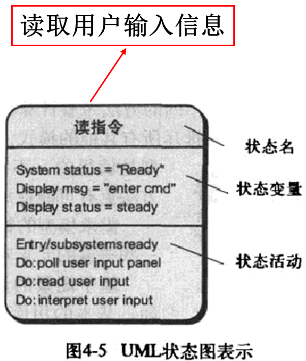
一些图的画法¶
- UML 活动图

- 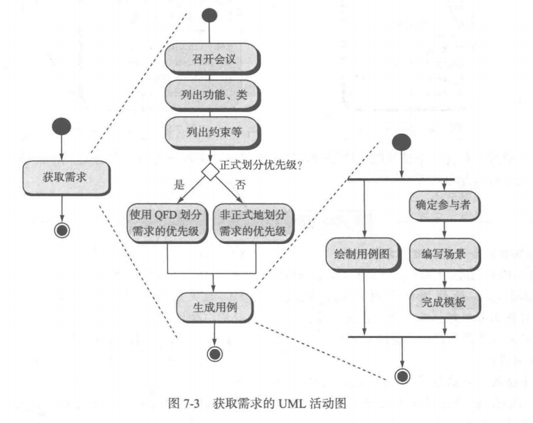
类图和状态图

7.5.2 分析模式¶
分析模式在特定应用领域内提供一些解决方案(如类，功能，行为)，在为许多应用项目建模时都可以重复使用
优点:
- 提高了抽象分析模型的开发速度
- 有利于把分析模型转变到设计模型
7.5.3 协商需求¶
- 详细的客户需求几乎不可能完全得到, 所以需要与利益相关者进行==协商== , 要让利益相关者以成本和产品投放市场的时间为背景，平衡功能、性能和其他的产品或系统特性。
- 最好的协商是争取“双赢”的结果:
- 利益相关者的“赢”在于获得满足客户大多数需要的系统或产品；
- 软件团队的“赢”在于按照实际情况、在可实现的预算和时间内完成工作。
- 每个软件过程迭代启动时的协商活动:
- 识别系统或子系统关键的利益相关者。
- 确认利益相关者“赢”的条件(客户优先)。
- 就利益相关者“赢”的条件进行协商，以便使其与所有涉及人(包括软件团队)的一些双赢条件一致。
7.5.4 确认需求¶
当需求模型的每个元素都已创建时，需要检查一致性、是否有遗漏以及歧义性
7.6 避免常见错误¶
作为软件团队实施需求工程时必须避免的三个相关错误:
- 特性偏好是指以功能覆盖率来表征整体系统质量的做法。一种软件开发者倾向快速实施简易功能，而不考虑它们的质量。事实上软件项目失败的最常见原因之一是缺少可实用的质量——而不是丢失功能。为了避免落入这个陷阱，你应与其他利益相关者讨论系统必需的关键功能，确保每项已交付的功能都具备了所有必要的质量特性。
- 灵活性偏好发生在软件工程师过分重视产品的自适应性和配置便利性时。过分灵活的系统会很难配置，并且可操作性差，这是系统范围定义混乱的征兆。结果是“灵活”系统产生了不必要的复杂性，越难测试就会有越多的管理挑战。
- 性能偏好是指软件开发者过分关注质量特性的方面的系统性能开销，如可维护性、可靠性和安全性。系统性能特性应该部分取决于非功能软件需求的评估。性能应该与产品的商业需求一致，同时必须与其他系统特性相兼容。
第 8 章 需求建模: 基于场景的方法¶
8.1 需求分析¶
8.1.1 总体目标和原理¶
-
需求建模动作产生以下一种或者多种模型类型
- 场景模型: 出自各种系统“参与者”观点的需求。
- 数据模型: 描述问题信息域的模型。
- 面向类的模型: 表示面向对象类(属性和操作)的模型，其方式为通过类的协作获得系统需求。
- 面向流程的模型: 表示系统的功能元素并且描述当功能元素在系统中运行时怎样进行数据变换的模型。
- 行为模型: 显示了软件如何对外部事件或激励做出相应。
-
在整个分析建模的过程中，软件工程师的主要关注点集中在做什么而不是怎么做
-
需求模型的三个主要目标
- 描述用户需要什么
- 为软件设计奠定基础
- 定义在软件完成后可以被确认的一组需求
需求模型在系统级描述和软件设计之间建立了一座桥梁
8.1.2 分析的经验原则¶
创建分析模型时应该遵循的规则
- 关注在问题域或业务域内可见的需求，抽象级别应该相对高一点
- 需求模型的每个元素都应能增加对软件需求的整体理解，并提供对信息域，功能，系统行为的深入理解
- 关于基础结构和其他非功能的模型应推延到设计阶段再考虑
- 最小化整个系统内的关联,
- 确认需求模型为所有利益相关者都带来价值
- 尽可能保持模型简洁
8.1.3 域分析¶
- 目标: 查找或创建那些广泛应用的分析类或分析模式，使其能够复用。
- 域分析师的角色是发现和定义可复用的分析模式、分析类和相关的信息(剽窃？)
8.1.4 需求建模的方法¶
-
结构化分析
考虑数据和处理的需求建模方法
-
面向对象的分析
- 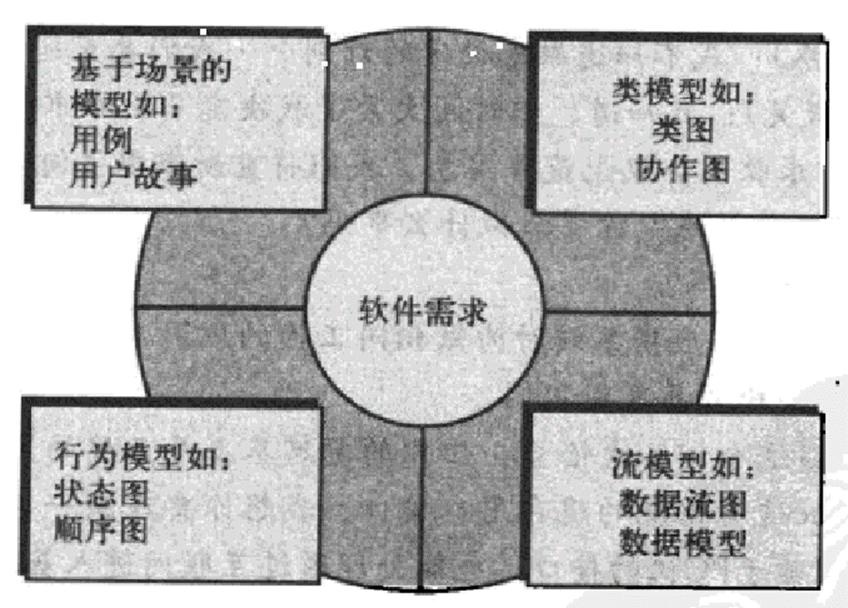
【注】柯逍课件里面写的四类需求建模方法
- 基于场景的元素: 表述用户如何与系统和使用软件时出现的特定活动序列进行交互。
- 用例, 用户故事
- 基于类的元素: 描述了系统操作的对象、对象间关系(某层级)，以及定义的类间发生的协作。
- 类图, 协作图
- 行为元素: 描述了外部事件如何改变系统或驻留在系统里的状态。
- 状态图, 顺序图
- 面向流的元素: 表示信息转换的系统，描述了数据对象在流过各种系统功能时是如何转换的。(输入 - 处理 - 输出)
- 数据流图, 数据模型
8.2 基于场景建模¶
8.2.1 创建初始用例¶
用例 : 帮助定义系统之外存在什么以及系统应该完成什么，即用例从某个特定参与者的角度出发，采用简明的语言描述一个特定的使用场景。但是问题是:
- 编写什么
- 写多少
- 编写说明应该多详细
- 如何组织说明
开始开发用例时，应该列出特定参与者执行的功能或活动。这些可以借助所需系统功能的列表，通过与利益相关者交流，或通过评估活动图(作为需求建模中的一部分而开发)获得
8.2.2 细化初始用例¶
为了全面理解用例描述功能，对交互操作给出另外的描述是很有必要的。
主场景中的每一个步骤都将通过如下提问得到评估:
- 在这一状态点，参与者能进行一些其他动作吗?
- 在这一状态点，参与者有没有可能遇到一些错误的条件?如果有可能，这些错误会是什么?
- 在这一状态点，参与者有没有可能遇到一些其他的行为(如由一些参与者控制之外的事件调用)?如果有，这些行为是什么?
👆 这些问题的答案导致创建一组次场景，次场景属于原始用例的一部分，但是表现了可供选择的行为
👇 以下问题也值得关注
- 在这些用例中是否可以支持功能(或参与者)的应答失败？
- 性能差的系统是否会导致无法预期或不正确的用户活动？
编写正式用例¶
非正规用例对于需求建模常常是够用的。 但是，当一个用例包含关键活动或描述一套具有大量异常处理的复杂步骤时，就会希望采用更为正规的方法。

8.3 补充用例的 UML 模型¶
图形化用户场景¶
每种需求建模方法都有其局限性，用例方法也无例外:
- 如果描述不清晰，用例可能会误导或有歧义。
- 对于必须特别详细和精准的需求建模情景 (例如安全关键系统)，图形化的表示方法更有助于理解。
可以使用:
- 用例图
- 活动图
- 泳道图
👆 这些要会画
见整理版
8.4 补充 数据建模¶
数据库
- 数据建模 : 定义在系统内处理的所有数据对象、数据对象之间的关系以及其它与这些关系相关的信息。
- 什么是==数据对象== ？
- 任何必须被软件理解的复合信息的表示；
- 所谓复合信息是指具有一系列不同性质或属性的事物，仅有单个值的事物 (例如，宽度)不是数据对象。
- 但“维度”(包括宽度、高度和深度)可以被定义为一个对象。
- 数据对象可能是外部实体 (例如产生或使用信息的任何东西)，事物 (例如报告或显示)，偶发事件 (例如电话呼叫)或事件 (例如警报)，角色 (例如销售人员)，组织单位 (例如财务部)，地点 (例如仓库)或结构 (例如文件)。
- 例如，一个人或一部车可以被认为是数据对象，它们可以用一组属性来定义。
- 什么是数据属性？
- 数据属性定义了数据对象的性质，可用于:
- 命名数据对象的实例(命名属性)
- 描述某个实例(描述属性)
- 建立对另一个表中的另一个实例的引用(引用属性)
- 标识符的值是唯一的，但不是必须的。
- 可以把一个或多个属性定义为标识符。
- 也就是说，当我们要找到数据对象的一个实例时，标识符属性成为一个“键”。

- 数据属性定义了数据对象的性质，可用于:
- 什么是关系？
- 数据对象之间的联系
- 数据对象可以以多种不同的方式与另一个数据对象连接。箭头方向可以减少歧义和误解。


闹麻了 前面铺垫那么多最后丢出来一张ER图
第 9 章 需求建模: 基于类的方法¶
-
基于类的分析模型的元素包括:
- 类和对象
- 属性
- 操作
- CRC 模型
- 协作图
- 包
-
建模过程
- 通过检查问题描述来识别类
- 分离潜在类
- 识别类的所有属性
- 定义操作
9.1 分析和识别类¶
进行语法解析，第一次出现的名词加下划线，第一次出现的动词用斜体
抽取名词来获得潜在类
分离出所有名词，我们该寻找什么？分析类表现为
- 外部实体 (其他系统、设备、人员)
- 事物 (报告、显示、字母、信号)
- 偶发事件或事件
- 角色 (经理、工程师、销售人员)
- 组织单元 (部门、组、团队)
- 场地 (制造车间或码头)
- 结构 (传感器、四轮交通工具、计算机)
在分析模型中，分析师考虑每一个潜在类是否应该使用如下这些特征
- 保留信息: 必须记录潜在类的信息才能保证系统正常工作
- 所需服务: 有一组可确认的，能改变属性值的操作
- 多个属性: 只有一个属性的类可能在设计中有用，但在分析阶段，更适合作为另一个类的某个属性
- 公共属性: 可定义一组属性，它们适用于该潜在类的所有实例
- 公共操作: 可定义一组操作，它们适用于该潜在类的所有实例
- 必要需求: 在问题空间中出现的外部实体、或者任何系统解决方案的运行所必需的信息
【注】某些被拒绝的潜在类(不符合上述特征)将成为被接收类的属性 对问题的不同陈述可能导致作出“接收或拒绝”不同的决定
9.2 描述属性¶
属性: 属于类的“东西”
课本: 属性描述了已经选择包含在需求模型中的类。实质上，属性定义了类，以澄清类在问题空间的环境下意味着什么
【注】如果有超过一个项和某个类相关联，应该避免把这个项定义为属性
9.3 定义操作¶
-
操作定义了某个对象的行为
-
操作的四个类型
- 以某种方式操作数据 (例如: 添加、删除、重新格式化、选择)；
- 执行计算的操作；
- 获取某个对象状态的操作；
- 监视某个对象发生某个控制事件的操作。
例¶
平面设计类(FloorPlan)的类图

9.4 CRC 建模¶
- CRC (Class-Responsibility-Collaborator，类-职责-协作者)建模 : 提供了一个简单方法，用于识别和组织与系统或产品需求相关的类。
- CRC 模型是表示类的标准索引卡片的集合，分为三部分
- 顶部写类名
- 左侧列出类的职责(与类相关的属性与操作)
- 右侧列出类的协作者(提供完成某个职责所需要信息的类)

9.4.1 类¶
类的分类可以通过如下三种分类方式进行拓展
- 实体类: 也称模型或业务类，是从问题说明中直接提取出来的。
- 边界类: 用于创建用户可见的和在使用软件时交互的接口(如交互屏幕或打印的报表)。
-
控制类: 用于管理“工作单元”，控制类可以管理:
- 实体类的创建或更新；
- 边界类获取信息后的实例化。
- 对象集合间的复杂通信。
- 对象间或用户和应用系统间交换数据的确认。
通常直到设计开始时才开始考虑控制类
类间的三种通用关系¶
- is-part-of(是。。。的一部分)
- has-knowledge-of(有。。。的知识): 一个类需要从另一个类中获取信息时
- depends-upon(依赖。。。): 依赖关系
9.4.2 职责¶
职责的 5 个指导原则
- 智能系统应分布在所有类中以求最佳地满足问题的需求
- 每个职责的说明应尽可能具有普遍性
- 信息和与之相关的行为应放在同一个类中
- 某个事物的信息应局限于一个类中而不要分布在多个类中
- 职责应由相关类共享
9.4.3 协作¶
类有两种方法实现其职责: (1) 类可以使用其自身的操作控制各自的属性，从而实现特定的职责；(自主完成) (2) 一个类可以和其他类协作
9.5 关联与依赖¶
9.5.1 关联¶
- 两个分析类以某种方式相互联系着，这些联系被称作==关联== (associations)。
- 在某些情况下，关联可以更进一步地指出多样性。多样性限制的表示:
1..*表示一个或多个0..*表示 0 或多个*表示范围无上界

9.5.2 依赖¶
- 一个 Camera 对象向一个 DisplayWindow 对象提供视频图像。这两个对象间的关系不是简单的关联，而是存在着依赖关系。
- 建模者必须提供特定的密码才能查看指定摄像机的位置。
《access》意味着通过特定的密码控制使用摄像机的输出。 - 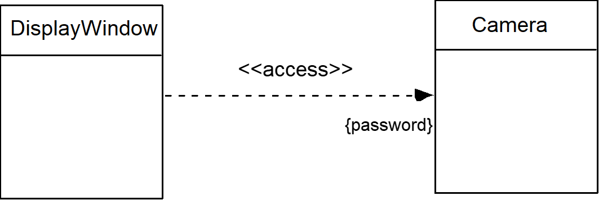
- 建模者必须提供特定的密码才能查看指定摄像机的位置。
分析包¶
将分析模型的各种元素以一种方式分类，分组打包后称为分析包，并取一个有代表性的名字
e.g

+: 该类是公共可见的 public
-: 该类对其他包是隐藏的 private
#: 只能由指定包中的类访问该元素 protect
? [补充] 面向流程建模 ※¶
- 描述了数据对象在系统中的变换过程
- 采用数据流图(DFD)，状态迁移图等
DFD¶
-
符号:
-
例子:

- 外部实体: 储户、日历
- 处理(数据变换): 检验、登录、付款
- 数据存储: 帐卡、存折
-
DFD 使用分层的方式来表示
- 第一个数据流模型(第 0 层 DFD，也称为==环境图== )表示整个系统，随后的数据流图改进环境图，在为一个后续层提供更多的细节。
- 当把 DFD 逐步细化时，分析师同时也就完成了系统功能分解。
- 与此同时，当数据在应用系统中的多个处理间流动时，DFD 的精炼结果导致了相应的数据精化。
-
指导原则
- 第 0 层 DFD(也称环境层 DFD 或顶层 DFD)将系统描述成一个泡泡；
- 仔细标记主要的输入和输出；
- 通过把选定的处理、数据对象和数据存储分离为下一层表示而开始精化过程，即逐步求精，一次精化一个处理；
- 使用有意义的名称，标记所有的箭头和泡泡；
- 从一层转至另一层时，注意保持信息流的连续性；
- 一次精化一个泡泡。
- 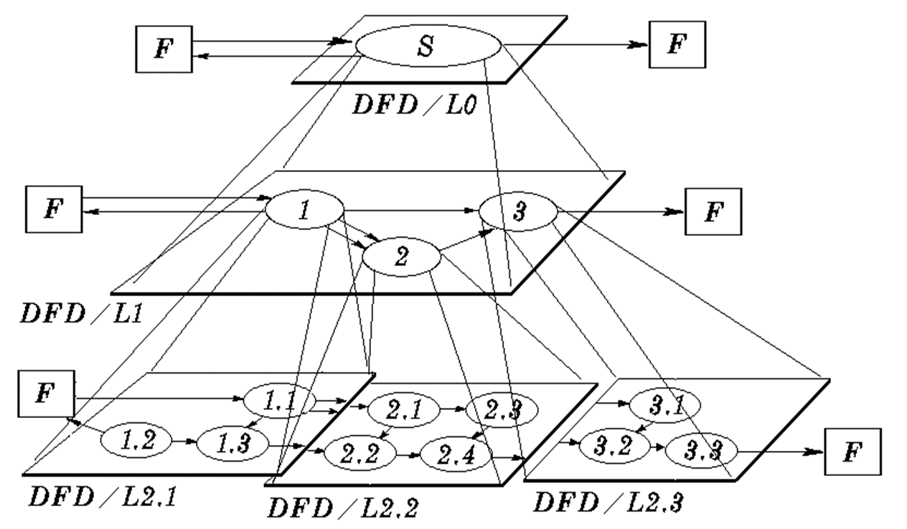
-
如何将第 0 层 DFD 扩展到第 1 层数据流模型？
- 对描述环境层泡泡的用例叙述采用语法解析的方法
- 根据语法解析:
- 动词是处理，在后续的 DFD 中用泡泡表示
- 名词是外部实体(方框)、数据或控制对象(箭头)、数据存储(双横线)。
- 在任何 DFD 层次中对某个泡泡的处理叙述文字进行语法解析，可以产生许多如何精化到下一个层次的有用信息。
- 持续进行 DFD 的求精，直到每个泡泡都执行了某个单一的功能，也就是说，直至每个泡泡所代表的处理都执行一个功能，并且该功能可以很容易地成为一个程序构件。
- 【注】DFD 之间的数据流必须要连续

例¶
- SafeHome 安全功能的环境层 DFD
- 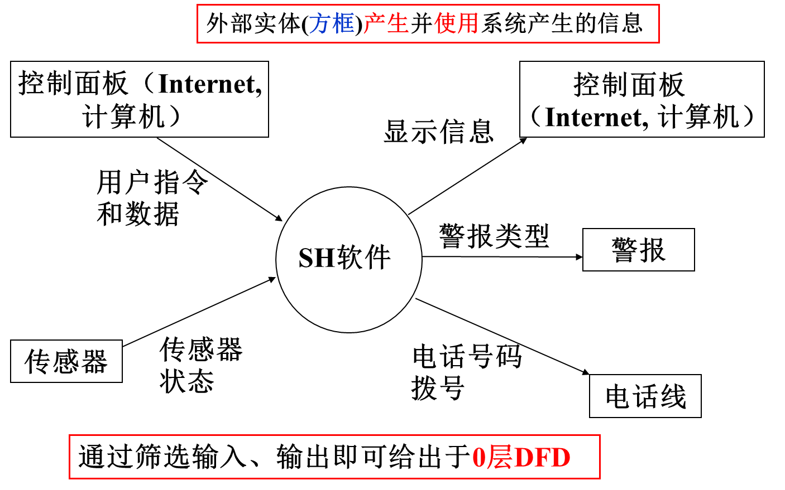
- 第一层 DFD
- 第二层 DFD(监测传感器) (始终记得验证输入与输出)
- SafeHome 安全功能的状态图


判定表¶
一个表格，描述条件和条件导致的动作的集合
- 例:

数据字典¶
-
管理各种关系模型中的信息，具体信息包括:
- 一般信息: 名字、别名、描述等；
- 定义信息: 数据类型、长度、结构；
- 使用特点: 值的范围、使用频率、使用方式；
- 控制信息: 来源、使用它的程序；
- 分组信息: 父结构、从属结构、物理位置等；
-
数据元素组成数据对象的方式:
- 顺序: 两个或多个分量以确定次序进行连接；
- 选择: 从两个或多个可能的元素中选取一个；
- 重复: 把指定的分量重复零次或多次。
-
符号:
=等价于
+和
-
[]或 (选择一个，用|隔开分量)- 例: 字母或数字 = [字母字符 | 数字字符]
-
{ }重复 ，(左右的数字分别为重复次数的上、下界)- 例: 字母数字串 = 0{字母或数字}7 (可重复 0-7 次)
( )可选 (即从括号从中任选一项，也可一项都不选)
-
例


第 10 章 需求建模: 行为和模式¶
10.1 生成行为模型¶
行为模型显示了软件如何对外部事件或激励做出响应
10.2 识别用例事件¶
-
事件 的产生: 只要系统和参与者之间交换了信息就发生了事件
- 【注】事件应该不是被交换的信息，而是已交换信息的事实
-
对于事件:
-
应确认每个事件的参与者
- 应标记交换的所有信息
- 应列出任何条件或限制
-
-
一旦确定了所有的事件，这些事件将被分配到所涉及的==对象== 。
- 对象负责生成事件
- 例如，Homeowner 房主对象 生成 “输入密码”事件；
- or 识别已经在其他地方发生的事件
- 例如，ControlPanel 控制面板对象 识别 “比较密码”事件的二元结果。
- 对象负责生成事件
10.3 状态表达¶
两种不同的状态描述¶
- 系统执行其功能时每个类的状态
- 系统执行其功能时从外部观察到的系统状态
类的状态¶
类状态有主动/被动之分
- 被动状态——某个对象所有属性的当前状态
- 主动状态——对象进行连续变换和处理时的当前状态
- 必然存在前后不同状态。比如，移动、休息、受伤、疗伤、被捕、失踪等；
- 必然发生事件(触发器)才能迫使对象做出从一个主动状态到另一个主动状态的迁移
具体实现:¶
状态图¶
状态图 描述类的对象所有可能的状态，以及事件发生时状态的转移条件。他们可以告知一个对象可以拥有的状态，并且事件会怎么随着时间的推移来影响这些状态。
状态图是对类图的补充。

活动图¶
活动图 描述用例要求所要进行的活动，以及活动间的约束关系，有利于识别并行活动。能够演示出系统中哪些地方存在功能，以及这些功能和系统中其他组件的功能如何共同满足前面使用用例图的业务需求。
活动图是状态图的一种特殊情况，这些状态大都处于活动状态。本质是一种流程图，它描述了活动到活动的控制流。
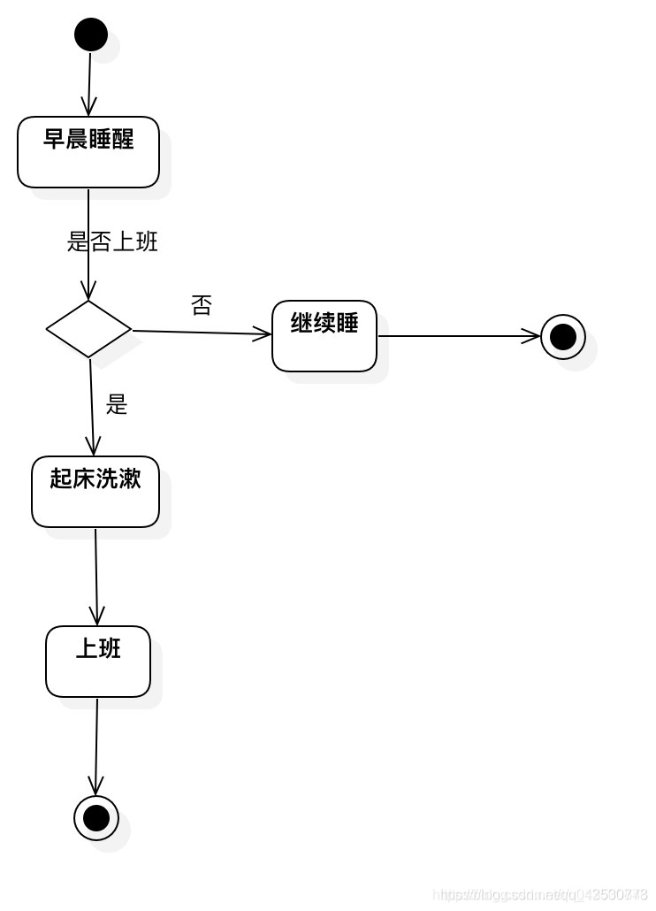
UML 活动图在特定场景内通过提供迭代流的图形化表示来补充用例。
- 两端为半圆形的矩形表示一个特定的系统功能
- 箭头表示通过系统的流
- 判定菱形表示判定分支
- 实心水平线意味着并行发生的活动。(见后面的案例)

顺序图¶
顺序图 是将交互关系表示为一个二维图:
- 用时间函数表明事件如何引发从一个对象到另一个对象的转移。
- 每个箭头代表了一个事件；
- 时间纵向向下度量；消息的顺序是从左到右排列；
- 窄的纵向矩形表示处理某个活动所用的时间。

类¶
类包括:
- 边界类
- 控制类
- 实体类
10.4 需求建模的模式¶
软件模式 是获取领域知识的一种机制，从而遇到新问题时可以反复使用。
- 在某些情况下，领域知识在同一应用领域中用于解决新问题。
- 在另外一些情况下，通过模式获取的领域知识可借助模拟用于完全不同的应用领域。
需求模型的组成元素
- 基于场景(用例)、基于数据(数据模型)、基于类、基于流和行为。
- 其中每个元素都是从不同的视角检查问题，并且每一个都提供一种发现模式的机会，可能发生在整个应用领域，或者发生在类似但横跨不同的应用领域。
在需求模型的描述中最基本的元素是==用例== 。一套连贯用例可以成为服务于发现一个或多个分析模式的基础。
例: 监控系统¶
用例: 监控反向运动 描述: 当车辆安装了反向齿轮，控制软件就能从后向视频摄像机将一段视频输入到仪表板显示器上。控制软件在仪表板显示器上叠加各种各样距离和方向的线，以便车辆向后运动时驾驶员能保持方向。控制软件还能监控临近传感器，以判定在车后方 10 英尺内是否有物体存在。如果临近传感器检测到某个物体在车后方 x 英尺内就会让车自动停止，这个 x 值由车辆的速度决定。
① 发现分析模式¶
本例中，“传感器”提供临近信息和视频信息。“执行器”用于车辆的停止系统。许多不同应用领域的软件需要监控传感器和控制物理执行器。所依照的分析模式描述了能广泛应用的通用需求。 形成了模式 Actuator-Sensor (执行器-传感器)
② 需求模式举例¶
模式名: 执行器—传感器 目的: 详细说明在嵌入式系统中的各种传感器和执行器。 动机: 嵌入式系统常有各种传感器和执行器。这些传感器和执行器都直接或间接连接到一个控制单元。虽然许多传感器和执行器看上去十分不同，但它们的行为是相似的，足以让它们构成一个模式。这个模式显示了如何为一个系统指定传感器和执行器，包括属性和操作。执行器—传感器模式为:
- 被动式传感器使用“拉机制”(通过请求查询来获得值)；
- 主动传感器使用“推机制”(值改变时，主动进行消息广播)。
约束:
- 每个被动传感器必须有某种方法读取传感器的输入和表示传感器值的属性。
- 每个主动传感器必须能在其值发生变更时广播更新消息。
- 每个主动传感器应该能发送一个生命刻度，即在特定时间帧中发布状态信息，以便检测出可能的错误动作。
- 每个执行者必须有某种方法调用由 ComputingComponent 构件产生的适当应答。
- 每个传感器和执行器应有实施检测其自身操作状态的功能。
- 每个传感器和执行器能测试接收值或发送值的有效性，并且当值超出指定边界时能设定其操作状态。
适用性: 对有多个传感器和执行器的任何系统都是非常有用的。 结构体: 执行器、被动传感器和主动传感器是抽象类，该模式中有四种不同的传感器和执行器。
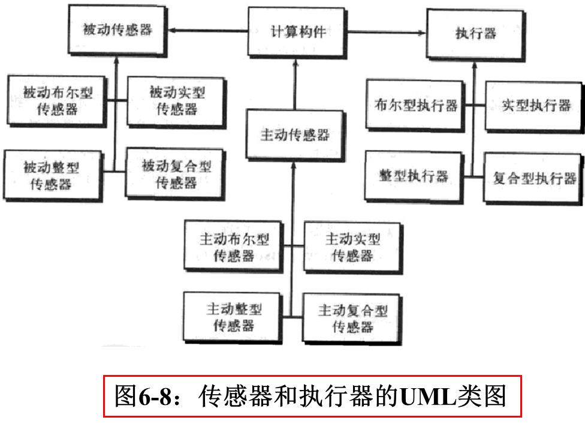
行为: 顺序图，用以控制安全摄像机的调整 (例如转动、变焦、聚焦)
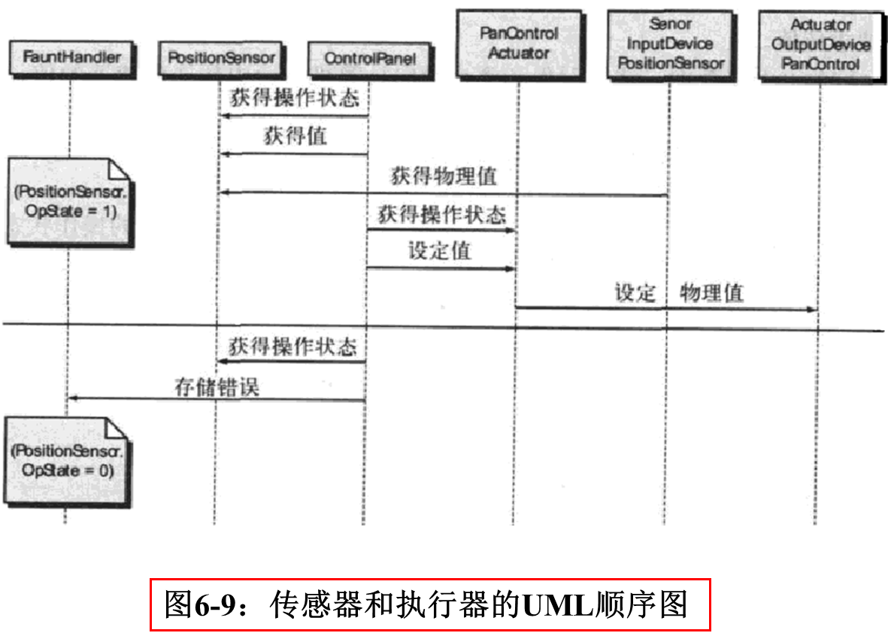
参与者: 列举需求模式中的类或对象，并描述每个类和对象的职责

协作: 描述的是对象和类之间如何进行交互活动以及实现自身的责任。
- 当 ComputingComponent 需要更新 PassiveSensor 时，它询问传感器，通过发送适当的消息请求传值。
- ActiveSensor 无需查询。这些对象和类主动向计算机单元中传送传感器的值，使用适当的方法设定在 ComputingComponent 中的值。对象和类在指定的时间帧发送至少一次生命刻度，以便用系统时间更新它们的时间戳。
- 当 ComputingComponent 需要设定执行器的值时，给执行器发送值。
- ComputingComponent 能使用适当的方法查询和设定传感器和执行器的操作状态。如果发现操作状态为零，就发送错误给 FaultHandler 错误处理程序，这个类包含处理错误消息的方法，比如启动更详细的恢复机制或者备份设备。如果不可恢复，系统只能使用传感器最后的已知值或者默认值。
结果:
- 传感器和执行器类有一个通用接口。
- 只能通过消息访问类的属性，并且类决定是否接受这个消息。 例如，如果设定执行器的值超过其最大值，执行器类就可能不接受消息，或者使用默认的最大值。
- 通过传感器和执行器的统一接口可以降低系统潜在的复杂度。
第 11 章 设计概念¶
软件设计在软件工程过程中属于核心技术，它的应用与所使用的软件过程模型无关。
软件设计时建模活动的最后一个软件工程活动，接着便要进入构建阶段(编码与测试)
11.1 软件工程中的设计¶
需求模型 → 设计模型

四种设计模型¶
-
数据/类设计
- 将类模型转化为设计类的实现以及软件实现所要求的数据结构
-
体系结构设计
- 软件的整体结构
- 定义了软件的主要构造元素之间的关系，包括软件部件、外部可见的属性和它们之间的关系；
- 可以从系统规约、需求模型及其定义的子系统的交互导出。
-
接口设计
- 描述了软件和协作系统之间、软件和使用人员之间是如何通信的，使用场景和行为模型为接口设计提供了大量的信息
- 外部系统接口: 银行网上支付接口
- 设备接口: 读卡器、扫描枪、传感器接口
- 信息接口: 需要导入/导出的数据接口
- 设计软件内部各个部件间的接口
-
构件级设计(部件级别设计)
- 完整的描述每个软件构件的内部细节
- 将软件体系结构的结构化元素变换为对软件构建的过程性描述，从基于类的模型和行为模型中获得的信息是构件设计的基础
- 构件整体的处理和执行流程
- 构件内本地数据对象的数据结构
- 构件内处理过程的算法
11.2 设计过程¶
11.2.1 质量指导¶
整个设计过程中，我们使用一系列技术评审来评估设计演化的质量，良好设计演化的三个特征:
-
满足用户需求:
- 必须实现需求模型中所有的显式需求；
- 必须满足用户希望的所有隐式需求；
-
可读、可理解:
- 设计必须是可读、可理解的，使得将来易于编程、易于测试、易于维护；
-
全面性:
- 应从实现角度出发，给出与数据、功能、行为相关的软件全貌
11.2.2 质量属性¶
软件质量属性 FURPS 体现了所有软件设计的目标
- 功能性 (Functionality) : 通过评估程序的特征集和能力、所提交功能的通用性以及整个系统的安全性来评估。
- 易用性 (Usability): 通过考虑人员因素、整体美感 、一致性和文档来评估。
- 可靠性 (Reliability): 通过测量故障的频率和严重性、输出结果的精确性、平均故障时间(Mean-Time-To-Failure, MTTF) 、故障恢复能力和程序的可预见性来评估。
- 性能 (Performance): 通过考虑处理速度、响应时间、资源消耗、吞吐量和效率来度量。
- 可支持性 (Supportability): 包括可维护性(可扩展性、适应性和耐用性)，可测试性、兼容性、可配置性、系统安装的简易性和问题定位的容易性。
【注】并不是每个软件质量属性都具有相同的权重
重要的是: 设计开始时就应该考虑这些质量属性，而不是设计完成后和构建已经开始时才考虑
11.2.3 通用设计任务集¶
- 检查信息域模型，并为数据对象及其属性设计恰当的数据结构。
- 使用分析模型，选择一种适用于软件的体系结构风格。
-
将分析模型分割为若干个子系统，并在体系结构内分配这些子系统:
- 确保每个子系统是功能内聚的；
- 设计子系统接口；
- 为每个子系统分配分析类或功能；
-
创建一系列的设计类或构件:
- 将每个分析类描述转化为设计类。
- 根据设计标准检查每个设计类，考虑继承问题。
- 定义与每个设计类相关的方法和消息。
- 评估设计类或子系统，并为这些类或子系统选择设计模式。
- 评审设计类，并在需要时修改。
- 设计外部系统或设备所需要的所有接口。
- 设计用户接口:
- 评审任务分析的结果。
- 基于用户场景详细说明活动序列。
- 创建接口的行为模型。
- 定义接口对象，控制机制。
- 评审接口设计，并根据需要进行修改。
- 进行构件级设计:
- 在相对较低的抽象层次上详细地说明所有算法。
- 精化每个构件的接口。
- 定义构件级的数据结构。
- 评审每个构件并修正所有已发现的错误。
- 开发部署模型。
11.3 设计概念¶
11.3.1 抽象¶
分为两种不同的抽象:
-
数据抽象 描述数据对象的具体数据集合
- e.g 门

- e.g 门
- 过程抽象 具有明确和有限功能的指令序列
- e.g 开门

- e.g 开门
11.3.2 体系结构¶
- 体系结构 是程序构件(模块)的结构和组织、这些构件交互的形式以及这些构件所用数据的结构。
- 软件设计的目标之一是导出系统的体系结构示意图，该示意图作为一个框架，将指导更详细的设计活动。
-
一系列的体系结构模式使软件工程师能够解决常见的设计问题。
-
软件体系结构设计的一组属性
-
结构特性
- 定义了系统的构件(如模块、对象、过滤器)、构件被封装的方式以及构件之间相互作用的方式。
-
外部功能特性
- 指出设计体系结构如何满足需求，这些需求包括: 性能需求、能力需求、可靠性需求、安全性需求、可适应性需求以及其他系统特征需求。
- 相关系统族
- 体系结构应当能抽取出在一类相似系统开发中经常遇到的重复性模式。本质上，设计应当能够重用体系结构构件。
-
【注】ADL(Architecture Description language): 体系结构描述语言
11.3.3 (设计)模式¶
设计模式 描述了解决某个特定设计问题的设计结构，该设计问题处在一个特定环境中，该环境会影响到模式的应用和使用方式
设计模式的目的:
提供一种描述，使得设计人员可以决定:
- 模式是否适用于当前的工作
- 模式是否能够复用
- 模式是否能够用于指导开发一个相似但功能或结构不同的模式
怎么就讲完了 我那么多设计模式不讲一下?
11.3.4 关注点分离¶
关注点分离 将关注点分割为更小的关注点，以便于用更小的工作量和时间解决一个问题
- 分而治之
11.3.5 模块化¶
关注点分离最常见的表现
-
模块化 : 按照设计原则将系统划分为若干个较小的模块
- 模块间相互独立，又相互关联
- 实质: 系统分解和抽象的过程
-
模块 是相对独立的程序体:
- 模块是数据说明、可执行语句等程序对象的集合。
- 模块是单独命名的，并且可以通过名字来访问。
- 例如: 类、过程、函数、子程序、宏等 。
-
通过模块化降低开发复杂度
- C(x): 问题 x 的复杂性； E(x): 解决问题 x 所需工作量；
- 对于两个问题 p1 和 p2:
- 如果 C(p1)>C(p2) 那么 E(p1)>E(p2) 问题越复杂解决问题所需要的花费更多
- C(p1+p2)>C(p1)+C(p2)因此 E(p1+p2)>E(p1)+E(p2) 将复杂问题分解成可以多个子问题分别解决会更加容易(模块化思想的依据)
-
能否无限制划分软件？？？答案: 否

- 子模块工作量之和(绿色部分)下降 模块之间的接口和集成以及沟通成本上升
- 结论: 适度的模块化, 寻找最佳模块化程度平衡点
- 模块化优点
- 使开发工作更易于规划；
- 可以定义和交付软件增量；
- 更容易实施变更；
- 能够更有效地开展测试和调试；
- 可以进行长期维护而没有严重的副作用。

11.3.6 信息隐蔽¶
-
信息隐蔽 原则:
- 每个模块都尽量对其他模块隐藏自己的内部实现细节, 只交流实现软件功能所必须的信息
- 由于大多数数据和过程对软件的其他部分是隐蔽的，因此，在修改过程中不小心引入的错误就不太可能传播到软件的其他地方
- 信息隐蔽是实现抽象/模块化机制的基本支撑
-
优点:
- 对外隐蔽，减少副作用的可能性；
- 强调通过控制接口进行通信；
- 不鼓励使用全局数据；
- 使用封装——高质量的设计的一个属性；
- 使得产生高质量软件。
11.3.7 功能独立¶
关注点分离，模块化，抽象和信息隐蔽概念的直接产物
-
功能独立 : 通过开发具有“专一”功能和“避免”与其他模块过多交互的模块，实现功能独立
- 每个模块仅涉及需求的某个特定子集, 并且每个模块只有一个简单的接口
-
两条标准进行评估: 内聚&耦合
内聚性¶
-
内聚性 : 一个模块内部各个元素彼此结合的紧密程度
- 一个内聚的模块应该只完成一件事情。应该避免“分裂型”构件
-
内聚的七个层次:
- 巧合内聚: 将几个模块中的相同程序代码段独立出来建立的模块(无明显独立性)
- 逻辑内聚: 完成一组逻辑相关任务的模块，由控制型参数来确定执行哪一种功能 (选择其中一个功能，内聚性不强)
- 时间内聚: 模块中的多个任务必须在一段时间内先后执行 (有时间约束，无明确的过程约束)
- 过程内聚: 模块内的多个任务必须按指定的过程执行。
- 通信内聚: 模块内所有处理元素都集中在某个数据结构的一块区域中 (例如对课程进行选、退课和查询)。
- 顺序内聚: 指一个模块完成多个功能，这些功能又必须顺序执行 (更加单一的过程内聚)。
- 功能内聚: 指一个模块中各个部分都是为完成一项具体功能而协同工作，紧密联系，不可分割的 (单个功能)。

耦合性¶
-
耦合性 : 显示了模块之间的相互依赖性
- 表明软件结构中多个模块之间的相互连接。
- 简单的连接性使得软件易于理解并减少“涟漪效果“的倾向
-
耦合的七个层次
- 内容耦合: 一个模块可以直接访问另一个模块的内部数据或内部功能。
- 公共耦合: 多个模块共同访问某些公共数据元素。
- 外部耦合: 多个模块间需要遵循同样的外部约束，例如通信协议、数据格式等。(遵循全局的约束)
- 控制耦合: 模块间的交互参数包含控制信息，可影响另一个模块的执行逻辑。
- 标记耦合: 模块间传递特定的数据结构。
- 数据耦合: 模块间仅传递简单数据。
- 非直接耦合: 两个模块可以相对独立工作。

软件设计时，尽量做到高内聚，低耦合
11.3.8 求精¶
求精 : 对各种抽象的细化
抽象和细化是互补的概念
- 抽象能够说明内部过程和数据，但对外部使用者隐藏了底层的细节
- 细化有助于在设计过程中揭示底层细节。
↑ 两个概念均有助于设计人员在设计演化中构建出完整的设计模型
11.3.9 重构¶
为简化设计而进行的重组
- 重构 : 不改变代码[设计]的外部行为而是改变其内部结构。
11.3.10 设计类¶
-
五种设计类, 每种表示体系结构的一个不同层次
- 用户接口类
- 业务域类
- 过程类
- 持久类
- 系统类
-
组织良好的设计类的四个特征:
- 完整性与充分性
- 原始性
- 高内聚性
- 低耦合性
11.4 设计模型¶
两个维度: 过程维度、抽象维度

四个主要元素: 数据，体系结构，构件，接口
设计元素¶
- 数据设计元素
- 数据模型->数据结构/数据库体系结构/数据仓库
- 体系结构设计元素
- 提供软件的整体视图
-
接口设计元素——UML 类图中的接口
-
构件级设计元素——UML 构建图(组件图)
- 构件图也称组件图。
- 描述了软件的各种构件和它们之间的依赖关系。
- 通常包括三个元素: 构件、接口和依赖。
- 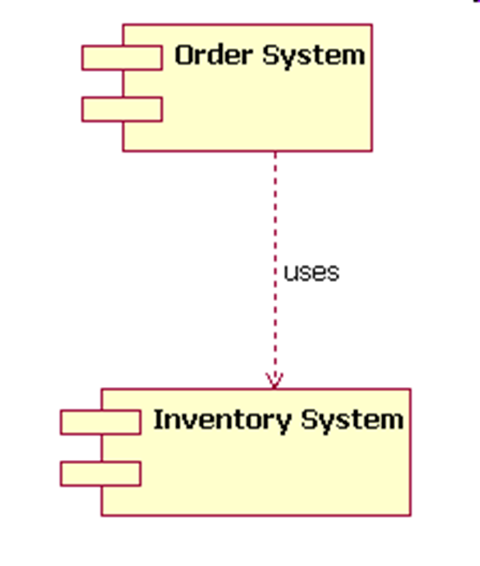
- 部署级设计元素——UML 部署图


第 12 章 体系结构设计¶
疯了 目录都一长串 疯了
12.1 软件体系结构 12.2 体系结构类型 12.3 体系结构风格 12.4 体系结构考虑要素 12.5 体系结构决策 12.6 体系结构设计 12.7 评估候选的体系结构设计 12.8 经验学习 12.9 基于模式的体系结构评审 12.10 体系结构一致性检查 12.11 敏捷性与体系结构
12.1 什么是体系结构¶
-
软件体系结构 (架构): 指的是系统的一个或者多个架构
- 包括软件构件、构件的外部可见属性以及他们之间的相互关系
- 对于同一个体系结构, 可能会产生多种基于该体系结构的设计
-
体系结构决策描述模板
- 设计问题: 描述将要解决的体系结构设计问题。
- 解决方案: 陈述所选择的解决设计问题的方法。
- 分类: 指定问题和解决方案陈述的分类(例如，数据设计、内容结构、构件结构、集成)
- 假设: 指出任何有助于制定决策的假设。
- 约束: 指定任何有助于制定决策的环境约束(例如，技术标准、可用的模式、项目相关问题)。
- 候选方案: 简要描述所考虑的体系结构设计候选方案。
- 争论: 陈述为什么选择这种解决方案而不是其他的候选方案。
- 意义: 指出制定决策对设计的影响。选择的解决方案会在某种程度上约束设计吗?
- 相关决策: 其他记录的决策和该决策有什么相关性?
- 相关关注点: 其他相关的需求和该决策有什么相关性?
- 工作产品: 指出在体系结构描述中，决策会在哪里体现出来。
- 注释: 其他团队的备忘录或文档。
12.2 体系结构类型¶
类型经常会规定特定的体系结构方法
类型隐含了在整个软件领域中的一个特定类别
12.3 体系结构风格¶
软件体系结构风格，每种风格描述一种系统类别，包括四个关键元素
- 一组构件，它们完成系统需要的某种功能
- 一组连接件，它们实现构件间的 “通信、合作和协调”
- 约束，定义构件如何集成为一个系统
- 语义模型，使设计者能通过分析系统的组成成分的已知属性，来理解系统的整体性质
体系结构风格的简单分类
12.3.1 以数据为中心的体系结构¶
- 以==数据为中心== 的体系结构: 数据存储位于这种体系结构的中心，其他构建会经常访问该数据存储，并进行增删改查。
- 黑板(变种): 当用户感兴趣的数据发生变化时，他将通知客户软件

-
特点:
- 一些数据(比如一个文件或者数据库)保存在整个结构的中心，并且被其他部件频繁地使用、添加、删除、或者修改
- 提升可集成性，即现有的构件可以被修改而且新的客户构件可以加入到系统结构中，而无需考虑其他的客户。
- 数据可以在客户间通过“黑板”机制传送，客户构件独立地执行过程。
-
优点:
- 开放: 数据对所有使用者开放
- 客户构件基本独立
-
问题:
- 客户软件难以协作
- 中心数据的格式必须为所有客户软件所接受
12.3.2 数据流体系结构¶
-
数据流体系结构 : 当输入数据经过一系列的计算构件和操作构件的变换形成输出数据时，可应用该体系结构。
- 例如管道—过滤器模式: 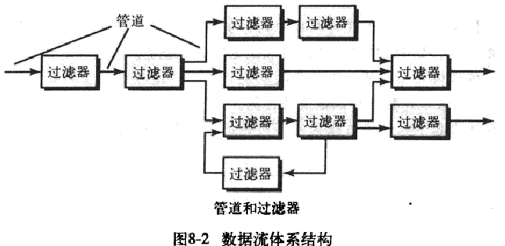
-
特点:
- 过滤器没有必要了解与之相邻的其他过滤器的工作
- 数据需要服从输入 → 变换 → 输出的简单流程
-
优点:
- 易于理解
- 过滤器易于重用
- 系统易维护
- 易并行运行
-
问题:
- 适用于批处理，不易于交互
- 流的协作需要考虑
- 过滤器功能重复
12.3.3 调用和返回体系结构¶
能够设计出一个相对易于修改和扩展的程序结构
存在子风格:
-
主程序/子程序体系结构
将功能分解为一个控制层次结构，其中主程序调用一组程序构件，程序构件又去调用别的程序构件

-
远程调用体系结构
构件分布在网络的多个计算机上
12.3.3 面向对象体系结构¶
- 系统的构件封装了数据和应用到该数据上的操作。
- 构件间通过消息传递进行通信与合作。
12.3.4 层次体系结构¶

- 定义了不同的层次，各个层次完成各自的操作
- 每一层为上层提供服务，又接受下层的服务
优点:
- 明确的抽象层次，易于增减或修改层次
问题:
- 系统并不是总能分层
体系结构模式¶
风格的具体体现(体系结构设计的一个框架)
区别:
(1)体系结构模式涉及的范围要小一些，它更多集中在体系结构的某一局部而不是体系结构的整体 (2)模式在体系结构上施加规则，描述了软件是如何在基础设施层次上处理某些功能性方面的问题 (3)体系结构模式倾向于在系统结构的环境中处理特定的行为问题
体系结构模式 : 体系结构模式在特定坏境和一系列限制与约束下处理特定的应用问题。
模式提出了能够作为体系结构设计基础的体系结构解决方案
12.4 体系结构的考虑要素¶
- 经济型: 整洁, 通过抽象化减少无用细节
- 易见性: 体系结构和决策及其依据应该是显而易见的
- 隔离性: 模块化
- 对称性: 属性是均衡一致的
- 应急性: 能够应对突发事件
12.5 体系结构决策¶
决策模型记录了所需要的体系结构决策、在过往的项目中实际做出的决策以及支持这些决策的理由。
12.6 体系结构设计¶
系统环境表示¶
- 在体系结构设计层，软件体系结构设计师用体系结构环境图 ACD对软件与其外围实体的交互方式进行建模
- ACD 例子:

- 与目标系统交互的系统，即外部实体可表示为: 上级系统: 视目标系统为某些高层处理方案的一部分 下级系统: 被目标系统使用，向完成目标系统提供必要的数据和处理 同级系统: 在对等的基础上相互作用 (即信息或者由同级系统和目标系统产生，或者被同级系统和目标系统使用) 参与者: 通过产生和消耗必要的处理信息，实现与目标系统交互的实体。(人、设备)
- SafeHome 安全功能的体系结构环境图

将体系结构细化为构件¶
-
构件的来源:
- 应用领域: 需求分析模型中的类
- 基础设施域: 内存管理，通信构件，数据库构件等
- 界面领域: 环境图中描述的接口隐含多个特定的构件
-
每一个顶层构件都必须经过反复的迭代精化
-
带有顶层构件的 SafeHome 整体体系结构
- 精化:


要会画 UML 构件图
体系结构评审¶
一种特定的技术性评审，提供了一种评估方法，该方法可以评估软件体系结构满足系统质量需求的能力和识别任何潜在风险的能力。
往往只设计软件工程团队成员
评审技术:
- 基于经验的推理
- 原型评估
- 情境评审
- 检查单的使用
12.8 经验学习¶
用决策分析和解决方案(DAR)有助于消除分歧和促成协作
- 原因链法
- 石川鱼骨法
- 思维导图
12.9 基于模式的体系结构评审(PBAR)¶
用于应对短暂的开发周期、紧迫的交付日期、反复变更的需求以及小规模的开发团队
12.10 体系结构一致性检查¶
静态体系结构一致性分析——评估已完成的软件系统是否与它的体系结构模型相符合
12.11 敏捷性与体系结构¶
敏捷团队坚持在新的需求出现时自由地做出变更。
体系结构设计师想要确保的是体系结构的重要部分已经经过了斟酌，并且开发者也征求了利益相关者的意见。
两方的意见可以通过运用一种称为进展的签署的做法来得到满足，即在每一次新的原型完成后，相关的产品应该记录在文档中并获得批准。
[补充]使用数据流进行体系结构映射¶
- 可以定义一些不同的“映射”，利用这些映射可以把数据流图变换成软件结构。
- 两种信息流类型: 变换型、事务型。
- 大型软件系统通常是变换型结构和事务型结构的混合。
- 通常采用以变换分析为主，事务分析为辅的方式进行软件结构设计。
- 数据流映射流程:

- 事务流
- 将外部信息转换成一个事务，对事务进行评估，并且根据评估结果，启动其中一条(也可能是若干条)动作路径流。
- 发出很多动作路径的信息流中心称为事务中心。

- 事务映射
- 步骤: (1) 评审基本系统模型； (2) 评审和精化软件的数据流图； (3) 确定 DFD 含有变换流还是事务流特征； (4) 标识事务中心和每条动作路径上的流特征； (5) 将 DFD 映射到一个适合事务处理的体系结构上； (6) 分解并精化事务结构和每条动作路径的结构； (7) 精化第一次迭代得到的体系结构。

步骤 1: 评审基本系统模型¶
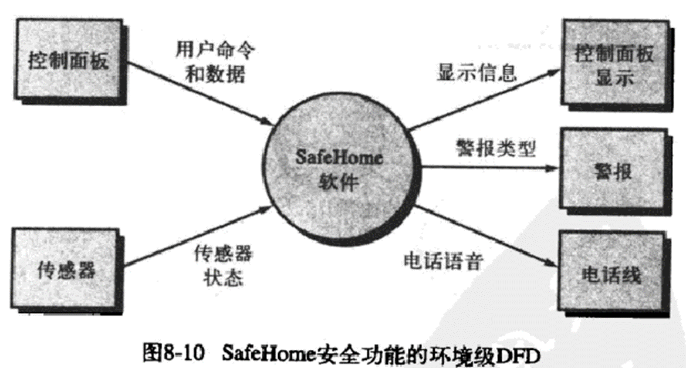
基本系统模型或者环境图把安全功能描述为一个单一的变换，描述了流入和流出该功能数据的外部生产者和消费者
求精后的安全功能数据流

步骤 2: 评审和精化软件的数据流图¶
对从需求模型获得的信息进行精化，以获得更多的细节。
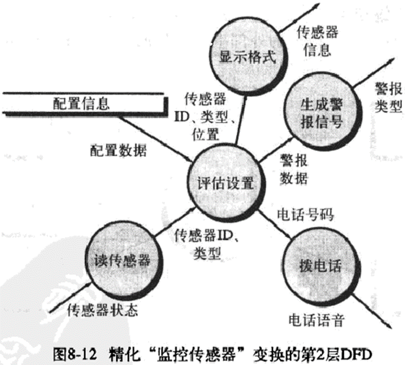
监控传感器的第 3 层 DFD

第 3 层 DFD，数据流图中的每个变换都展示了相对较高的内聚性，即变换所隐含的过程完成单一的、清楚的功能，该功能可以作为构件来实现，所以不需要再进一步精化。
步骤 3: 确定 DFD 是否含有变换流或事物流特征¶
数据通过一条输入路径进入软件，沿三条输出路径流出。(三条输出路径，而不是选择一条) 因此，信息流将呈现出一个从头到尾的总体变换特征。
步骤 4: 通过确定输入和输出流的边界，分离出变换中心¶
输入数据流沿着一条路径流动，在该路径上，信息从外部形式转换为内部形式；输出流将内部数据转化为外部形式。 但是输入流和输出流的边界还有待说明，也就是说，不同的设计人员在选择流边界时可能不尽相同。事实上，不同的流边界选择会导致不同的设计方案。尽管在选择流边界时要加以注意，但沿流路径若有一个“泡泡”的差异对最终程序结构的影响并不会太大。本设计步骤的重点在于选择合理的边界，而不是花时间反复考虑边界的位置。 例如，将输入流的边界放置在读传感器和获得响应信息之间也可以
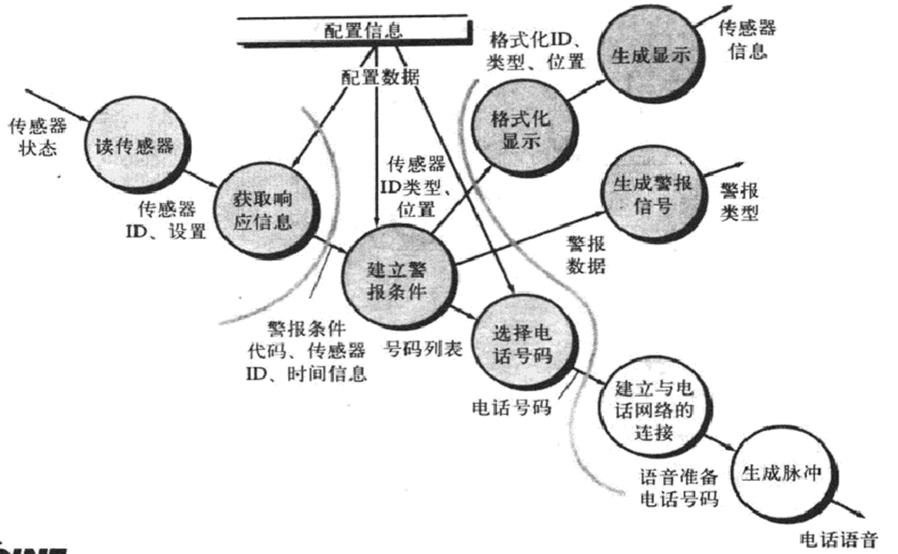
步骤 5: 完成“第一级分解”¶
使用这个映射导出的程序体系结构导致了自顶向下的控制分布。分解的作用是得到一个程序结构: 其中
- 顶层构件完成决策制定；
- 底层构件完成大多数输入、计算和输出工作；
- 中间层构件完成一部分控制和适度的任务。
当遇到变换流时，DFD 将被映射成一个能为信息的输入、变换和输出处理提供控制的特定结构。

步骤 6: 完成“第二级分解”¶
第二级分解是将 DFD 中的每个变换(泡泡)映射到体系结构中的相应模块。从变换中心的边界开始，沿输入路径和输出路径向外，将变换依次映射到软件结构的从属层:
- 一对一映射；
- 两个甚至三个泡泡可以合并在一起表示为一个构件；
- 一个单独的泡泡也可以扩展成两个或者多个构件。
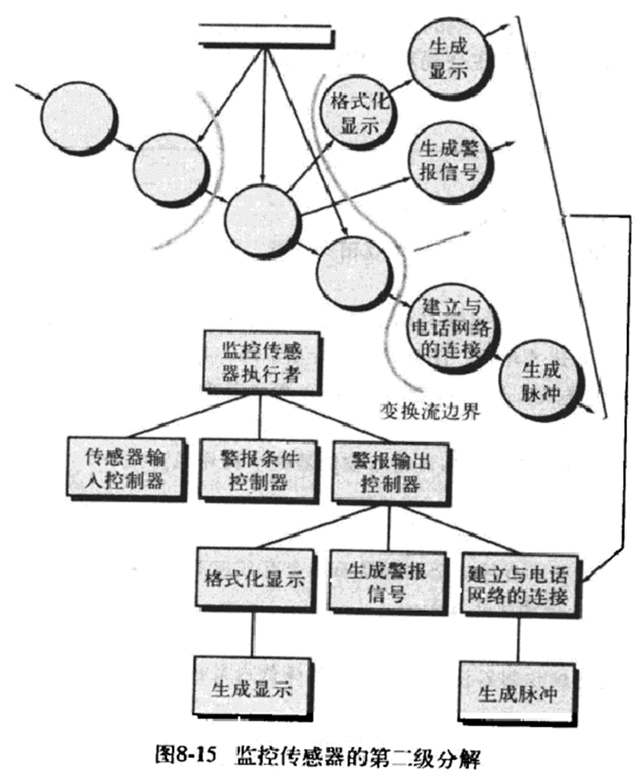
监控传感器第一次迭代结构¶

步骤 7¶
步骤 7: 使用提高软件质量的设计启发式方法，精化第一次迭代得到的体系结构: 应用功能独立性的概念精化第一次迭代得到的体系结构 对构件进行“分解” 或“结合”，可以产生合理的分解、好的内聚性、低的耦合性的构件。最重要的是获得易于实现、测试和维护的程序结构。
精化程序结构¶
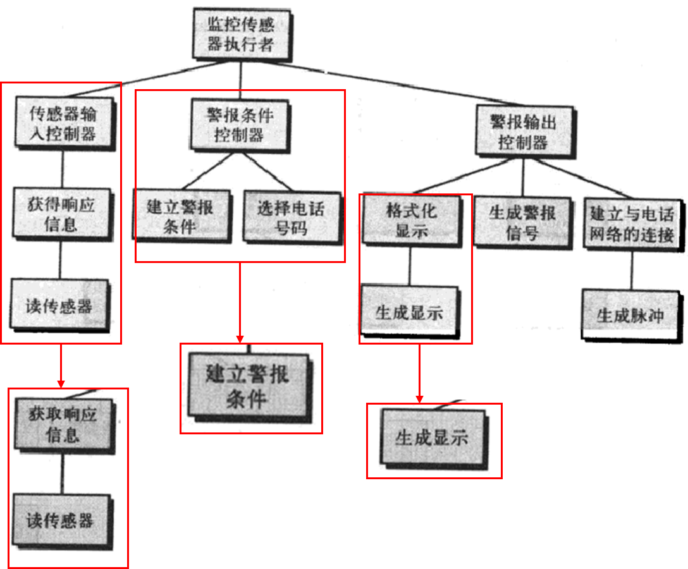

出卷系统案例¶
回顾:
-
一层数据流图

-
二级数据流图(自动出卷部分)

自动出卷系统的体系结构

第 13 章 构件级设计¶
体系结构设计第一次迭代完成之后，就应该开始构件级设计。 在这个阶段，全部的数据和软件的程序结构都已经建立起来。其目的是把设计模型转化为运行软件。
13.1 什么是构件¶
- 构件
- 通俗定义: 是一段程序，该程序能完成一段相对独立的功能，并有一定的通用性。
- 构件是计算机软件中的一个模块化的构造块。
- 正式定义：系统中模块化的、可部署的和可替换的部件，该部件封装实现并暴露一组接口。
- 构件驻留于软件体系结构的内部，它们必须与其他的构件和存在于软件边界以外的实体(如其他系统、设备和人员)进行通信和合作。
- 针对不同的系统设计体系，构件所指的对象不一样：
- 在面向对象的设计中，构件包括一组协作的类。
- 一般来讲，构件的规模比类大，但有时一个构件也可以对应一个类。
面向对象的观点¶
对于体系结构设计组成部分的每个构件都要实施==细化== 。
细化一旦完成，要对每个属性、每个操作和每个接口进行更进一步的细化。
适合每个属性的数据结构必须予以详细说明。
另外还要说明实现与操作相关的处理逻辑的算法细节。
- 为了说明设计细化过程，考虑为一个高级印刷车间构造软件。软件的目的是：
- 收集前台的客户需求
- 对印刷业务进行定价
- 然后把印刷任务交给自动生产设备
- 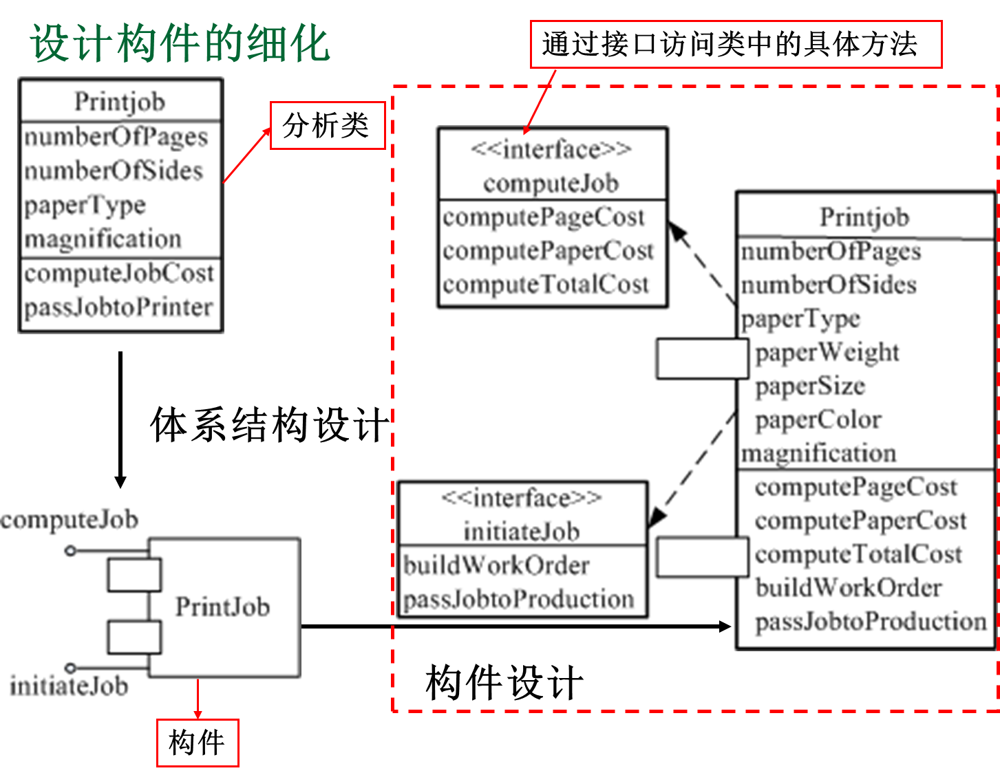
传统观点¶
- 在传统软件工程环境中，一个构件就是：
- 程序的一个功能要素，程序由处理逻辑与实现所需的内部数据结构以及能够保证构件被调用和实现的接口构成。
- 传统构件也称模块。
- 承担三个重要角色之一：
- 控制构件：位于高层，协调问题域中所有其他构件的调用；
- 问题域构件：位于底层，完成部分或全部用户的需求；
- 基础设施构件：完成问题域所需相关处理的功能。
例: 影印中心¶
- 每个方框都表示一个软件构件 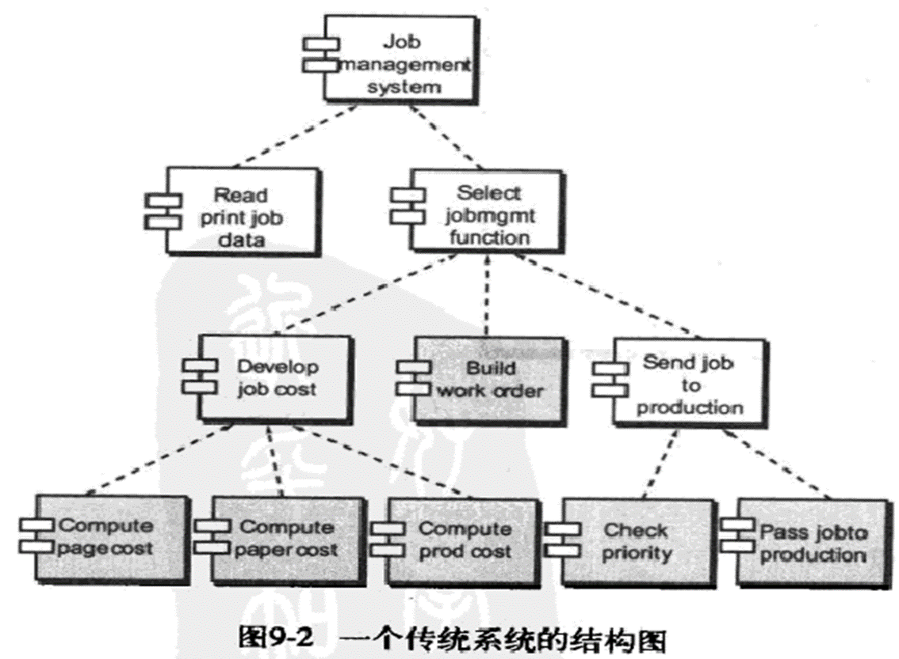
- 考虑 ComputePageCost 模块。该模块的目的在于根据用户提供的规格说明来计算每页的印刷成本：
- 为了实现该功能需要以下数据：文档的页数，文档的印刷份数，单面或者双面印刷，颜色，纸张大小。
- 这些数据通过该模块的接口传递给 ComputePageCost， ComputePageCost 根据任务量和复杂度，使用这些数据来决定一页的成本。每页的成本与任务量成反比，与任务的复杂度成正比。
- 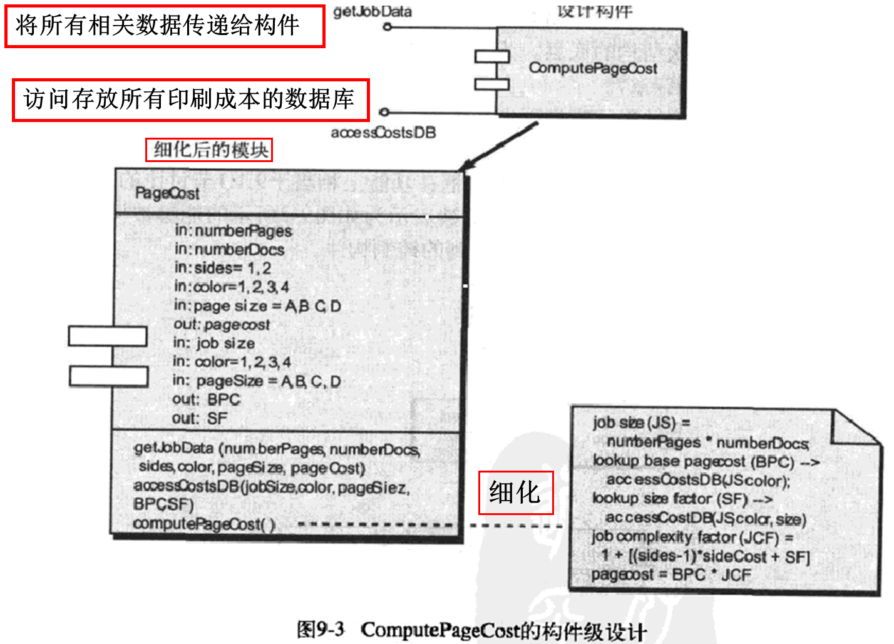
总结¶
面向对象观点和传统观点都假定设计者必须从需求模型中导出的规格说明创建新构件。
但在过去的 20 年间，软件工程界已经开始强调使用已有构件或设计模式来构造系统的必要性。
13.2 设计基于类的构件¶
13.2.1 基本设计原则¶
构件级设计的基本设计原则, 可以使得设计变更时适应变更, 并减少副作用的传播
- 开闭原则 (The Open-Closed Principle, OCP)：模块应该对外延具有开放性，对修改具有封闭性；
- Liskov 替换原则：子类可以替换它们的基类；
- 依赖倒置原则：依赖于抽象，而非具体实现 ；
- 接口分离原则：多个用户专用接口比一个通用接口要好。
① 开闭原则¶
-
设计者应采用一种无需对构件自身内部(代码或内部逻辑)做修改就可以进行扩展的方式来说明构件。
- 实现接口 / 子类重载方法
-
解决方法：抽象、多态，引入抽象基类，构件的变化通过引入新的派生类来完成。
-
例 1: 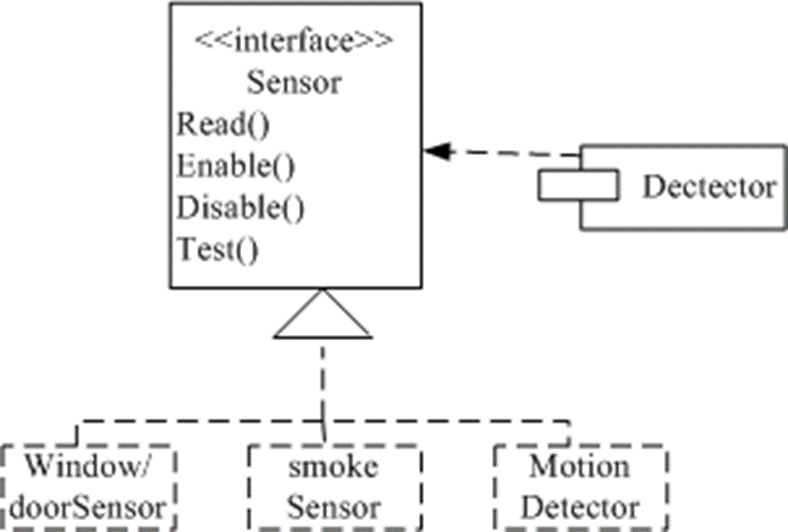
- 对于各种不同的传感器，Sensor 接口都向 Detector 构件呈现一致的视图。 如果需要添加新类型的传感器，对 Detector 类无需进行任何改变
-
例 2:
- 问题：要求以一定顺序在图形用户接口上画圆和正方形。
-
常规解决方法：
-
枚举出所有图形类型；
-
定义所有图形结构；
-
定义每一种图形的画法；
-
在画每一曲线时，依据类型选择合适的函数去完成绘画任务(用 switch 实现分支)。
-
-
解决方法
- 构建一个基类 Shape, 定义虚函数 Draw()
- 子类 Square 和 Circle 重载 Draw()
- 在调用时, Set
② Liskov 替换原则¶
-
Liskov 替换原则 : 子类可以替换它们的基类。
-
Liskov 原则要求源自基类的任何子类必须遵守基类与使用该基类的构件之间的隐含约定：
- “约定”既是前置条件—构件使用基类前必须为真；
- 又是后置条件—构件使用基类后必须为真。
- 当设计者创建了导出类 (子类)，则要确保这些导出类必须遵守前置条件和后置条件。
-
里氏替换原则的好处：
- 保证系统或子系统有良好的扩展性。子类能够完全替换父类，可以保证系统或子系统在运行期内识别子类就可以了。
- 实现运行期内绑定 (编译时就可以确定对象使用的形式，而不必到执行阶段)，即保证了面向对象多态性的顺利进行，又节省了大量的代码重复或冗余。避免了类似 instanceof这样的语句，或者 getClass()这样的语句，这些语句是面向对象所忌讳的。
- 有利于实现契约式编程。契约式编程有利于系统的分析和设计，指在分析和设计的时候，定义好系统的接口，然后在编码的时候实现这些接口即可。在父类里定义好子类需要实现的功能，而子类只要实现这些功能即可。
③ 依赖倒置原则¶
- 在传统设计策略中，下层定义接口，上层利用接口来使用下层提供的服务，下层的任何改动都可能会直接影响到上层的实现，并且影响是可传递的。
- 正确方法是：上层策略包含一组接口，上层利用这组接口。同时实现一组接口的底层机制(比如通过增加一层的抽象类)，来支持上层策略，并且这些底层机制是可以互换的，因为它们都支持上层策略所需要的接口实现。
- 上层模块不应该依赖底层模块，它们都应该依赖于抽象
- 抽象不应该依赖于细节，细节应该依赖于抽象
- 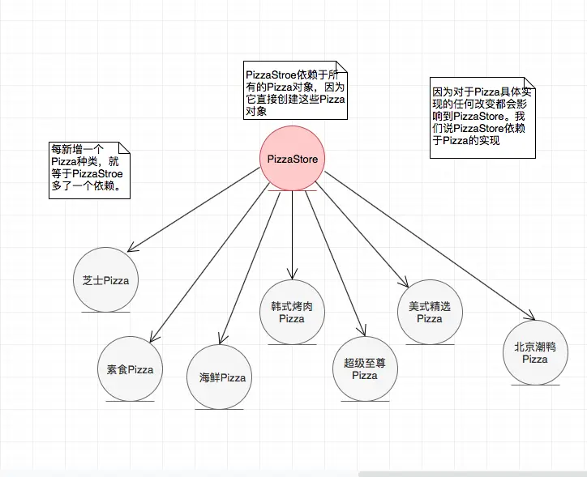

④ 接口分离原则¶
ISP 原则建议设计者应该为每个主要的客户类型都设计一个特定的接口。只有那些与特定客户类型相关的操作才应该出现在该客户的接口说明中。
- 一个肥接口(包含众多接口的总接口)应该分解成多个专门接口
- 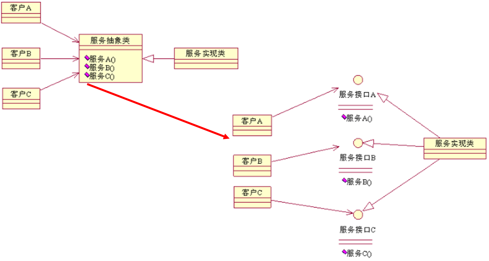
13.2.2 构建基设计指导方针¶
- 构件：
- 对那些已经被确定为体系结构模型一部分的构件应该建立命名约定：
- 使用全名，例如：Job management system, Read print job data；
- 采用与日常描述一致的词，例如：Detector, Phone；
- 混合大小写，例如：checkPriority, totalJobCost；
- 采用动/名或名/动形式来描述方法,例如：computePageCost()；
- 方法名不要与类名重复；
- 意义明确，例如不要出现：a, a()；
- 接口：
- 记号中的接口用棒棒糖式记号；
- 接口都放在构件框的左边 ；
- 即使其他接口也适用，只表现出那些与构件相关的接口；
- 结果：系统易于查看。
- 依赖与继承：
- 依赖关系自左向右，继承关系自底(导出类)向上(基类)；
- 依赖通过接口来表示，而不是采用“构件到构件”的方法；
- 结果：系统更易于维护。
13.2.3 内聚性¶
内聚性 : 描述为构件的专一性。
内聚性意味着构件或者类只封装那些相互关联密切，以及与构件或类自身有密切关系的属性和操作。
- 功能内聚：
- 主要通过操作来体现，当一个模块中的各个部分只完成某一组特定操作并返回结果时，就称此模块是功能内聚的。(最好的内聚)
- 顺序内聚
- 模块中各个处理元素密切相关，必须顺序执行，前一功能元素的输出就是下一功能元素的输入。
- 通信内聚
- 访问相同数据的所有操作被定义在同一个类中
- 时间内聚
- 模块各个功能的执行与时间有关，通常要求所有功能必须在同一时间段内执行。
- 例如初始化模块和终止模块。
- 逻辑内聚
- 模块把几种相关的功能组合在一起，每次被调用时，由传送给模块的判定参数来确定该模块应执行哪一种功能
- 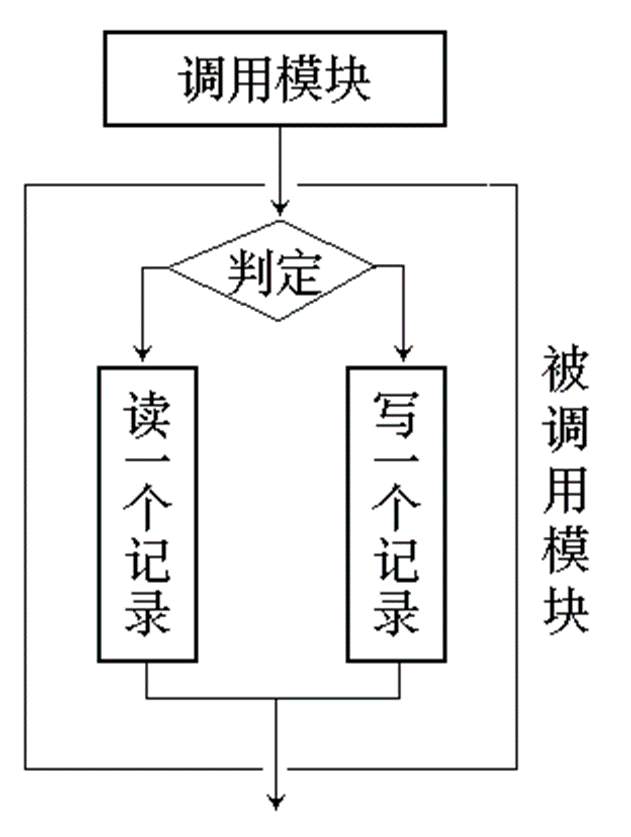
- 巧合内聚(实用内聚)
- 逻辑上不能纳入其他内聚类型的相关实用程序放在一起，形成巧合内聚(实用内聚)
例¶
请指出以下内聚度类型
- 一组语句在程序的多处出现，为了节省内存空间把这些语句放在一个模块中，该模块的内聚度是 巧合内聚 的。
- 模块中所有成分引用共同的数据，该模块的内聚度是 通信内聚 的。
- 模块内的某成分的输出是另一些成分的输入，该模块的内聚度是 顺序内聚 的。
- 模块中所有成分结合起来完成一项任务，该模块的内聚度是 功能内聚 的。
13.2.4 耦合性¶
- 耦合性 : 构件之间彼此联系紧密程度的一种定性度量。
- 随着构件相互依赖的增加，构件的耦合程度也会增加。
- 面向对象：类间联系的紧密程度。
- 目标：低耦合。
- 内容耦合:
- 包括下列情形： (1) 一个模块直接访问另一个模块的内部数据； (2) 一个模块不通过正常入口(调用或顺序执行)转到另一模块内部； (3) 一个模块有多个入口。
- 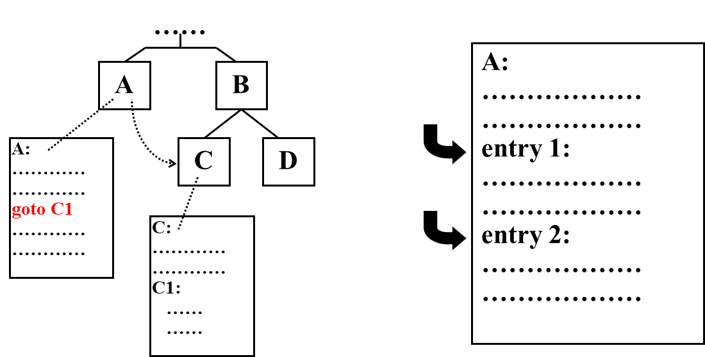
- 公共耦合(共用耦合)
- 若一组模块都访问同一个公共数据环境，则它们之间的耦合就称为共用(公共)耦合。公共的数据环境可以是全局数据结构、共享的通信区、内存的公共覆盖区等。
- 缺点：进行变更时，会导致不可控制的错误蔓延和不可预见的副作用
- 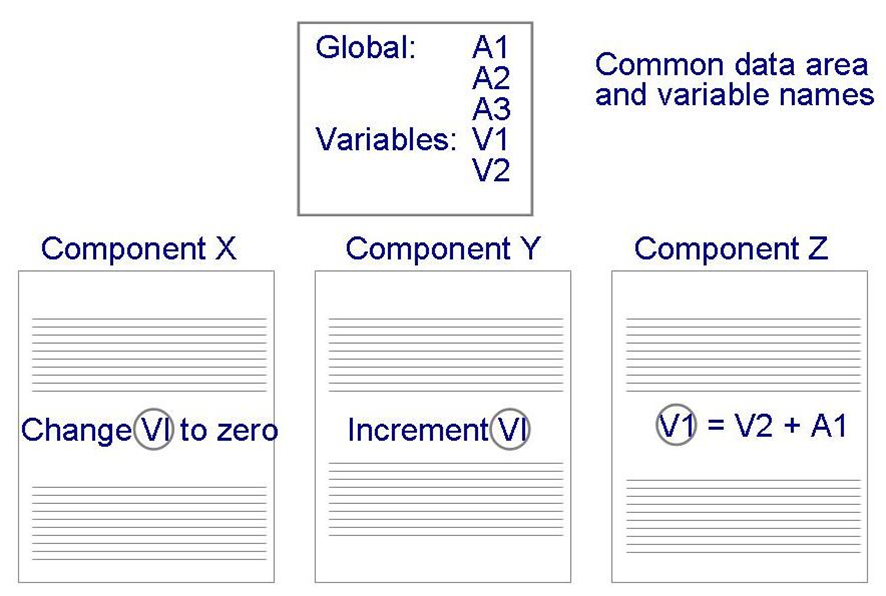
- 外部耦合
- 当一个构件和基础设施构件(例如，操作系统功能、数据库容量、无线通信功能等)进行通信和协作时发生的耦合。尽管这种类型的耦合是必要的，但是在一个系统中应该尽量将这种耦合限制在少量的构件或者类范围内。
- 控制耦合
- 如果一个模块通过传送开关、标志、名字等控制信息，控制选择另一模块的功能，就是控制耦合。
- 缺点：模块 B 中的一个不相关变更，可能会导致模块 A 所传递的控制标记的意义也必须发生变更。
- 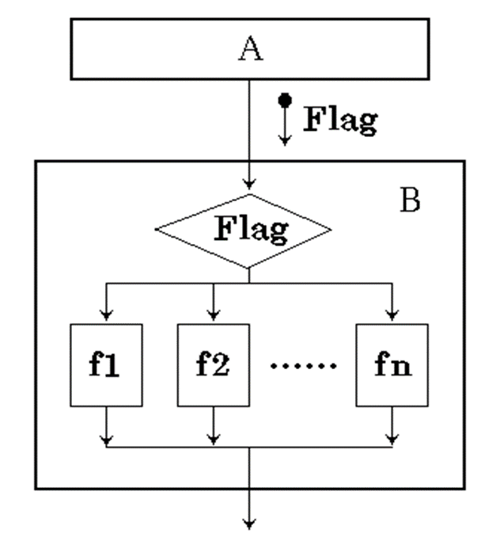
- 标记耦合(特征耦合)
- 一个数据结构被作为参数传递。
- 并且被调用模块只使用了部分而非全部数据。
- 问题：传送了不必要的数据：
- 不受限制的数据访问可能成就计算机犯罪。
- 数据耦合
- 如果一个模块访问另一个模块时，彼此之间是通过简单数据参数 (不是控制参数、公共数据结构或外部变量)来交换信息的，则称这种耦合为数据耦合。
- 推荐使用的方式
- 其他耦合
- 例程调用耦合： 一个操作调用另一个操作。很常见，增加了系统的连通性。
- 类型使用耦合： 构件 A 中使用了在构件 B 中定义的一个数据类型。如果类型定义发生了改变，每个使用该定义的构件也必须随之改变。
- 包含或者导入耦合： 构件 A 引入或包含一个构件 B 的包或者内容时，例如：include。
13.2.5 模块关联的评价指标¶
- 扇出 ：一个模块直接控制的模块数目：
- 扇出过大意味着模块过分复杂，需要控制和协调过多的下级模块。
- 理想的平均扇出为 3-4(上限为 5-9)。
- 扇入 ：有多少个上级模块直接调用它。
- 扇入越大意味着共享该模块的数目越多。
- 设计得好的软件结构通常顶层扇出高，中层扇出少，底层高扇入。
13.3 实施构件级设计¶
- 步骤 1：标识出所有与问题域对应的设计类：
- 使用需求模型和架构模型，每个分析类和体系结构构件都要细化。
- 步骤 2：确定所有与基础设施对应的设计类：
- 在分析模型中并没有描述这些类，并且在体系结构设计中也经常忽略这些类。这种类型的类和构件包括 GUI (图形用户界面)构件、操作系统构件以及对象和数据管理构件等。
- 步骤 3：细化所有不能作为复用构件的设计类：
- a) 在类或构件的协作时说明消息的细节；
- b) 为每一个构件确定适当的接口；
- c) 细化属性，定义相应的数据类型和数据结构；
- 如果某一属性在多个设计类中重复出现，并且其自身具有比较复杂的结构，那么最好为这个属性创建一个单独的类。
- d) 详细描述每个操作中的处理流：
- 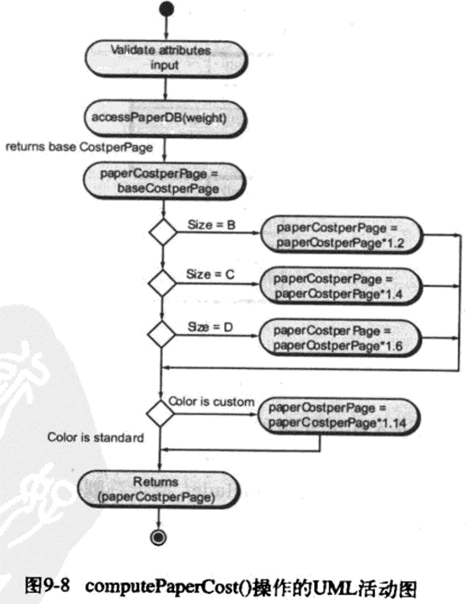
- 每个构件都需要应用逐步求精概念通过很多次迭代进行细化。
- 步骤 4：说明持久数据源(数据库和文件)并确定管理数据源所需要的类：
- 数据库和文件通常都凌驾于单独的构件设计描述之上，随着设计细化过程的深入，需要提供持久数据源的结构和组织的额外细节。
- 步骤 5：开发并且细化类或构件的行为表示 (可用状态图)：
- 描述影响对象的事件，以及随着时间流逝和对象所处的状态。
- 步骤 6：细化部署图以提供额外的实现细节： 包括指定的硬件、操作系统环境、构件包的位置。
- 步骤 7：考虑每一个构件级设计表示，并且时刻考虑其他可选方案： 设计是一个迭代过程。创建的第一个构件级模型总没有迭代 N 次之后得到的模型那么全面、一致或精确。在进行设计工作时，重构是十分必要的。
13.4 WebApp 的构件级设计¶
WebApp 构件是： (1)为最终用户处理内容，或提供计算或数据处理； (2)提供最终用户所需的功能。
因此 WebApp 构件级设计通常包括内容设计元素和功能设计元素。
13.5 设计传统构件¶
- 复杂性度量表明，结构化的构造降低了程序复杂性，从而增加了可读性、可测试性和可维护性。
- 使用有限数量的逻辑结构也符合心理学家所谓的人类“成块”的理解过程：
- 要理解这一过程，可以考虑阅读的方式。读者不是阅读单个字母，而是辨认由单词或短语构成的模式或是字母块。
- 结构化的构造就是一些逻辑块，读者可以用它来辨认模块的过程元素，而不必逐行阅读设计或是代码。
- 图形化设计表示: 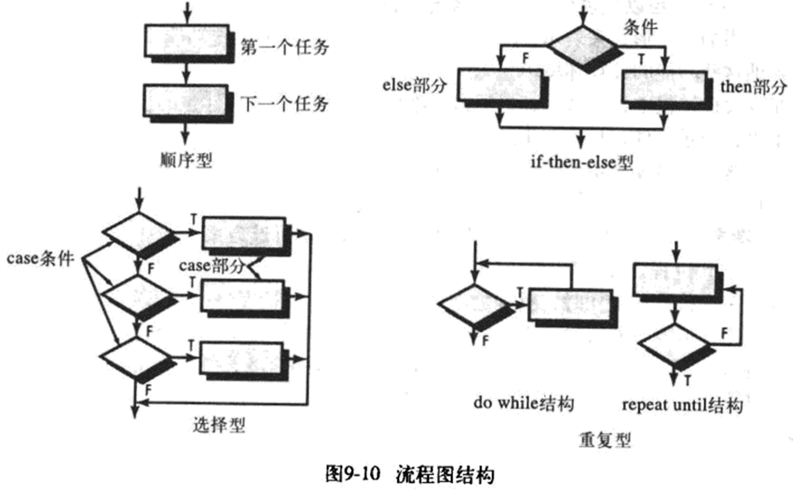
- 表格式设计(判定表,决策表)
- 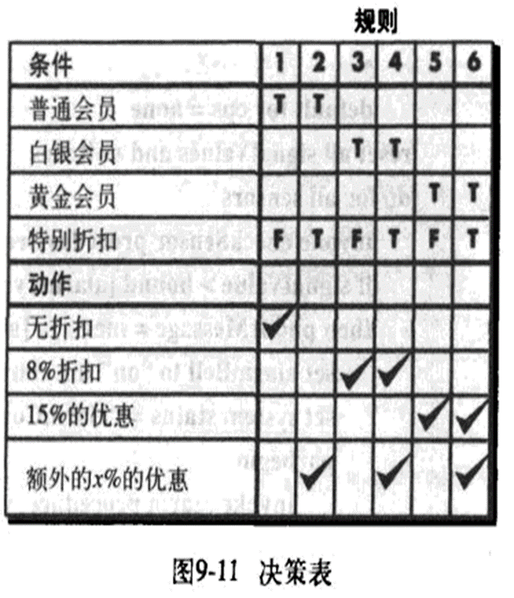
- 开发决策表的步骤：
- 列出特定过程(或构件)相关的所有动作。
- 列出执行该过程时的所有条件(或所做的决策)。
- 将特定的条件组合与特定的动作相关联，消除不可能的条件组合；或者找出所有可能的条件排列。
- 定义规则，指出一组条件应对应哪个或哪些动作。
13.6 基于构件的开发¶
- 基于构件的软件工程 (Component-Based Software Engineering，CBSE)是一种强调使用可复用的软件构件来设计与构造计算机系统的过程：
- 把重点从编码转移到组装软件系统；
- 考虑的焦点是“集成”，而不再是“实现”。
- 构成可复用设计基础的关键问题：
- 标准数据。应该仔细研究应用领域，并定义标准的全局数据结构(例如，文件结构或完整的数据库)。然后，所有的设计构件会被赋予使用这些标准数据结构的特性。
- 标准接口协议。应建立 3 层接口协议：模块内部接口的基本属性，外部技术接口设计和人机接口设计。
- 程序模板。选取一种体系结构风格，可以作为新软件体系结构设计的模板。
第 17 章 软件测试策略¶
软件测试策略 包括
- 测试计划
- 测试用例设计
- 测试执行
- 测试结果数据的收集与评估
17.1 软件测试的策略性方法¶
-
测试策略必须提供
- 低级测试，来验证一小段代码是否正确实现
- 高级测试，确认系统的主要功能是否满足用户需求
-
测试策略为
- 专业人员提供工作指南
- 管理者提供一系列里程碑
-
测试进度必须是可度量的，并且使问题尽可能早的暴露
软件开发人员对负责程序各个单元的测试
在软件体系结构完成后，独立测试组 ITG 开始介入
备注 此处省略了很多内容
17.2 策略问题¶
成功的测试策略¶
- 早在开始测试之前，就要以量化的方式规定产品需求
- 明确地陈述测试目标
- 了解软件的用户并为每类用户建立用户描述
- 制定强调“快速周期测试”的测试计划
-
建立能够测试自身的“健壮”软件
-
测试之前，利用有效的正式技术评审作为过滤器
- 实施正式技术评审以评估测试策略和测试用例本身
- 为测试过程建立一种持续的改进方法
软件测试策略——宏观¶
这一节未在课件中找到
螺旋模型:¶
软件过程: 沿着螺旋向内，分别为系统工程，需求，设计，编码，每走一圈都会降低软件的抽象层次
测试策略: 单元测试其实与螺旋的中心，往外是集成测试，确认测试，系统测试
- 单元测试:
- 集成测试: 处理并验证与程序构建相关的问题
- 确认测试: 为软件满足所有的功能，行为和性能需求提供最终保证
测试完成的标准¶
测试永远也完不成~
傻了吧
17.3 传统软件的测试策略¶
17.3.1 单元测试¶
-
单元测试 : 对软件中的最小可测试单元进行检查和验证
- 单元 : C 中是函数, Java 中是类, 图形化软件中是一个窗口/菜单
-
单元测试主要对模块的五个基本特性进行评价:
- 模块接口: 保证被测程序单元的信息能够正常的流入和流出
- 局部数据结构: 确保临时存储的数据在算法的整个执行过程中能维持其完整性
- 边界条件: 达到边界值还能正确执行
- 独立路径: 确保模块的所有语句至少执行一次
- 错误处理路径: 预见各种出错条件
-
一些???
- 最基本的任务: 选择测试的执行路径
- 最重要的单元测试任务之一: 边界测试
- 模块结构测试是基础
-
单元测试特点
- 侧重于软件设计的最小单元的验证工作
- 侧重于构件中的内部处理逻辑和数据结构
- 进行的越早越好
单元测试环境¶
测试用例 : 是为某个特殊目标而编制的一组测试输入、执行条件以及预期结果，以便测试某个程序路径是否满足某个特定需求。
构件 并不是独立程序，所以必须为每个测试单元开发驱动程序和桩程序:
- 驱动程序 : 是“主程序”，接收测试用例数据，将这些数据传递给待测试构件
- 桩程序 : 替换那些从属于待测试构件的构件
- 驱动程序调用被测模块, 桩程序被被测模块调用

- 驱动模块和桩模块都是额外的开销，虽然在单元测试中必须编写，但并不需要作为最终的产品提供给用户。

何时进行单元测试？¶
- 通常在编码完成后进行
- 前期应提前准备: 单元测试计划，编写测试用例，单元测试代码 ↑ 一般由白盒测试工程师，开发人员完成
- 依据: 源程序/项目的《详细设计》文档
单元测试一般步骤¶
- 编译运行，进行语法正确性验证
- 静态测试，检查代码是否符合规范
- 动态测试，深入检查代码的正确性、容错性和边界值
17.3.2 集成测试¶
-
集成测试 : 单元测试的下一个阶段，指将通过测试的单元模块组装成系统或子系统，再进行测试。
-
内容
- 单元组装后的功能正确性
- 单元之间的接口
- 集成后的系统性能
-
分类:
- 一步到位的集成
- 增量集成
- 自顶向下测试
- 自底向上测试
- 组合方法(三明治): 用自顶向下方法测试程序结构较高层，用自底向上方法测试其从属层
-
增量集成测试特点
- 增量式测试方式不需要所有单元就绪，使单元测试与集成测试的重叠并行是可行的，测试时，若发现问题，一般可定位于新加入的单元 (更容易进行问题的定位)。
- 适合于规模较大的应用。
- 增量式测试比非增量式测试具有一定的优越性。
-
关键模块
- 当执行集成测试时，测试人员应能标识关键模块。关键模块具有下述一个或多个特征:
- 涉及几个软件需求；
- 含有高层控制(位于程序结构的高层)；
- 复杂的或易错的；
- 有明确的性能需求。
- 关键模块应尽可能早测试。
- 回归测试应侧重于关键模块的功能。
- 当执行集成测试时，测试人员应能标识关键模块。关键模块具有下述一个或多个特征:
① 一步到位的集成¶
-
所有的构件都连接在一起，全部程序作为一个整体进行测试
-
缺点:
- 需要所有单元就绪，不利于开发进度
- 问题定位较为困难
-
适合规模较小的应用

增量式测试¶
特点:
- 集成是逐步实现的
- 逐次将未曾集成测试的模块和已经集成测试的模块结合成程序包，再将这些模块集成为较大的系统
- 不需要所有单元就绪
- 适合规模较大的应用
- 相比于非增量测试有一定优越性
② 自顶向下法¶
- 自顶向下法 : 首先集成主控模块，然后依照控制层次向下进行集成
-
策略有: 广度优先，深度优先
-
特点:
- 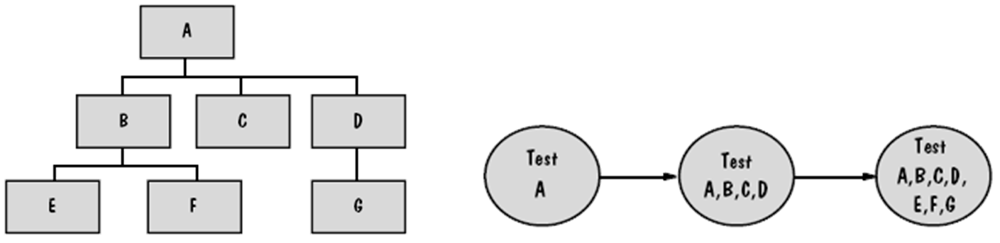
- 可能要编写很多桩程序
- 主控模块错误可能发现的比较早
-
主控模块用作测试驱动模块，一次用一个实际模块替换一个桩模块

③ 自底向上法¶
-
自底向上法 : 从程序模块结构的最底层的模块开始组装和测试
-
特点:
- 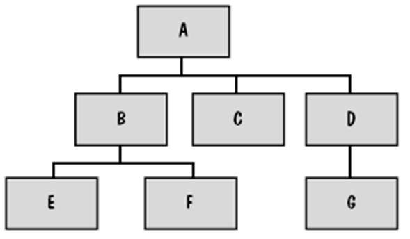 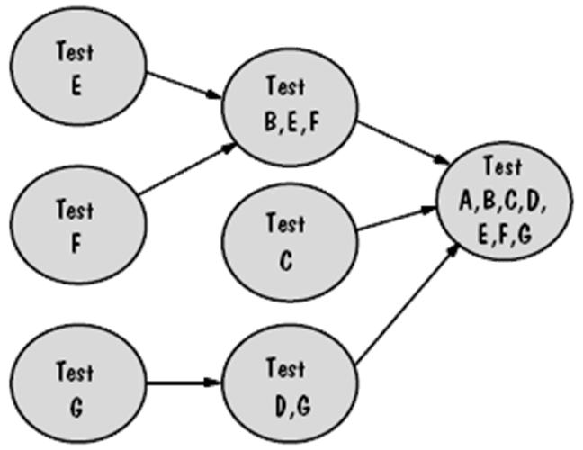
- 不需要桩模块
- 要写驱动模块
- 主控模块错误发现得比较迟
-
如果最上两层是自顶向下集成的，可以减少驱动模块的数量(组合方法)

④ 组合方法(三明治)¶

集成测试方法的比较¶
- 自顶向下与自底向上增量式测试的比较:
- 自顶向下增量式测试:
- 主要优点: 可以自然地做到逐步求精，一开始就能让测试者看到系统的框架。能较早发现高层模块的错误；
- 主要缺点: 需要提供桩模块，并且在输入/输出模块接入系统以前，在桩模块中表示测试数据有一定困难。
- 自底向上增量式测试:
- 主要优点: 容易直接使用测试数据，易于设计测试用例；
- 主要缺点: 直到最后一个模块被加进去之后才能看到整个程序(系统)的框架。上层模块错误发现得晚，影响范围大；
- 自顶向下增量式测试:
⑤ 回归测试¶
-
回归测试 : 在程序有修改的情况下，保证原有功能正常的一种测试策略
- 重新执行已进行测试的某个子集，以确保变更没有传播不期望的副作用
- 每次对软件做重要变更时(新构件的集成, 删除, 修改), 要进行回归测试
-
步骤:
- 先对修改部分进行测试；A
- 然后隔离修改部分，测试程序的未修改部分；B
- 最后再把它们集成起来进行测试；A+B
- 回归测试的三种测试用例
- 代表测试样本: 能够测试软件所有功能；
- 必要测试样本: 侧重于被改变的软件构件功能；
- 额外测试样本: 侧重于可能会受变更影响的功能；
⑥ 冒烟测试¶
常用的集成测试方法
冒烟测试是一种基础测试，用于确认新版本的软件是否可以进行基本的功能测试或者是否能够正常启动 1。冒烟测试这个名称的来历，最初是从电路板测试得来的。因为当电路板做好以后，首先会加电测试，如果板子没有冒烟再进行其它测试，否则就必须重新来过 2。而在软件研发中，冒烟测试其实是微软首先提出来的一个概念，和微软一直提倡的每日 build（构建版本）有很密切的联系 2。具体说，冒烟测试就是在每日 build（构建版本）建立后，对系统的基本功能进行简单的测试 2。这种测试强调程序的主要功能进行的验证，而不会对具体功能进行更深入的测试 3。
-
冒烟测试 是时间关键项目的决定性机制
-
活动:
- 将已经转化成代码的软件构件集成到构建中
- 设计一系列测试以暴露影响构建正确完成其功能的错误
- 每天将构建与其他构建以及整个软件产品集成起来进行冒烟测试
-
好处
- 降低了集成风险: 每天测试, 较早的发现不相容和业务阻塞错误
- 提高最终产品的质量: 冒烟测试面向构建(集成), 可以发现功能性错误, 体系结构和构件级设计错误
- 简化错误的诊断和修正: 新发现的错误可能与软件增量有关
- 易于评估进展情况
集成测试工作产品¶
SafeHome 安全系统的集成测试可以划分为如下:
- 用户交互 : 命令输入与输出、显示表示、出错处理与表示；
- 传感器处理 : 获取传感器输出、确定传感器的状态、作为状态的结果所需要的动作；
- 通信功能 : 与中央监测站通信的能力；
- 警报处理 : 测试遇到警报发生时的软件动作。
测试阶段的准则¶
- 接口完整性。当每个模块 (或簇)引入到程序结构中时，要对其内部和外部接口进行测试；
- 功能有效性。执行旨在发现功能错误的测试；
- 信息内容。执行旨在发现与局部或全局数据结构相关错误的测试；
- 性能。执行旨在验证软件设计期间建立的性能边界的测试；
17.4 面向对象软件的测试策略¶
17.4.1 面向对象环境中的单元测试¶
不再孤立地对单个操作进行测试 (传统的单元测试观点)，而是将操作作为类的一部分
- 在子类中测试父类的操作(因为子类会有差别)
面向对象软件的==类测试== 等同于传统软件的单元测试
17.4.2 面向对象环境中的集成测试¶
面向对象软件没有明显的层次控制结构, 自顶向下和自底向上集成策略已无太大意义
另外，由于类的成分间直接或间接的相互作用，每次将一个操作集成到类中 (传统的增量集成方法)往往是不可能的
两种策略:
-
基于线程的测试
- 对响应系统的一个输入或事件所需的一组类进行集成。
- 每个线程单独地集成和测试。
- 应用回归测试以确保没有产生副作用
-
基于使用的测试
- 通过测试很少使用服务类的那些类(称为独立类)开始构造系统
- 独立类测试完成后，利用独立类测试下一层次的类(依赖类)
- 继续依赖类的测试直到完成整个系统
17.5 确认测试¶
始于集成测试的结束(测试完成单个构建, 软件组装成完整的软件)
测试集中于用户可见的动作和用户可识别的系统输出
17.5.1 确认测试准则¶
- 软件确认 是通过一系列表明与软件需求相符合的测试而获得的:
- 测试计划列出将要执行的测试类；
- 测试规程定义了特定的测试用例；
- 设计的特定测试用例用于确保满足所有功能需求、所有行为特征，所有内容都准确无误且正确显示，达到所有性能需求；
- 文档是正确的、可用的，且满足其他需求 (如: 可移植性、兼容性、错误恢复和可维护性)。
- 执行每个确认测试用例之后，存在下面两种可能条件之一: (1) 功能或性能特征符合需求规格说明，可以接受； (2) 发现了与规格说明的偏差，创建缺陷列表: 在项目的这个阶段发现的错误或偏差很难在预定的交付期之前得到改正。此时往往必须与客户进行协商，确定解决缺陷的方法。
17.5.2 α 测试&β 测试¶
- 验收测试 是由最终用户而不是软件工程师进行的，让每个用户都进行正式的验收测试是不切实际的:
- α 测试 是由有代表性的最终用户在开发者的场所进行。软件在自然的环境下使用，开发者站在用户的后面观看，并记录错误和使用问题。α 测试在受控的环境下进行。
- β 测试 在一个或多个最终用户场所进行。与 α 测试不同，开发者通常不在场，因此， β 测试是在不为开发者控制的环境下软件的“现场”应用。最终用户记录测试过程中遇见的所有问题，并定期地报告给开发者。
- β 测试的一种变体称为==客户验收测试== ，软件开发和 QA 人员也应该参加，有时是按照合同交付给客户时进行的。
- 确认测试

17.6 系统测试¶
- 恢复测试
- 强制让系统发生故障, 验证其能适当恢复
- 恢复是自动的, 则对重新初始化、检查点机制、数据恢复和重新启动都要进行正确性评估
- 恢复是人工的, 计算平均恢复时间 (Mean-Time-To-Repair，MTTR)
- 强制让系统发生故障, 验证其能适当恢复
- 安全测试
- 验证系统保护机制能否保护系统不受非法入侵
- 测试扮演供给系统角色, 进行攻击
- 压力测试
- 压力测试目的是在性能可以接受的前提下，测试系统可以支持的最大负载。
- 压力测试要求以非正常的数量、频率或容量的方式执行系统。
- 性能测试
- 性能测试是在不同负载下(负载一定)时，通过一些系统参数(如反应时间等)验证系统性能指标。
- 通过监测系统，测试人员可以发现导致效率降低和系统故障的情形。
- 部署测试
- 也将部署测试称为配置测试，是在软件将要运行的每一种环境中测试软件
17.7 调试技巧¶
调试是使错误消除的过程，发生在测试之后
调试方法¶
- 蛮干法
- 回溯法
- 原因排除法
第 18 章 测试传统的应用软件¶
18.1 软件测试基础¶
-
测试的目标: 发现错误
- 测试相当于从右边容器中拿出球:
- 白球: 导致正确输出
- 黑球: 导致错误输出
- 测试的==有效性== : 在 n 次尝试中，拿到多少黑球？
- 越多越好
- 可测试性 : 一次尝试中拿到黑球的可能性
- 测试相当于从右边容器中拿出球:
-
软件可测试: 计算机程序能够被测试的容易程度
- 可操作性: 妨碍测试执行的错误
- 可观察性: 输入产生清晰的输出
- 可控制性: 通过输入的某些组合产生所有可能的输出
- 可分解性: 软件由能够进行单独测试的独立模块组成
- 简单性
- 功能简单性 (例如，一个模块完成单一或者简单的功能)
- 结构简单性 (例如，将体系结构模块化以限制错误的传播)
- 代码简单性 (例如，采用编码标准以使代码易于审查和维护
- 稳定性
- 易理解性: 体系结构设计以及内部构件、外部构件和共享构件之间的依赖关系能被较好地理解
- 影响可测试性的因素
- 软件开发文档不完整、不清晰、不准确；
- 隐藏故障的代码难以测试；
- 软件失效产生过程: 输入引起故障执行 -> 故障执行导致数据状态的错误 -> 数据状态传播到输出状态。
- 软件可测性设计包括:
- 简化设计使软件容易测试；
- 软件具有完整的编码注释和正确的技术文档；
- 尽早确定用户接口: 保证可分解、可控制和稳定；
- 好的测试
- 高的有效性——发现错误的可能性较高
- 不冗余——每个测试都有不同的目标
- 最佳性——最佳品种
- 使用最有可能发现所有错误的测试
- 适当的复杂性——不太简单也不太复杂 (分解大的测试)
- 应该独立执行每个测试，防止错误被“掩盖”
18.2 测试的分类¶
-
软件测试技术分类
- 黑盒测试 / 白盒测试: 从要不要看代码部分来区分
- 动态测试 / 静态测试: 从要不要运行软件来区分
-
黑盒与白盒
- 黑盒测试: 在软件接口处执行测试——检查系统的功能方面，而不考虑软件的内部结构(外部观察)
- 白盒测试: 基于过程细节的封闭检查，贯穿软件的逻辑路径和构件间的协作(内部观察)

18.3 白盒测试¶
一种测试用例设计方法，一般在测试的早期进行
利用构件级设计的一部分所描述的控制结构来生成测试用例
对==程序模块== 进行如下检查
- 对模块的所有独立的执行路径至少测试一次；
- 对所有的逻辑判定，取“真”与取“假”的两种情况都至少测试一次；
- 在上下边界和可操作的范围内执行所有的循环；
- 测试内部数据结构的有效性。

18.4 基本路径测试 ※¶
一种白盒测试技术
在程序控制流图的基础上，分析控制构造的环路复杂性，导出基本可执行路径集合。
18.4.1 流图¶
流图 (或程序图 / 控制流图):
- 一种简单的控制流表示方法；
- 圆: 流图结点，表示一个或多个过程语句。
- 处理框序列和一个菱形判定框可映射为单个结点(相对于流程图)
- 合并顺序执行的语句, 分离判定语句的不同条件
- 箭头: 边或连接，表示控制流，一条边必须终于一个节点，即使该结点并不代表任何过程语句。
- 由边和节点限定的区间称为域，计算区域时不要忘记区域外的部分，图的外部作为一个域。

18.4.2 独立程序路径¶
独立程序路径 是任何贯穿程序的，至少引入一组新的处理语句或一个新条件的执行路径。(不能由其它独立路径组合而成)

在图示的控制流图中，一组独立的路径是:
- path1: 1 - 11
- path2: 1 - 2 - 3 - 4 - 5 - 10 - 1 - 11
- path3: 1 - 2 - 3 - 6 - 8 - 9 - 10 - 1 - 11
- path4: 1 - 2 - 3 - 6 - 7 - 9 - 10 - 1 - 11
- 路径 1 - 2 - 3 - 4 - 5 - 10 - 1 - 2 - 3 - 6 - 8 - 9 - 10 - 1 – 11 不是独立路径。
- 路径 1、2、3 和 4 构成流图的基本集合。若设计测试强迫执行这些路径 (基本集合)，则可以保证程序中的每条语句至少执行一次，且每个条件的取真和取假都被执行。 基本集合不是唯一的。
18.4.3 环路复杂性¶
环形复杂度的计算:
-
\(流图的区域数=环路复杂度 V(G) = \textcolor{orange}{独立路径数}\)
-
\(V(G)=E-N+2\)
- E 是流图的边数，N 是流图的节点数
-
\(V(G)=P+1\)
- P 为包含在流图 G 中的判定节点数
- ↑V(G)的值提供了组成基本集合的独立路径的上界，并由此得出覆盖所有程序语句所需设计和运行的测试数量的上界
导出测试用例的步骤¶
- 画出流图
- 确定环复杂性，确定线性独立路径的数量
- 确定独立路径的基本集合
- 准备测试用例集，强制执行基本集合中的每条路径
例题¶
- 程序结构:

-
对应流图:


-
独立路径:
- 1 - 4 - 5 - 7
- 1 - 4 - 5 - 6 - 7
- 1 - 4 - 6 - 7
- 1 - 2 - 4 - 6 - 7
- 1 - 2 - 3 - 4 - 6 - 7
18.5 控制结构测试¶
略
↑ 学长说的, 但是咱们上课有讲 补一下
控制结构测试 包括:
- 条件测试:
- 基于模块中包含的逻辑条件，设计测试用例
- 使得程序中每个判断的每个条件的可能取值至少执行一次
- 数据流测试:
- 根据变量的定义和使用位置来选择测试路径
- 循环测试:
- 侧重于循环的有效性
18.5.1 条件测试¶
保证每个条件都被取到
- 对于第一个判断:
- A ＞ 1 取真为 T1，取假为 F1
- B ＝ 0 取真为 T2，取假为 F2
- 对于第二个判断:
- A ＝ 2 取真为 T3，取假为 F3
- X ＞ 1 取真为 T4，取假为 F4
18.5.2 语句测试¶
保证每条语句至少执行一次。
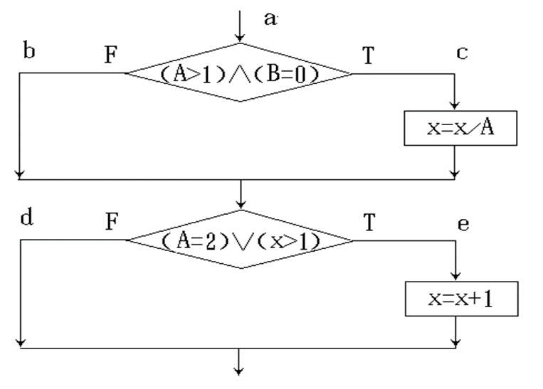
如果走右边的路径可以保证每条语句都执行到
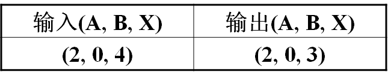
18.5.3 分支测试¶
保证每个分支至少执行一次
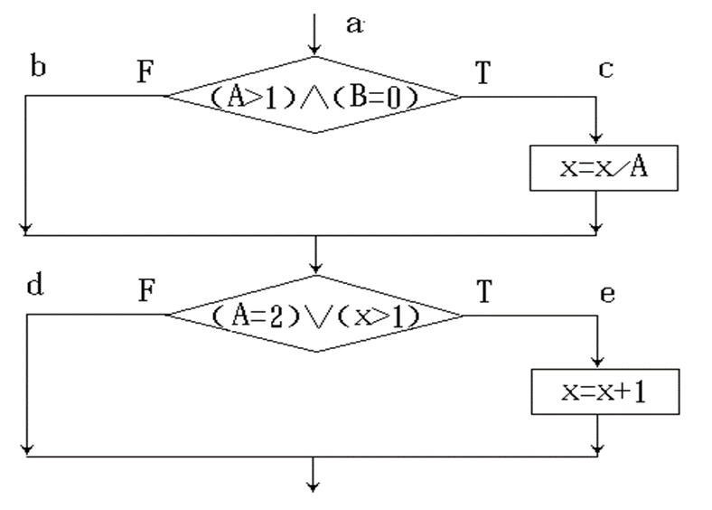
18.5.4 数据流测试¶
数据定义点: 数据被赋值的点。 数据使用点: 数据被使用的点 数据使用还可以被进一步分为计算性使用(C-USE)和判定性使用(P-USE)；
使用定义关联
- x 的使用定义关联 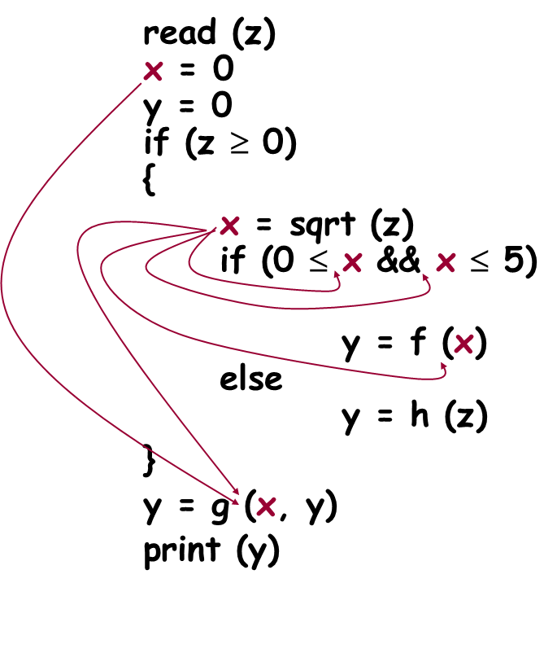
- y 的使用定义关联 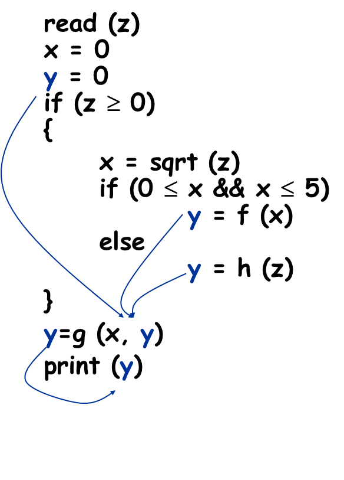
18.6 黑盒测试¶
- 什么是==黑盒测试==
- 把测试对象看做一个黑盒子: 测试人员完全不考虑程序内部的逻辑结构和内部特性，只依据程序的需求规格说明书，检查程序的功能是否符合它的功能说明。
- 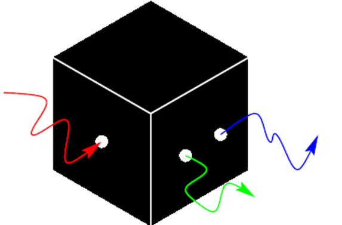
- 在测试后期进行，作为发现其他类型错误的辅助方法
- 又叫做==功能测试== 、行为测试
18.6.1 等价类划分¶
- 等价划分 : 将程序输入划分为若干个数据类(等价类)， 以生成测试用例
- 等价类
- 等价类是指某个输入域的子集合: 在该子集中，各个输入数据对于揭露程序错误都是等效的
- 等价类的划分有两种不同的情况:
- 有效等价类: 合理的，有意义的输入数据集合。
- 无效等价类: 不合理的，无意义的输入数据集合。
- 在设计测试用例时，要同时考虑有效等价类和无效等价类的设计。
等价类划分原则¶
-
等价类划分原则 1: 输入条件规定了取值范围
- 可以确立一个有效等价类和两个无效等价类
- 例: 在程序的规格说明中，对输入条件有一句话 “…… 项数可以从 1 到 999 ……” 则: 有效等价类是“1≤ 项数 ≤999” 两个无效等价类是“项数＜ 1”或“项数＞ 999”。数轴上表示
-
等价类划分原则 2: 输入条件规定了输入值的集合
- 可确立一个有效等价类和一个无效等价类。(在集合内 or 外)
- 例: 在 Pascal 语言中对变量标识符规定为“以字母打头的……串”。 则: 所有以字母打头的构成有效等价类，而不在此集合内(不以字母打头)的归入无效等价类。
-
等价类划分原则 3: 如果规定了输入数据的一组值，而且程序要对每个输入值分别进行处理:
- 针对这组值确立多个有效等价类；
- 针对这组值确立一个无效等价类，它是所有不允许的输入值的集合。
- 例: 假设 IT 公司的岗位分为: 软件开发工程师、软件测试工程师、软件质量保证工程师； 则: 可以确定 3 个有效等价类为软件开发工程师、软件测试工程师、软件质量保证工程师；1 个无效等价类，它是所有不符合以上岗位的人员的输入值的集合。
-
等价类划分原则 4: 如果规定了输入数据必须遵守的规则
- 可以确立一个有效等价类(符合规则)和若干个无效等价类(从不同角度违反规则)
- 例: Pascal 语言规定 “一个语句必须以分号‘;’结束” 则: 可以确定一个有效等价类 “以‘;’结束”，若干个无效等价类 “以‘:’结束”、“以‘,’结束”、“以‘ ’结束”、“以 LF 结束”等。
测试用例选择¶
-
从划分出的等价类中按以下原则选择测试用例:
- (1) 为每一个等价类规定一个唯一编号；
- (2) 设计一个新的测试用例，使其尽可能多地覆盖尚未被覆盖的有效等价类，重复这一步，直到所有的有效等价类都被覆盖为止；
- (3) 设计一个新的测试用例，使其仅覆盖一个尚未被覆盖的无效等价类，重复这一步，直到所有的无效等价类都被覆盖为止。
-
例: 在某 PASCAL 语言版本中规定: “标识符是由字母开头，后跟字母或数字的任意组合构成。有效字符数为 8 个，最大字符数为 80 个。不能是保留字” 。并且规定: “标识符必须先说明，再使用。” 另外， “在同一说明语句中，标识符至少必须有一个。
- 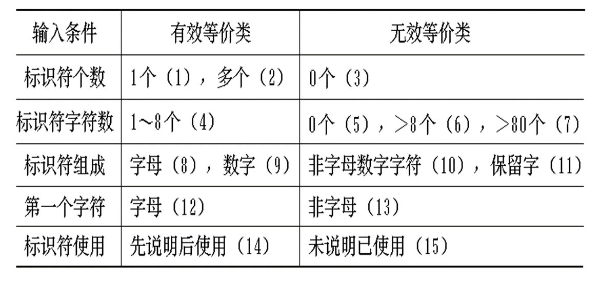
-
下面选取了 9 个测试用例，它们覆盖了所有的等价类。
① VAR x，T1234567: REAL； BEGIN x := 3.414； T1234567 := 2.732； (1), (2), (4), (8), (9), (12), (14) ② VAR : REAL； (3) //0个标识符 ③ VAR x，: REAL; (5) //标识符字符数为0个 ④ VAR T12345678: REAL； (6) //标识符字符数大于8个 ⑤ VAR T12345......: REAL； (7) //多于80个字符 ⑥ VAR T$: CHAR； (10) //非字母数字字符 ⑦ VAR GOTO: INTEGER； (11) //保留字 ⑧ VAR 2T: REAL； (13) //第一个字符非字母 ⑨ BEGIN PAR := SIN (3.14 * 0.8) / 6； VAR PAR: REAL； (15) //未说明已使用
18.6.2 边界值分析¶
- 边界值分析 ：多数错误出现在输入域的边界处，而不是在 “中间”；
- 指导原则：
- 若输入条件指定为以 a 和 b 为边界的范围，则测试用例应该包括 a 和 b，略大于 a 和略小于 b ；
- 若输入条件为一组值，则测试用例应当执行其中的最大值和最小值；
- 以上指导原则也适用于输出条件，确保输出也符合要求；
- 若内部程序数据结构有预定义的边界值，要在其边界处测试数据结构 (例如，某张表有 100 项的定义限制)；
- 例 1
- 在做三角形计算时，要输入三角形的三个边长：A、B 和 C。 这三个数值应当满足： A ＞ 0、B ＞ 0、C ＞ 0、 A ＋ B ＞ C、A ＋ C ＞ B、B ＋ C ＞ A。如果把六个不等式中的任何一个大于号“＞”错写成 “≥”，那就不能构成三角形。
- 应当选取正好等于，刚刚大于，或刚刚小于边界的值做为测试数据。
- 例 2
- 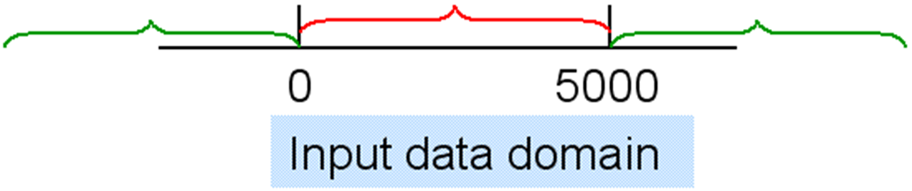
- 比较合适的测试用例集为： {-1, 0, 1, 4999, 5000, 5001}
18.7 剩余错误数的估计¶
发现错误越多，则存在潜在错误的可能性越大。
必须估计剩余的错误数，以决定是否该停止，也有助于评估代码的质量。主要有两种方法： 错误播种法：通过播种错误来估计错误数。 分别测试法：存在两个独立测试小组，综合两小组测试结果来估计剩余错误数。
18.7.1 错误播种法¶
什么标记重捕法
- 思路
- 一个成员向程序中加入若干错误(种子错误).
- 其它成员找出错误(包括种子与非种子错误)
- 假设：种子错误与实际错误的复杂度与种类一致
- 这样，种子错误发现的比例应该与非种子错误发现的比例相同。
- 实际上，难以做到！
那介绍干嘛 - 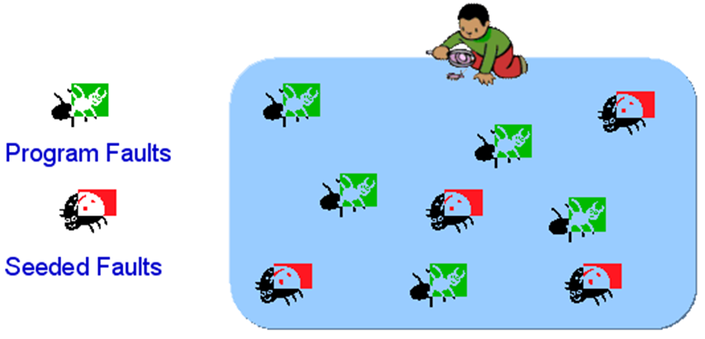
-
比例可以表示为：
- 例：一个程序被播种了 100 个错误，测试团队发现了 70 个，则测试团队也将发现 70%的实际错误(遗留 30%)
18.7.2 分别测试法¶
比~标记重捕法~错误播种法难一点, 多看一眼吧
设 1 组发现了 x 个错误，2 组发现了 y 个错误，其中 q 个错误由两组共同发现。
则每一组的有效性可以计算如下：
\(E_1 = x/N, E_2=y/N\)
- N 是程序的总错误数。
- 需要估计 N
假设： 组 1 发现所有错误的效率不变

设组 1 发现了 25 个错误，组 2 发现了 30 个错误，其中 15 个错误被两组同时发现： x = 25, y = 30, q = 15 E1 = 15 / 30 = 0.5, E2 = 15 / 25 = 0.6 则 N = 15 / (0.5 * 0.6) = 50 个错误
18.8 基于模型的测试¶
基于模型的测试(Model-based Testing，MBT)是一种黑盒测试技术。在很多情况下，使用 UML 状态图——一种行为模型作为测试用例设计的基础。MBT 技术需要以下 5 个步骤：
- 分析软件的已有行为模型或创建一个行为模型。
- 遍历行为模型，并标明促使软件在状态之间进行转换的输入。输入将触发事件，使转换发生。
- 评估行为模型，并标注当软件在状态之间转换时所期望的输出。回想一下，每个转换都由一个事件触发，作为转换的结果，某些方法会被调用并产生输出。对于步骤 2 所指定的每个输入(用例)集合，指定所期望的输出，以说明它们在行为模型中的特点。
- 运行测试用例。可以手工执行测试，也可以创建测试脚本并使用测试工具执行测试。
- 比较实际结果和期望结果，并根据需要进行调整。 MBT 可帮助我们发现软件行为中的错误，因此，它在测试事件驱动的应用时也非常有用。
习题!!!!¶
居然有习题!!!!!
选择¶
- 黑盒测试是从___观点出发的测试，白盒测试是从__观点出发的测试 A. 开发人员，管理人员 B. 用户，管理人员 C. 用户， 开发人员 D. 开发人员，用户 答案：C
- 使用白盒测试时，确定测试用例应根据____和指定的覆盖标准 A. 程序的内部逻辑 B. 程序的复杂结构 C. 使用说明书 D. 程序的功能 答案：A
- 软件测试的目的是___ A. 证明软件的正确性 B. 找出软件中存在的所有错误 C. 证明软件中存在错误 D. 尽可能多地发现软件中的错误 答案：D
- 从下列叙述中，选出依次分别与需求分析、设计、编码相对应的软件测试： A. 集成测试，确认测试，单元测试 B. 单元测试，集成测试，确认测试 C. 单元测试，确认测试，集成测试 D. 确认测试，集成测试，单元测试 答案：D
- 一般来说，与测试数据无关的文档是____
A. 需求规格说明书 B. 设计说明书
C. 源程序 D. 项目开发计划 答案：D
基本路径测试 & 控制结构测试¶
给出流图，以及基本路径、语句测试、分支测试、条件测试用例
(1) void myflow(int x,int y) {
(2) int a;
(3) if (y = = 0) {
(4) a = 1;
(5) } else {
(6) a = y;
(7) }
(8) y = x – a;
(9) if ((a > 0) || ( a < -10) ) {
(10) a = x;
(11) } else {
(12) a = x + 1;
(13) }
(14) printf(“%d\n”, a);
(15) }
-
流图
结点说明 流图 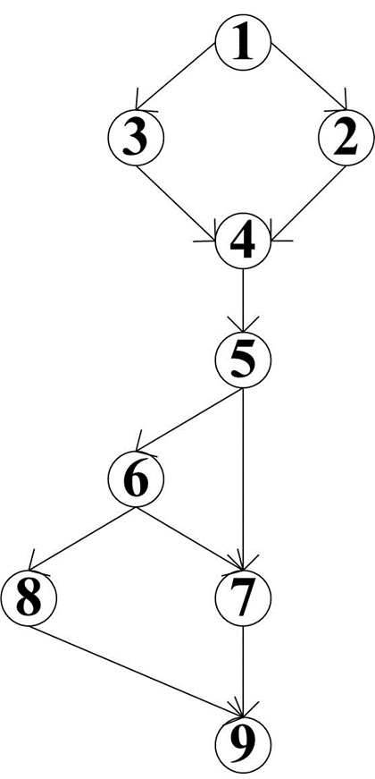 -
基本路径
- 有 4 个域，故有四条基本路径： 1-3-4-5-6-8-9 1-3-4-5-6-7-9 1-3-4-5-7-9 1-2-4-5-7-9
- 基本路径测试
- 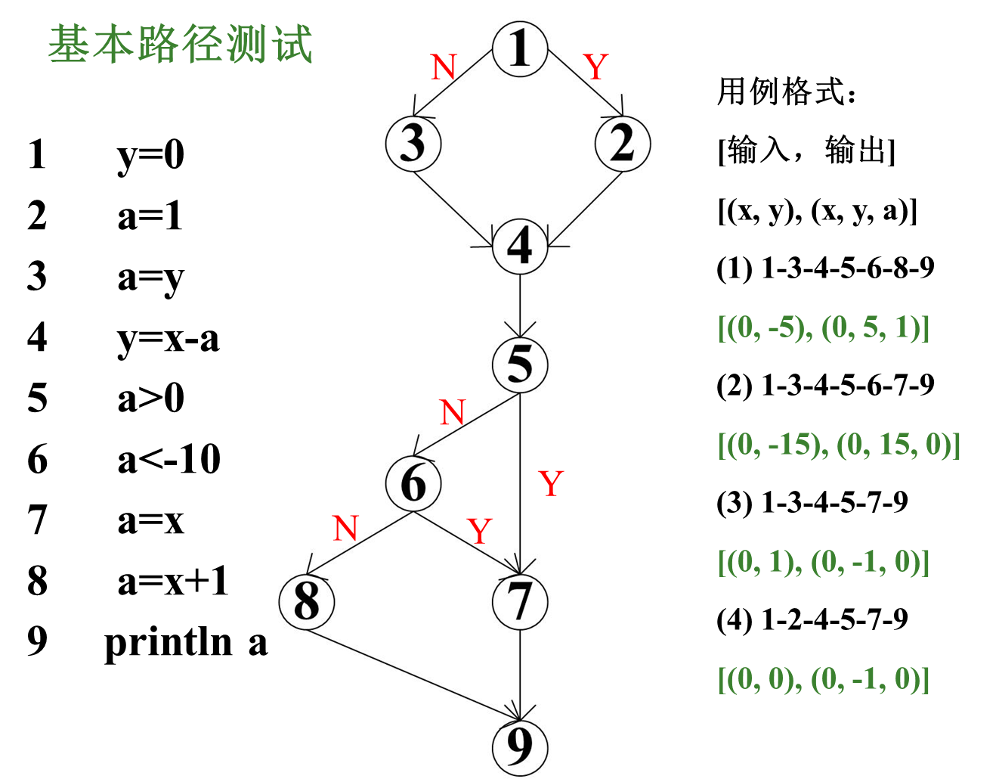
- 语句测试
- 分支测试
- 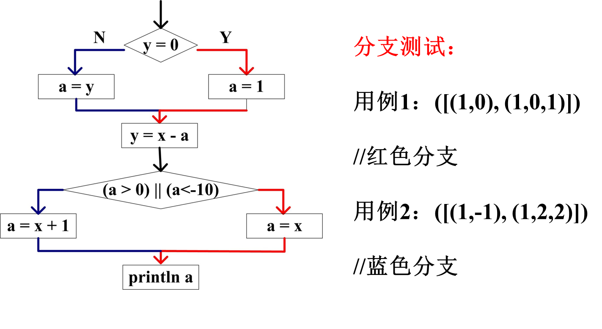
- 条件测试
- 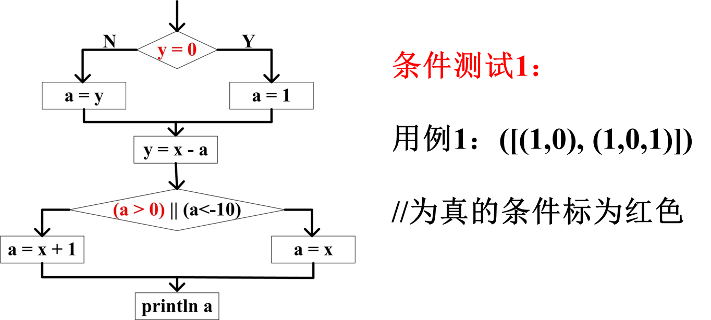
数据流测试¶
标记 a 的所有定义点、使用点以及可能的定义使用关系，并给出测试用例
(1) void myflow(int x,int y) {
(2) int a;
(3) if (y = = 0) {
(4) a = 1;
(5) } else {
(6) a = y;
(7) }
(8) y = x – a;
(9) if ((a > 0) || ( a < -10) ) {
(10) a = x;
(11) } else {
(12) a = x + 1;
(13) }
(14) printf(“%d\n”, a);
(15) }
-
a 的定义点: 4, 6, 10, 12 a 的使用点: 8, 9, 14
-
a 的可能定义使用关系及相应测试用例
第 19 章 测试面向对象的应用¶
为了测试面向对象的系统, 需要考虑以下三点
- 对测试的定义进行扩展，使其应用于面向对象分析和设计模型的错误发现技术；
- 单元测试和集成测试策略必须彻底改变；
- 测试用例设计必须考虑面向对象软件的独特性质
19.1 扩展测试的视野¶
注重评审环节, 因为相同的语义结构 (例如，类、属性、操作、消息)出现在分析、设计和代码层次
19.2 测试 OOA 和 OOD 模型¶
- 评估一致性: 使用 CRC/E-R 图
- 评估类模型的步骤
- 检查 CRC 模型和对象-关系模型。对这两个模型做交叉检查，确保需求模型所蕴含的所有协作都正确地反映在这两个模型中。
- 检查每一张 CRC 索引卡片的描述，以确定委托责任是定义协作者的一部分 (协作者是否可以完成委托的责任) 。 - 例如: 将责任 (例如，读信用卡)委托给已命名的协作者 信用卡(CreditCard)，看看此协作者是否完成这项责任。也就是说，信用卡 CreditCard 类是否具有读卡操作？遍历对象—关系模型，确保所有此类连接都是有效的。(通过 ER 图验证)
- 反转连接，确保每个提供服务的协作者都从合理的地方收到请求。例如，如果协作者 CreditCard 类收到了来自 CreditSale 类的请求“显示购物金额”，就有问题了，因为 CreditCard 类不知道购物金额是多少。
- 使用步骤 3 中反转后的连接，确定责任是否真正需要其他类，或者责任在类之间的组织是否合适。
- 确定是否可以将广泛请求的多个责任组合为一个责任。例如，读信用卡和取得授权在每一种情形下都会发生，可以将这两个责任组合为“验证信用请求”责任。
19.3 面向对象测试策略¶
-
单元测试
- 最小测试单元: 模块 → 类, 但类的操作可以是不同子类的一部分
- 所以有较大差异
所以怎么测试为什么不写出来
-
面向对象系统的集成测试有两种不同的策略：
- 基于线程的测试 (thread-based testing)，对响应系统的一个输入或事件所需的一组类进行集成。
- 基于使用的测试 (use-based testing)，通过测试很少使用服务类的那些类 (称之为独立类)开始构造系统。独立类测试完后，利用独立类测试下一层次的类 (称之为依赖类)。继续依赖类的测试直到完成整个系统。
-
在进行确认测试或系统级测试时，传统软件、面向对象软件及 WebApp 之间的差别已经消失。
19.4 面向对象测试方法¶
面向对象软件测试用例设计的总体方法：
- 每个测试用例都对应唯一地标识，并明确地与被测试的类相关联。
- 应该叙述测试的目的。
-
为每个测试开发测试步骤，测试用例需要包括以下内容：
- 要测试类的状态列表；
- 要测试的消息和操作列表；
- 对类进行测试时可能发生的异常列表；
- 外部条件列表 (即软件外部环境的变更)；
- 有助于理解或实现测试的补充信息；
-
面向对象测试方法的两个困难：
- 封装可能成为测试的一个障碍： 测试需要获取对象的具体状态和抽象状态，而封装使得获取这些信息有困难。
- 继承提出了额外的挑战： 即使子类已取得复用，每个新的应用环境也需要重新测试； 由于增加了所需测试环境的数量，多重继承使测试进一步复杂化
- 一些传统的测试方法可以应用：白盒测试、黑盒测试。
- 继承后的列也需要进行测试, 因为实际应用场景存在差异
19.5 类级可应用的测试方法¶
例: 银行应用:
- 最小测试序列：open •setup • deposit • withdraw • close
- 每个操作均可应用于 Account 类，但需要注意一些隐含限制，例如，账号必须在其他操作可应用之前打开，在所有操作完成之后关闭。
-
一般测试序列模板： open •setup • deposit •{deposit | withdraw | balance | accSummary | creditLimit}n • withdraw • close
-
操作 期待输出 期待状态 open (acc-no=12345) 开户 balance=0, creditLimit=0 setupAccnt (creditLimit=2000.00) 启动 creditLimit=2000.00 deposit (amount=150.00) 存款成功 balance=150.00 deposit (amount=2000.00) 存款成功 balance=2150.00 balance () 返回 2150.00 balance=2150.00 withdraw (1500.00) 返回 1500.00 balance=650.00 close (acc-no=12345) 销户，失败(余额非 0) --
-
19.5.1 类级的划分测试¶
划分测试的目的是减小测试特定类所需的测试用例数量。可以采用以下划分方法：
基于状态的划分¶
操作分为：改变状态操作集、不改变状态操作集
- 改变状态集：deposit , withdraw
- 不改变状态集: balance, acctSummary, creditLimit
- 用例 1 (检查改变状态的操作)：open • setupAccnt • deposit • deposit • withdraw • withdraw • close
- 用例 2 (检查不改变状态的操作) ：open • setupAccnt • deposit • creditLimit • acctSummary • balance • withdraw • close
基于属性划分¶
根据使用的属性进行划分类操作：
属性 creditLimit 可用于定义划分。操作可以分为 3 类：
(1) 查询 creditLimit 的操作；
(2) 修改 creditLimit 的操作；
(3) 既不查询也不修改 creditLimit 的操作。
基于类别划分¶
根据每个操作完成的一般功能进行划分类操作： 操作可分为
- 初始化操作 (open、setup)，
- 计算操作 (deposit、withdraw)，
- 查询操作 (balance、summarize、creditLimit)
- 终止操作 (close)
19.6 类间测试用例设计¶
当开始集成面向对象系统时，测试用例的设计变得更为复杂。在这个阶段必须开始==类间协作== 的测试。
与单个类的测试相似，类协作测试可运用以下方法：
- 随机方法
- 划分方法
- 基于场景测试
- 行为测试
第 20 章 安全性工程 [没上过]¶
随便 cv 点
20.1 安全性需求分析¶
- 软件的安全性需求:
- 与客户共同识别出的 必须得到保护的资产
- 出现安全性漏洞时, 受损的资产成本(用恢复/重建资产的时间&成本度量)
- 软件安全性是软件的完整性、可用性、可靠性和安全性(第 15 章)的必要前提，要想创建能防御资产免受所有可能威胁的系统是做不到的。因此必须鼓励用户维护好关键数据和冗余系统构件的备份副本，确保其安全保密。
20.2 网络世界中的安全性与保密性¶
- 社交媒体: 钓鱼网站 / 个人信息泄露
- 移动 APP: 无线网络的信息泄露
- 云计算:
- 物联网
20.3 安全性工程分析¶
-
安全性需求获取
-
安全性和可用性可能互相冲突
- 以用户为中心的安全性工程, 注意一下结构方面
- 用户要求
- 良好的用户界面设计
- 运行有效, 高效, 且使用户满意
-
-
安全性建模–需要包含以下内容
- (1)安全性策略的目标；
- (2)外部界面的需求；
- (3)软件安全性需求；
- (4)运行规则；
- (5)描述模型与系统对应关系的详细说明。
-
测度设计
- 为了实现安全性，软件必须具有三种属性：
- 可靠性(软件可以在不友好的环境下运行)
- 可信性(系统不会在恶意的方式下运行)
- 存活性(在已妥协的情况下系统可继续运行)。
- 有用的安全性度量必须以测度为基础，使开发人员能够评估处于风险中的数据机密性和系统完整性可能达到的程度。生成此度量所需的三项测量是：
- 资产价值测度
- 威胁似然性测度
- 系统漏洞测度
- 为了实现安全性，软件必须具有三种属性：
-
正确性检查: 安全性的正确性检查需要贯穿于整个软件开发周期。
20.4 安全性保证¶
安全性保证是为了向最终用户和其他利益相关者表明确已开发出一个安全产品，从而增强他们的信心。
20.5 安全性风险分析¶
威胁建模 是一种安全性分析方法，可用于识别那些最有可能引发基于软件系统的破坏的威胁。威胁建模是在项目的初期阶段利用需求模型完成的。微软采用以下步骤生成威胁模型：
- 确认资产。列出所有的敏感信息和知识产权、存储位置、存储方式以及谁有访问权。
- 给出体系结构概述。写出系统用例并建立系统构件模型。
- 分解应用。目标是保证在应用构件之间发送的所有数据都是有效的。
- 确认威胁。使用如攻击树或攻击模式等方法，记录可能危及系统资产的所有威胁。
- 记录威胁。制作一个风险信息表，详细列出要监测和缓解的每项威胁
- 评估威胁。对于处理可能的威胁，要根据其影响大小和发生的可能性做出排序，以便区别对待。
20.6 传统软件工程活动中的作用¶
有效的软件过程包括一组合理的评审和调整措施。许多安全性活动都有互补作用，并且对软件质量具有协同效应。
例如，众所周知，在测试之前，代码评审可以减少产品缺陷的数量，同时还可以消除潜在的安全性漏洞，从而提高软件的质量。
所以整个软件过程活动都需要考虑安全性方面。
20.7 可信性系统验证¶
对于信任实体的所有协作者来说，用来证明安全性用例的证据必须是可以接受的和有说服力的。 可信系统的用户应该确信系统没有可被利用的漏洞或恶意的逻辑。作为验证任务的结果，当遭到损害时，用户应在系统的可靠性和可存活性上充满信心。这便意味着对软件的损坏已降到最低限度，并且系统能够很快恢复到可接受的运行能力。
第 22 章 项目管理¶
项目 ：是为创造独特的产品、服务或其他成果而进行的一次性工作
项目管理 ：以项目为对象，通过一个临时性的、柔性的组织，运用相关的知识、技术和工具，对项目进行高效率的计划、组织和控制，以实现项目全过程的动态管理和项目目标的综合协调与优化的过程。
22.1 管理涉及范围¶
- 软件项目管理的“4 个 P”
- 人员 People: 项目成功最重要的因素
- 产品 Product: 将要开发的软件
- 过程 Process：为完成工作所要求的框架活动和软件工程任务
- 项目 Project：实现产品的所有工作
22.6 W5HH 原则¶
由 Boehm 提出，W5HH 原则描述项目的目标、里程碑、进度、责任、管理和技术方法以及需要的资源。
- 为什么要开发这个系统？ Why 了解软件工作的商业理由是否有效？是否值得做？
- 将要做什么？ What 定义项目所需的任务集
- 什么时候做？ When 团队制定项目进度，标识出何时开展项目任务以及何时到达里程碑
- 某功能由谁负责？ Who 规定软件团队每个成员的角色和责任。
- 他们的机构组织位于何处？ Where 并非所有角色和责任均属于软件团队，客户、用户和其他利益相关者也有责任。
- 如何完成技术和管理？ How 一旦确定了产品范围，就必须定义项目的管理策略和技术策略。
- 每种资源需要多少？ How much 通过估算得到
第 23 章 过程度量和项目度量¶
- 定量分析 是重要的：
- 工程化的软件开发需要定量、科学的描述 (实施前、实施过程中、实施完成后)。
- 定量、科学的描述有助于获取软件项目以及所开发的软件的某种可视性，促进软件项目的管理。
- 定量的信息描述必须在软件项目开发过程中采集。
- 对软件进行测量的理由：
- 刻画：我们通过刻画而获得对过程、产品、资源和环境的了解，并建立和未来评估比较的基线。
- 评价：通过评价来确定相对于计划的状况。
- 预测：通过取得对过程和产品间关系的理解，并建造这些关系的模型来进行预测 。
- 改进：通过识别产品的不足来改善产品质量和过程性能。
23.1 过程领域和项目领域中的度量¶
- 对软件质量和组织性能有重大影响的因素：
- 人员的技能和动力是对质量和性能最有影响的因素
- 产品的复杂性对质量和团队绩效产生相当大的影响
- 过程中采用的技术(如软件工程方法和工作)也有影响
- 过程改进的过程
23.2 软件测量¶
- 软件度量的分类
- 软件过程的直接测量包括花费的成本和工作量。
- 产品的直接测量包括产生的代码行(lines of code，LOC)、运行速度、存储容量以及某段时间内报告的缺陷。
- 产品的间接测量包括功能、质量、复杂性、有效性、可靠性、可维护性等。
- 软件度量范围分为过程度量、项目度量和产品度量：
- 产品度量对个人来讲是私有的，将产品度量合并起来生成项目度量。
- 项目度量对软件团队来说是公有的，再将项目度量联合起来可以得到整个软件组织公有的过程度量。
23.2.1 面向规模(LOC)的度量¶
-
面向规模的软件度量 是基于所开发的软件的“规模” 。

-
需要注意的是，在表格中记载的工作量和成本是整个软件开发的活动(分析、设计、编码和测试)，而不仅仅是编码活动。
- 对于每一个项目，可以根据表格中列出的基本数据计算简单的面向规模的生产率和质量的度量：
- 生成率 ＝ KLOC／PM(人月)
- 质量 ＝ 错误数／KLOC
- 成本 ＝ 元／LOC
- 文档 ＝ 文档页数／KLOC
23.2.2 面向功能(FP)的度量¶
- 面向功能的软件度量使用软件所提供的功能的测量作为规范化值。因为“功能”不能直接测量，所以必须通过利用其它直接的测量来间接地导出。面向功能度量是由 Albrecht 首先提出来的，他建议一种称为==功能点== (Function Point, FP)的测量：
- 功能点是基于软件信息域的特性及软件复杂性的评估而导出的
- 主要考虑程序的“功能性”和“实用性”，而不是对 LOC 计数

- 功能点计算：
- 用户输入数：面向应用的输入数据,包括对话框、屏幕信息、控件等；
- 用户输出数：面向应用的输出信息，包括报告、屏幕信息、错误信息等；
- 用户查询数：查询是一种联机的交互操作，每次询问/响应应计数：输入/输出的简单组合；
- 文件数：每一个逻辑主文件都应计数；
- 外部接口数：与系统中其他设备通过外部接口读写信息的计数
- 计算功能点，使用如下关系式：\(FP ＝ 总计数 × ( 0.65+ 0.01\sum (Fi))\)
- \(\sum(Fi)\)是求和函数(对 14 个问题进行打分)
- Fi(i ＝ 1…14)是复杂性校正值，取值 0-5：0 没有影响；1 偶然的；2 适中的；3 普通的；4 重要的；5 极重要的
23.2.3 调和 LOC 和 FP 的度量方法¶
- 调和代码行和功能点的度量方法：
- 给出不同程序设计语言中实现一个功能点所需的平均代码行数的粗略估算
- 只要知道程序设计语言的语句行数，就可以逆向估算出现有软件的功能点数量
23.2.4 面向对象的度量¶
- 度量参数
- 场景脚本的数量。场景脚本是一个详细的步骤序列，用来描述用户和应用系统之间的交互。每个脚本采用{发起者、动作、参与者}的形式来组织，其中，发起者是指请求某个服务的对象，动作是该请求的结果，参与者是满足该请求的服务对象。
- 关键类的数量。关键类是“高度独立的构件” ，关键类是问题域的核心。(与具体业务有关)
- 支持类的数量。支持类是实现系统所必需的但又不与问题域直接相关的类。例如，用户界面(GUI)类、数据库访问及操作类、计算类等。另外，对于每一个关键类，都可以开发其支持类。
- 每个关键类的平均支持类数量。通常，关键类在项目的早期就可以确定下来，而支持类的定义则贯穿于项目的始终。对于给定的问题域，如果知道了每个关键类的平均支持类数量，估算 (根据类的总数)将变得极其简单。
- 在采用 GUI 的应用中，支持类是关键类的 2-3 倍。在不采用 GUI 的应用中，支持类是关键类的 1-2 倍。
- 子系统的数量。子系统是实现某个功能 (对最终用户可见)的类的集合
23.2.5 面向用例的度量¶
- 面向用例的度量：
- 用例描述了 (至少是间接地)用户可见的功能和特性，这些都是系统的基本需求。
- 用例与程序设计语言无关。
- 用例数量同应用系统规模 (LOC)和测试用例的数量成正比。
- 由于可以在不同的抽象级别上创建用例，所以用例的“大小”没有统一标准。由于用例本身都没有标准的测量，所以，不能将用例作为规范化的测量 (例如，每个用例花费的工作量)
23.3 软件质量度量¶
虽然有很多软件质量的测量，但是对于项目组最有效的指标的是：
- 正确性
- 可维护性
- 完整性
- 可用性
- 正确性 ：
- 正确性是软件完成所需的功能的程度。
- 一个程序必须能够正确操作，否则对于用户就没有价值了。
- 关于正确性的最常用的测量是每千行(KLOC)的缺陷数，这里缺陷定义为验证出的与需求不符的地方。
- 当考虑某软件产品的整体质量时，缺陷是指软件发布后由某用户报告的那些问题。
- 缺陷是按某标准时间段计数的，比如 1 年。
- 可维护性 ：
- 软件维护所占的工作量比任何其它软件工程活动都大。
- 可维护性是指遇到错误时程序能被修改的容易程度，环境发生变化时程序能够适应的容易程度，用户希望改变需求时程序能被增强的容易程度。
- 可维护性无法直接测量；因此，我们必须采用间接测量。
- 一个简单的面向时间的度量是==平均变更时间== (mean-time-to-change，MTTC)，它包括：分析变更需求、设计合适的修改方案、实现变更、测试、并将变更后的结果发布给用户所花的时间。
- 一般情况下，与那些不可维护的程序相比，可维护的程序应该有较低的 MTTC (对于相同类型的变更)。
- 可维护性度量的特性主要有可理解性、可测试性和可修改性：
- 可理解性被定义为人们通过阅读源代码和文档了解软件系统的结构、接口、功能、内部过程以及如何运行的难易程度；
- 可测试性被定义为诊断和测试系统的难易程度；
- 可修改性被定义为修改软件系统的难易程度；
- 完整性 ：
- 在防火墙和黑客的时代，软件完整性变得越来越重要。
- 测量系统在安全方面的抗攻击(包括偶然的和蓄意的)能力。攻击可以针对软件的三个主要成分：程序、数据及文档。
- 为了测量完整性，必须定义两个附加属性：危险性和安全性：
- 危险性是某个特定类型的攻击在给定时间内发生的概率；
- 安全性是某个特定类型的攻击将被击退的概率。
- 一个系统的完整性可以定义为：\(完整性 = \sum [ 1－ (危险性×(1 - 安全性))]\)
- 这里威胁及安全性针对每种类型的攻击求和。
- 例如：
- 假设危险性 (发生攻击的可能性)是 0.25，安全性 (击退攻击的可能性)是 0.95，则系统的完整性是 0.99 (很高)。
- 假设危险性 (发生攻击的可能性)是 0.5，安全性 (击退攻击的可能性)是 0.25，则系统的完整性是 0.63 (低的无法接受)。
- 可用性 ：
- 在对软件产品的讨论中，“用户友好性” (容易使用)这个词已经是普遍存在的。
- 如果一个程序不是“用户友好的”，那么它是注定会失败的，即使它所完成的功能很有价值。
- 可用性力图对“使用的容易程度”进行量化。
- 缺陷排除效率 DRE
- 缺陷排除效率(DRE)是对质量保证及控制活动中滤除缺陷能力的一个测量，这些活动贯穿于所有过程框架活动。
- 当把项目作为一个整体来考虑时，DRE 按如下方式定义：\(DRE = E /(E ＋ D)\)
- E = 软件交付之前所发现的错误数
- D= 软件交付之后所发现的缺陷数
- 最理想的 DRE 值是 1，即，软件中没有发现缺陷。现实中，D 会大于 0，但随着 E 值的增加，DRE 的值仍能接近 1。 事实上，随着 E 的增加，D 的最终值可能会降低(错误在变成缺陷之前已经被过滤)。
- 如果将 DRE 作为一个度量，提供关于质量控制和保证活动的过滤能力的指标，则 DRE 鼓励软件项目组采用先进技术，以在交付之前发现尽可能多的错误。
- 传递的 DRE
- DRE 也能够用于在项目中评估一个团队在错误传递到下一个框架活动或软件工程任务之前发现这些错误的能力。
- 例如，在对需求模型的评审中未被发现的错误会传递给设计任务。在这种情况下，我们将 DRE 定义$DREi = E_i / ( E_i + E ) $
- \(E_i\) = 软件工程活动 i 中所发现的错误数 \(E_{i+1}\) = 软件工程活动 i+1 中所发现的错误数，这些错误起源于软件工程活动 i 中未能发现的错误。
- 一个软件项目组（或单个软件工程师）的质量目标是使$DRE_i $接近 1，即，错误应该在传递到下一个活动之前被过滤掉。
- DRE 也能够用于在项目中评估一个团队在错误传递到下一个框架活动或软件工程任务之前发现这些错误的能力。
第 24 章 软件项目估算¶
24.1 对估算的观察¶
软件项目管理从项目策划开始，估算是项目策划的第一项活动，是其他项目策划活动的基础。
过程度量和项目度量为定量估算提供了依据和有效的输入。
风险源于对资源、成本及进度的定量估算中存在的不确定性。
常对时间和工作量估算。
没有估算就着手软件开发，将会导致陷入盲目性。
估算的风险¶
- 项目的复杂度
- 项目规模
- 项目结构化程度
- 历史信息的有效性
24.2 项目计划过程¶
软件项目策划 的目标是提供一个能使管理人员对资源、成本及进度做出合理估算的框架。此外，估算应该尝试定义“最好的情况”和“最坏的情况”，使项目的结果能够限制在一定范围内。
项目计划 是在计划任务中创建的，尽管它具有与生俱来的不确定性，软件团队还是要根据它着手开发。因此，随着项目的进展，必须不断地对计划进行调整和更新。
-
项目计划任务集
- 规定项目范围；
- 确定可行性；
- 分析风险；
-
确定需要的资源：
- 人力资源； - 可复用的软件资源； - 硬件、软件资源；
-
估算成本和工作量： - 分解问题； - 使用规模、功能点、过程任务或用例等方法进行两种以上的估算 - 调和不同的估算；
- 制定项目进度计划：
- 建立一组有意义的任务集合；
- 定义任务网络；
- 使用进度计划工具制定时间表；
- 定义进度跟踪机制。
24.3 软件范围和可行性¶
- 软件范围 描述了：
- 要交付给最终用户的功能和特性；
- 输入和输出的数据；
- 使用时要呈现给用户的“内容”；
- 界定系统的性能、约束、接口和可靠性。
- 在开始估算之前，首先要对范围陈述 (或用例)中描述的功能进行评估，在某些情况下，还要进行细化，以提供更多的细节。
- 性能方面的考虑包括处理时间和响应时间。
- 约束条件表示成本、外部硬件、可用存储或其它现有系统对软件的限制。
- 功能、性能和约束必须在一起进行评价。性能限制不同时，为实现同样功能，开发工作量可能相差一个数量级。
- 影响软件可行性的因素：
- 技术。根据客户提出的系统功能、性能及实现系统的各项约束条件，从技术角度研究实现系统的可行性
- 经济。进行成本效益分析，评估项目的开发成本，分析系统开发对其他产品或利润的影响；
- 时间。项目投入市场的时间可以击败竞争者吗？
- 资源。组织拥有取得成功所需要的资源吗？比如，人、硬件等；
- 法律。系统开发过程可能涉及的各种侵权、责任以及其它法律问题
24.4 资源¶
项目策划的第二个任务是对完成软件开发工作所需的资源进行估算。
有 3 类主要的软件工程资源：人员、可复用的软件构件以及开发环境 (硬件和软件工具)。
对每类资源，都要说明以下 4 个特征：资源描述，可用性说明、何时需要资源以及使用资源的持续时间。
- 最后两个特性可以看成是时间窗口。
神奇的 PPT 配图, 我不会说它像什么的
24.4.1 人力资源¶
计划人员首先评估软件范围，并选择完成开发所需的技能，还要指定组织中的职位 (例如，管理人员、高级软件工程师)和专业 (例如，电信、数据库、客户/服务器系统)：
- 对于一些比较小的项目 (几个人月)，只要向专家做些咨询，也许一个人就可以完成所有的软件工程任务。
- 而对于一些较大的项目，软件团队的成员可能分散在很多不同的地方，因此，要详细说明每个人所处的位置。
只有在估算出开发工作量 (如多少人月)后，才能确定软件项目需要的人员数量。
24.4.2 可复用资源[基于构件]¶
基于构件的软件工程 (CBSE)强调可复用性。
主要有 4 种软件构件：
- 成品构件：能够从第三方或从以往项目中获得的现成软件。商业成品构件(commercial off-the-shelf, COTS)是从第三方购买的，准备用于当前项目，并已经过完全确认的构件。
- 具有完全经验的构件：以前项目开发的，与当前项目要构造的软件具有相似的规格说明、设计、代码或测试数据。当前软件团队成员在这些构件的应用领域中具有丰富的经验。因此，进行构件修改的风险相对较小。
- 具有部分经验的构件：为以前项目开发的，与当前项目要构造的软件具有相关的规格说明、设计、代码或测试数据，但是需要做很多修改。当前软件团队的成员在这些构件的应用领域中经验较少。因此，进行构件修改会有相当大的风险。
- 新构件：软件团队为了满足当前项目的特定需要，而必须专门开发的软件构件。
在策划阶段，人们往往忽视可复用软件构件，直到软件过程的后期，它才变成最重要的关注对象。
24.5 软件项目估算¶
可能的“捷径”：
-
[不现实]把估算推迟到项目后期进行：
- 显然，在项目完成之后就能得到 100%精确的估算；
- 不现实，成本估算必须预先给出。
-
[不现实]根据已经完成的类似项目进行估算：
- 如果当前项目与以前的工作非常相似，并且项目的其他影响因素 (例如，客户、商业条件、软件工程环境、交付期限)也大致相同，就可以采用此方法。
- 遗憾的是，过去的经验并不总是能够指明未来的结果。
-
使用比较简单的分解技术，生成项目的成本和工作量估算：
- 分而治之：当待解决的问题过于复杂时，可以把它进一步分解，直到分解后的子问题变得容易解决为止。然后，分别解决每一个子问题，并将这些子问题的解答综合起来，从而得到原问题的解答。
- 把项目分解成若干主要功能和相关的软件工程活动，以逐步求精的方式对成本和工作量进行估算。
- 使用一个或多个经验模型来进行软件成本和工作量的估算。
方法 3 和 4 可行，最理想情况是同时使用这两种方法，相互进行交叉检查。
经验估算模型¶
经验估算模型 可以作为分解技术的补充
一个基于经验 (历史数据)的模型形式如下：
- \(d = f ( v_i )\)
- d 是很多估算值 (例如，工作量、成本、项目持续时间)中的一种
- vi是所选的独立参数 (例如，被估算的 LOC 或 FP)。
每种可行的软件成本估算方法，其效果的好坏取决于估算所使用的历史数据。如果没有历史数据，成本估算就建立在了不稳定的基础上。
24.6 分解技术¶
软件项目估算的准确性取决于许多因素： (1) 估算待开发产品规模的正确程度； (2) 把规模估算转换成人员工作量、时间及成本的能力； (3) 项目计划反映软件团队能力的程度； (4) 产品需求的稳定性和支持软件工程工作的环境。
24.6.1 软件规模估算¶
在进行估算前, 必须理解待开发软件的范围, 估算其“规模”
-
在项目计划中，规模 是指软件项目的可量化结果：
- 如果采用直接的方法，规模可以用代码行 (LOC, Lines Of Code)来测量；
- 如果选择间接的方法，规模可以用功能点 (FP, Function Point)来表示。
-
4 种估算问题规模的方法：
- “模糊逻辑法”。该方法使用近似推理技术，计划人员必须先确定应用的类型，定性地确定其量级，然后在初始范围内再细化该量级。
- 功能点法。计划人员对信息域的特性进行估算。
- 修改法。当项目要使用已有的软件作为项目的一部分，并且该软件必须做某些方面的修改时，可以使用这种方法。计划人员要估算必须完成的修改的数量和类型 (例如，复用、增加代码、修改代码、删除代码)。
- 标准构件法。软件是由许多不同的“标准构件”组成。例如，信息系统的标准构件是子系统、模块，屏幕、报表、交互程序、批处理程序、文件、LOC 和目标级指令。项目计划人员估算每个标准构件出现的次数，然后使用历史项目数据来估算每个标准构件交付时的规模。
- 将上述方法产生结果在统计意义上结合, 产生一个三点估算/期望值估算结果
- 先确定规模的乐观值 (低)、可能值和悲观值 (高)，然后将它们结合起来。
24.6.2 基于问题的估算¶
-
基于问题规模估算的过程：
- 从软件范围陈述入手，将软件分解成一些可独立进行估算的功能；
- 估算每个功能的 LOC 或 FP (即估算变量)，也可以选择其它元素进行规模估算 (例如，类、对象、变更以及受影响的业务过程)；
- 将基线生产率度量 (例如，LOC/pm 或 FP/pm)应用于适当的估算变量中，导出每个功能的成本或工作量； - pm: person-month 人月
- 将所有功能的估算合并，得到整个项目的总体估算。
-
生产率度量 :
- 对于一个组织而言，其生产率度量常常是变化的，使用单一基线的生产率度量是不可信的。应该根据项目的团队规模、应用领域、复杂性以及其他相关参数对项目进行分类，然后计算出本领域的生产率平均值。
- 当估算一个新项目时，首先应将项目对应到某个领域中，然后，再使用适当的领域生产率平均值对其进行估算。
- LOC&FP 的区别
- 在分解应用问题时，LOC 估算技术和 FP 估算技术所要求的详细程度及划分目标有所不同：
- 当 LOC 用作估算变量时，分解是绝对必要的，而且常常要达到非常详细的程度。分解的程度越高，就越有可能得到非常精确的 LOC 估算。
- 对于 FP 估算，分解则是不同的。它关注的是 5 个信息域特性—输入、输出、数据文件、查询和外部接口，以及在之前讨论过的 14 种复杂度校正值。然后，利用这些估算结果导出 FP 值，该值可与过去的数据结合，来产生估算。
- 估算步骤
- 不管使用哪一种估算变量，都应该首先为每个功能或每个信息域值确定一个估算值的范围
- 当其他方法都失效时，可利用历史数据或凭直觉，为每个功能或每个信息域的计数值都分别估算出一个乐观的、可能的和悲观的规模值。
- 计算三点估算(综合不同的估计结果)：
- 先确定规模的乐观值 (Sopt)、可能值 (Sm)和悲观值 (Spess)，再将它们结合起来 (加权平均)
- 期望值\(S = (S_{opt} + 4S_m + S_{pess}) / 6\)
- 假定实际的规模结果落在乐观值与悲观值范围之外的概率很小
- 一旦确定了估算变量的期望值，就可以应用历史的 LOC 或 FP 生产率数据。
- 任何估算技术，不管它有多先进，都必须与其他方法进行交叉检查。即便如此，常识和经验还是会占优势。
- 不管使用哪一种估算变量，都应该首先为每个功能或每个信息域值确定一个估算值的范围
24.6.3 基于 LOC 的估算¶
- 例: 考察为机械零件计算机辅助设计 (CAD)应用系统开发的软件包。该软件将在工程工作站上运行，且必须与各种计算机外部绘图设备有接口，包括鼠标、数字化仪、高分辨率彩色显示器和激光打印机。可以给出初步的软件范围陈述：
- 机械 CAD 软件接受工程师输入的二维或三维几何数据。
- 工程师通过用户界面与 CAD 系统进行交互并控制它，该用户界面应表现出良好的人机界面设计特征。
- 所有的几何数据和其他支持信息都保存在一个 CAD 数据库中。
- 开发一些设计分析模块，以产生所需的输出，这些输出要显示在各种不同的图形设备上。
- 软件必须设计成能够控制外部设备(包括鼠标、数字化仪、激光打印机和绘图机)，并能与外部设备进行交互。
- 估算:

-
回顾历史数据
- 此类系统的平均生产率 = 620 LOC/pm
- 一个劳动力每月成本 = $8000
- 则每行代码成本 = $8000/ 620 = $13 ；
-
根据 LOC 估算及历史生产率数据
- 该项目总成本估算值 = 33 200 * $13 = $431,000
- 工作量估算值是 = 33 200 / 620 = 54 人月
24.6.4 基于 FP 估算¶


- FP 的估算值：\(F_{Pestimated} = 总计数 * [0.65 + 0.01 × Σ(Fi)] = 320 * 1.17 = 375\)
- FP 估算法有一个计算公式，如下
\(FP=UFC*TCF\)
- UFC 即 Unadjusted Function Point Count,意为未调整的功能点数
- TCF 即 Technical Complexity Factor，意为技术复杂度因子
- TCF 的取值范围是 0.65~1.35 之间，换个意思也就是说它是对 UFC 进行调整，范围是正负 35%。
- FP 估算法有一个计算公式，如下
\(FP=UFC*TCF\)
- 假设此类系统的平均生产率 = 6.5 FP/pm
- 劳动力价格 = $8000 per month, 每个 FP 的成本约为 $8000 / 6.5 = $ 1230；
- 根据 FP 估算和历史生产率数据，项目总成本估算为$1230 *375 = $461,000 ，项目工作量估算为 58 人月= (375 / 6.5) 或 (461,000 / 8,000)。
24.6.5 基于过程的估算¶
基于过程的估算：将过程分解为一组较小的任务，并估算完成每个任务所需的工作量。步骤如下：
- 从项目范围中抽取出软件功能；
- 给出为实现每个功能所必须执行的一系列框架活动；
- 估算每个软件过程活动所需的工作量；
- 将平均劳动力价格应用于每个软件过程活动的估算工作量，从而估算出成本。
- 各项任务的劳动力价格很可能是不同的。高级技术人员主要投入到早期的框架活动中，而初级技术人员通常参与后期的构造和发布活动，高级技术人员的劳动力价格要高于初级技术人员。
- 计算每一个功能及框架活动的成本和工作量。

假设劳动力价格为 $8,000 per month，工作量估算值为 46 人月，项目总成本估算值为$368,000
24.6.6 基于用例的评估¶
- 基于用例估算存在的困难：
- 没有标准形式，可以采用多种格式和风格去描述用例；
- 用例表现的是软件的外部视图，即用户视图，因此可以在很多不同的抽象级别上建立；
- 没有标识出所描述的功能和特性的复杂性；
- 不能描述出涉及很多功能和特性的复杂行为(如交互)。
- 与 LOC 或 FP 不同，一个角色的“用例”可能需要数月的工作量，而另一个角色的“用例”可能一到两天就能完成。
- 基于用例估算的过程：
- 明确原则： - 任一层次都可以由不超过 10 个用例来描述，而每个用例包括的场景不超过 30 个。 - 与描述单一子系统的用例相比，描述大型系统的用例要在更高的抽象级别上建立 (并代表相对更多的开发工作量)。
- 建立结构层次内的层次，确定每个用例的平均长度 (页数)，定义软件的类型 (实时、商业、工程/科学、Web 应用、嵌入式等)；
- 确定系统的大致体系结构；
- 利用经验数据确定 (层次结构中每一层)每个用例的 LOC 或 FP 的估算值；
- 基于历史数据计算开发系统所需的工作量。
计算公式¶
\(LOC_{估算} = N*LOC_{avg} + [(s_a/s_h-1)+(p_a/p_h-1)] * LOC_{adjust}\\LOC_{估算}=LOC_{avg}*(N + [(s_a/s_h-1)+(p_a/p_h-1)]*n\% )\)
- N：实际用例数
- (LOC_{avg} (: 历史平均LOC值
\(LOC*{adjust}\): 调整值，以\)LOC*{avg}\)的 n% 来表示, 即\(LOC*{adjust}=LOC*{avg}\*n\%\)
- n 的值根据当前项目的情况来确定，表示该项目与“一般”项目的差异
- sa: 每个用例的实际场景数 sh: 该类型子系统中，每个用例的历史平均场景数
- pa: 每个用例的实际页数 ph: 该类型子系统中，每个用例的历史平均页数
例¶
CAD 软件包括 3 个子系统组：用户界面子系统、工程子系统组以及基础设施子系统组。

- \(LOC_{估算}=LOC_{avg}*(N + [(s_a/s_h-1)+(p_a/p_h-1)]*n\% )\)
- \(LOC_{估算}(用户界面子系统) = 560 * (6 + [(10/12-1) + (6/5-1)] * 30\%)\)
- \(LOC_{估算}(工程子系统组) = 3100 * (10+ [(20/16-1) + (8/8-1)] * 30\%)\)
- \(LOC_{估算}(基础设施子系统组) = 1650 * (5+ [(6/10-1) + (5/6-1)] * 30\%)\)
24.6.7 协调不同的估算方法¶
对多种方法进行调和平均
在前面章节中讨论的估算技术导出了多种估算方法，必须对这些估算方法进行调和，以得到对工作量、项目持续时间或成本的一致估算。对 CAD 软件总工作量的估算：
- 最低值是 46 人月(由基于过程的估算方法得出)；
- 最高值是 68 人月(由用例估算方法得出)；
- 平均估算值(使用所有 4 种方法)是 56 人月；
- 与平均估算值相比，最低估算值的偏差约为 18%，最高估算值的偏差约为 21%。
如果估算方法所得结果的一致性很差，怎么办？
- 需要对估算所使用的信息进行重新评估。
- 如果不同估算之间的差别很大，一般能够追溯到以下两个原因之一：
- 计划人员没有充分理解或是误解了项目范围。
- 使用的生产率数据不适合本应用系统，过时或者是误用了。
- 应该确定产生差别的原因，再来调和估算结果。
24.7 经验估算模型¶
24.7.1 估算模型的结构¶
- 典型的估算模型是通过对软件项目中收集的数据进行回归分析而导出的。
- 模型的总体结构：$E = A + B * (e_v)^C $
- E 为工作量(人月)
- A、B、C 为经验常数，ev 为估算变量(LOC 或 FP)
- \(E = 5.2 * (K_{LOC})^{0.91}\) Walston-Felix 模型
- \(E = 5.5 + 0.73*(K_{LOC})^{1.16}\) Bailey-Basili 模型
- \(E = -91.4 + 0.355 * FP\) Albrecht 和 Gaffney 模型
- \(E = -12.88 + 0.405 * FP\) 小型项目回归模型
习题¶
假设小张、小王和小李都是项目经理，被要求估计一个 50,000 行代码项目的工作量
- 小张选用 Walston-Felix 模型，则结果应是_人月 a. 185 b. 572 c. 620 d. 79634 答案：A
- 小王选用 Bailey-Basili 模型，则结果应是_人月 a. 74 b. 214 c. 1189 d. 1246 答案：A
24.7.2 COCOMO Ⅱ 模型¶
- COCOMO Ⅱ 一种层次结构的估算模型，主要应用于以下领域：
- 应用组装模型：在软件工程的前期阶段使用，使用对象点(应用点)进行估算。
- 早期设计阶段：在需求已经稳定并且基本的软件体系结构已经建立时使用，使用 FP 进行估算。
- 体系结构后阶段：在软件的构造过程中使用，使用 LOC 或 FP 进行估算。
对象点的计算¶
- 与功能点一样，对象点也是一种间接的软件测量。
- 计算对象点时，使用如下计数值：(1) (用户界面的) 屏幕数；(2) 报表数；(3) 构造应用系统可能需要的构件数。
- 复杂度分为 3 个等级 (即简单、中等或困难)，将每个对象实例 (例如，一个屏幕或一个报表)分别归类到一个等级上。
- 一旦确定了复杂度，就对屏幕、报表和构件的数量进行加权。
- 首先将初始的对象实例数与表中的加权因子相乘就确定了对象点数，求和后就得到了总的对象点数。
COCOMO II 模型工作量计算步骤¶
- 当采用基于构件的开发或一般的软件复用时，还要估算复用的百分比，并调整对象点数：
- \(新对象点 = 对象点 * (1-复用率)\)
- 必须先确定“生产率”的值。如下表：
- 根据计算得到的新对象点值进行工作量估算：\(估算工作量 = 新对象点 / 生产率\)

例¶
使用 COCOMO II 模型来估算构造一个困难的 ATM 软件所需的工作量，它产生 12 个屏幕、10 个报表，将需要大约 80 个软件构件。假定该软件具有困难复杂度和平均开发者/环境成熟度。要求使用基于对象点的应用组装模型计算工作量。
- 对象点 = 12 × 3 + 10 × 8 + 80 × 10 = 916
- 工作量 = 对象点 / 生产率 = 916 / 13 = 71 /人月

24.7.3 软件方程¶
- 软件方程是一个动态的多变量模型，它假定在软件开发项目的整个生命周期中有特定的工作量分布。
- \(E = [\frac{LOC * B^{0.333}} {P^3}] * \frac1 {t^4}\)
- E 为工作量，以人月或人年为单位
- t 为项目持续时间，以月或年为单位
- B 是特殊技能因子，对于较小的程序 (KLOC = 5 ~ 15)，B = 0.16；对于超过 70 KLOC 的较大程序，B = 0.39。
- P 是生产率参数，反映了：总体的过程成熟度及管理实践；采用良好的软件工程实践的程度；使用的程序设计语言的水平；软件环境的状态；软件团队的技能和经验；应用系统的复杂性。
- 对于实时嵌入式软件的开发，典型值是 P = 2000；对于电信及系统软件，P = 10000；而对于商业系统应用，P = 28000。
- 为了简化估算过程，并将估算模型表示成更通用的形式，对软件方程式进行推导，可得到：
- \(t_{min} = 8.14(LOC/P^{0.43})\)，以月为单位，用于 tmin >6 个月的情况 (tmin 为最短开发时间)
- \(E = 180 B t^3\) ，以人月为单位，用于 E >=20 人月的情况，这里 t 单位为年
- CAD 软件的例子，令 P = 12000 (对科学计算软件的推荐值)： tmin = 8.14 _ (33200 / 120000.43) = 12.6 (月) E = 180 _ 0.28 * 1.053 = 58 (人月)
24.8 面向对象项目的估算¶
- 使用工作量分解、FP 分析和其他适用于传统应用的方法进行估算
- 使用需求模型建立用例并确定用例数
- 由需求模型确定关键类的数量
- 确定支持类的乘数；关键类数乘以乘数即得到支持类数量的估计
- 将类的总数 (关键类 + 支持类)乘以每个类的平均工作单元数
- 将用例数乘以每个用例的平均工作单元数，对基于类的估算做交叉检查
第 25 章 项目进度安排¶
该速通了 随便记点
项目延期的解决步骤¶
- 按照以往项目的历史数据和本项目进展情况，重新进行详细的估算，确定新的估算工作量和工期。
- 采用增量过程模型，制定一个软件过程策略，以保证能够在规定交付日期提供主要功能，而将其他功能的实现推到以后。
- 与客户交流，用详细的估算结果说明规定的交付日期是不现实的，一定要指出所有这些估算都是基于以往的项目实践，而且为了在目前规定的交付期限完成该项目，与以往相比在工作效率上必须提高的百分比： “我认为在 XYZ 控制器软件的交付日期方面存在问题，我已经将一份以往项目中生产率的简化明细分类表和以多种不同方式进行的项目估算提交给各位，你们会注意到，在假设与以往的生产率相比有加 20%提高的情况下，交付时间仍然需要 14 个月而不是 9 个月。”
- 将增量开发策略作为可选计划提交给客户。
- 方案 1: 增加预算, 引入额外资源, 但可能会增加质量变差的风险
- 方案 2: 去掉一部分需求, 得到功能稍弱的版本, 最终在 14 个月完成交付
- 方案 3: 强行开工, 最后是竭尽全力, 但什么功能也无法完成
工作量¶
PNR 曲线¶
人员与工作量的关系¶
-
交付的代码 (源程序代码)行数 L 与工作量和开发时间的关系可以用下面的公式表示： \(L = P * E^{\frac13} * t^{\frac43}\)
- E 是以人月为单位的开发工作量；
- 人月: "人月"是软件开发项目中用来度量开发工作量的单位，表示一个人工作一个月的时间
- P 是生产率参数，P 通常取值在 2000 到 12000 之间；
- t 是以月为单位的项目工期。
- E 是以人月为单位的开发工作量；
-
重新调整软件方程，可以得到开发工作量 E 的计算公式： \(E = L^3 / (P^3t^4)\)
- E 是在软件开发和维护的整个生命周期内所需的工作量 (按人年计算)；
- t 是以年为单位的开发时间；
-
通过计算可以得知: 通过在略为延长的时间内使用较少的人员，可以实现同样的目标
-
假设有一个复杂的实时软件项目，估计需要 33 000 行源代码和 12 人年的工作量。如果项目团队有 8 个人，那么项目大约需要 1.3 年的时间完成。但是如果将交付日期延长到 1.75 年，则得出以下结论： E = 3.8 人年 这意味着通过将交付日期推迟 6 个月，我们可以将项目团队的人数从 8 人减少到 4 人！
-
工作量分配¶
- \(工作量的分配: 40\%(前期的分析和设计)+20\%(编码)+40\%(后期测试)\)
- 这种工作量分配方法只能作为指导原则。各个项目的特点决定了其工作量如何分配：
- 用于项目计划的工作量很少超过 2%-3%。
- 客户交流与需求分析大约占用 10%-25%的项目工作量。
- 通常有 20%-25%的工作量用于软件设计。
- 15%-20%就可以完成编码工作。
- 测试和调试将占用 30%-40%的工作量。
任务网络&关键路径法¶
我去 拓扑排序
应该不考
任务网络¶
任务网络 ，也称活动网络，是一个项目任务流程的图形表示。必须协调多个并发任务，以保证它们能够在后继任务需要其工作产品之前完成。
项目管理者应该注意那些位于==关键路径== (critical path)之上的任务。也就是说，为了保证整个项目的如期完成，就必须保证这些任务能够如期完成。
关键路径法¶
- 关键路径法(Critical Path Method，CPM)
- 根据指定的网络图逻辑关系和单一的历时估算，计算每一个活动的单一的、确定的最早和最迟开始和完成日期。
- 计算浮动时间。
- 计算网络图中最长的路径。
- 确定项目完成时间。
- 网络图中任务进度时间参数说明
- 最早开始时间(Early start)
- 最晚开始时间(Late start)
- 最早完成时间(Early finish)
- 最晚完成时间(Late finish)
- 自由浮动(Free Float)
- 总浮动(Total Float)
- 超前(Lead)：允许提前后置任务的时间
- 滞后(Lag)：允许推迟后置任务的时间
- 浮动时间 。浮动时间是一个任务(活动)的机动性,它是一个活动在不影响其它活动或者项目完成的情况下可以延迟的时间量：
- 总浮动 (Total Float)：在不影响项目最早完成时间，本活动可以延迟的时间。
- 自由浮动 (Free Float)：在不影响后置任务最早开始时间，本活动可以延迟的时间。
- CPM 估计
- 公式 \(最早完成时间EF = 最早开始时间ES + 任务所需时间duration\) \(最晚开始时间LS = 最晚完成时间LF - duration\) \(总浮动TF = LS - ES = LF - EF\)
挣值分析 ※¶
挣值分析 是在软件小组按项目进度表工作时，定量分析项目进展的技术
按如下步骤确定挣值
-
为进度表中的每一个工作任务确定其预计工作的预算成本(BCWS, Budgeted Cost of Work Scheduled)
- 一个工作任务有一个 BCWS
- 特定时间点 t 的 BCWS 值是在项目进度表中，该时间点应该完成的所有工作任务的BCWS 值之和
-
将所有 BCWS 值加起来，可计算出工作总预算(BAC, Budget At Completion)
-
计算已完成工作的预算成本(BCWP, Budgeted Cost of Work Performed，也称 Earned Value 挣值)，即该时间点已经实际完成的所有工作任务的 BCWS 的和
-
进度情况评估:
- BCWP–BCWS
- 进度执行指标 \(SPI=BCWP/BCWS\)
- 效率指标，越接近 1.0 则效率越高
- 进度偏差 \(SV=BCWP-BCWS\)
- 表示与计划进度的偏差
- 进度执行指标 \(SPI=BCWP/BCWS\)
- BAC 相关
- 预计完成百分比 \(BCWS/BAC\)
- 表示在时间点 t 应该完成工作的百分比值
- (实际)完成百分比 = \(BCWP / BAC\)
- 表示在特定时间点 t 实际完成工作的百分比值
- 预计完成百分比 \(BCWS/BAC\)
- 特定时间实际完成工作的百分比值: BCWS/BAC(注意这里的 BCWS 和上面的不一样)
- BCWP–BCWS
-
预算准确性评估
- 已完成工作的实际成本 ACWP
- 成本执行指标\(CPI=BCWP/ACWP\)
- CPI 越接近 1.0 表示项目与预算越接近
- 成本偏差\(CV=BCWP-ACWP\)
- 表示在项目特定阶段的成本节省或短缺
-
解释 名称 英文 计算式 预算相关 表格给出 or 简单 sum 预计工作预算成本 BCWS
Budgeted Cost of Work Scheduled两种
任务的 BCWS: 题目给出
特定时间点的 BCWS: \(\sum\)当前时间点前任务的 BCWS工作总预算 BAC
Budget At Completion\(\sum\)所有任务的 BCWS 已完成工作预算成本(挣值) BCWP / EV
Budgeted Cost of Work Performed / Earned Value\(\sum\)已完成任务的 BCWS 进度评估 BCWP&BCWS 相关 进度执行指标 SPI
Schedule Performance Index\(SPI = \frac{BCWP}{BCWS}\) 进度偏差 SV
Schedule Variance\(SV=BCWP-BCWS\) 进度评估 BAC 相关
BAC 都在下预计完成百分比 - \(=\frac{BCWS}{BAC}\) (实际)完成百分比 - \(=\frac{BCWP}{BAC}\) 预算准确性评估 此处才开始用到实际成本 已完成工作的实际成本 ACWP
Actual Cost for Work Performed\(\sum\)当前时间点前完成的任务的实际成本 ACWP 都在后 or 下 成本执行指标 CPI
Cost Performance Index\(CPI=\frac{BCWP}{ACWP}\) 成本偏差 CV
Cost Variance\(CV=BCWP-ACWP\) - 前缀: B: Budgeted, 预计; A: Actual, 实际
- 后缀: S: Schedule, 计划(进度); P: Performed, 执行; I: Index, 指标(比例)
例题¶
假设你是一个软件项目管理者，受命为一个小型软件项目进行挣值统计。这个项目共计划了 56 个工作任务，估计需要 582 人日才能完成，但是，按照项目进度，现在应该完成 15 个任务，下面 (在下一页中) 给出相关进度安排数 据 (单位: 人日)，请你做出挣值分析。计算该项目的进度表执行指标 SPI、进度偏差 SV、预定完成百分比、完成百分比、成本执行指标 CPI 和成本偏差 CV。

- 计划完成任务 BCWS =12+15+13+8+9.5+18+10+4+12+6+5+14+16+6+8=155.5(人日)
- 实际完成任务 BCWP = 12+15+13+8+9.5+18+10+4+12+6+5+14=125.5(人日)
- 进度执行指标 SPI =BCWP/BCWS= 125.5 /155.5=0.81
- 进度偏差 SV =BCWP-BCWS=125.5-155.5=-30(人日)
- 预定完成百分比 =BCWS/BAC=155.5/582=26.7%
- 完成百分比 =BCWP/BAC=125.5/582=21.6%
- 已经完成任务 ACWP =12.5+11+17+9.5+9+19+10+4.5+10+6.5+4+14.5=127.5(人日)
- 成本执行指标 CPI =BCWP/ACWP=125.5/127.5=0.98
- 成本偏差 CV =BCWP-ACWP=125.5-127.5=-2 (人日)
习题¶
我去 又有习题
1.软件计划是软件开发的早期和重要阶段，此阶段要求交互和配合的是_ A. 设计人员和用户 B.分析人员和用户 C. 分析人员和设计人员 D. 编码人员和用户
-
在软件工程项目中，不随参与人数的增加而使生产率成比例增加的主要原因是____ A.工作阶段的等待时间 B.产生原型的复杂性 C.参与人员所需电脑数 D.参与人员之间的通信困难
-
编写程序的工作量通常占用软件开发总工作量的_ A. 80% B.60% C. 40% D. 20%
40%(前期的分析和设计)-20%(编码)-40%(后期测试)
-
描述软件项目进度安排的甘特图能够表示_ A. 多个任务之间的复杂关系
B. 任务之间的相互依赖制约关系 C. 哪些任务是关键任务
D. 子任务之间的并行和串行关系 -
可行性研究要进行的需求分析和设计应是___ A. 详细的 B. 全面的 C. 简化、压缩的 D. 彻底的
第 26 章 风险管理¶
26.1 被动风险策略和主动风险策略¶
风险管理策略:
-
主动风险策略
- 在技术工作开始之前，就开始识别出潜在的风险，评估它们发生的概率及影响，并按重要性排序。
- 被动风险策略
- 被动风险策略针对可能发生的风险来监测项目，直到风险发生时，才会抽出资源来处理它们。
工作产品: RMMM 计划或者一组风险信息表单
RMMM:
- 风险缓解
- 检测
- 管理
26.2 软件风险¶
-
风险的特性:
- 不确定性: 不一定会发生
- 损失: 一旦发生就会产生恶性后果或损失
-
风险类型:
-
项目风险
威胁到项目计划。
指预算、进度、人员、资源、利益相关者、需求等方面的潜在问题以及他们对软件项目的影响
-
技术风险
威胁到要开发软件的质量和交付时间。
指设计、实现、接口、验证和维护等方面潜在的问题
-
商业风险
威胁到要开发软件的生存能力
又分为:
- 市场风险
- 策略风险
- 销售风险
- 管理风险
- 预算风险
-
-
-
另一种风险分类方式:
-
已知风险
仔细评估项目计划、开发项目的商业及技术环境以及其他可靠的信息来源之后可以发现的那些风险
-
可预测风险
从过去的项目经验推断来的风险
-
不可预测风险
可能出现但是难以识别的风险
-
-
-
实施有效风险管理框架的七项原则
- 保持全面的观点: 整个系统和商业环境下考虑
- 采用长远的观点: 考虑将来的风险, 使将来发生的事件成为可管理的
- 鼓励广泛交流: 重视风险的提出
- 结合: 考虑风险时必须与软件过程相结合
- 强调持续过程:
- 开发共享的产品: 共享相同版本产品, 便于风险评估和识别
- 鼓励协同工作: 汇聚所有利益相关者
-
风险管理的 4 个主要作用：
- 提高项目的成功率；
- 保证风险发生时的及时反应；
- 增加团队的健壮性；
- 帮助项目经理抓住工作重点；
26.3 风险识别¶
上面的每一类风险又可以分为两种不同的类型
- 一般风险: 对每一个软件项目而言都是潜在的威胁
- 产品特定的风险: 只有那些对当前项目特定的技术、人员及环境非常了解的人才能识别出来。为了识别产品特定的风险，必须检查项目计划及软件范围说明。
26.3.1 识别方法¶
-
建立风险条目检查表，用于风险识别，主要用于识别下列几种类型中的一些已知/可预测风险
- 产品规模
- 商业影响
- 客户特性
- 过程定义
- 开发环境
- 开发技术
- 人员才干与经验
-
与规模相关的风险
- 对于估算出的产品规模的信任程度如何；
- 是否以程序、文件或事务处理的数目来估算产品规模；
- 产品规模与以前产品的规模的平均值的偏差百分比是多少；
- 产品创建或使用的数据库大小如何；
- 产品的需求改变多少？交付之前有多少？交付之后有多少？
- 复用的软件有多少？
- 客户相关风险：
- 以前是否曾与这个客户合作过；
- 客户是否清楚需要什么；
- 他能否花时间把需求写出来；
- 客户是否同意召开正式的需求收集会议，以确定项目范围；
- 客户是否愿意建立与开发者之间的快速通信渠道；
- 客户是否愿意参加评审工作；
- 客户是否具有该产品领域的技术素养；
- 客户是否了解软件过程；
- 过程风险
- 是否已经拟定了成文的、用于本项目开发的软件过程说明；
- 开发人员是否同意按照文档所写的软件过程进行开发；
- 是否定期对需求、设计和编码进行正式技术评审；
- 是否使用方便易用的规格说明技术来辅助客户与开发者间的通信；
- 是否 90％以上的代码都是使用高级语言编写的；
- 是否定义及使用特定的规则进行代码编写；
- 是否收集所有软件项目的质量度量值；
- 技术风险：
- 该技术对于你的公司而言是新的吗；
- 待开发软件是否需要使用新的或未经证实的硬件接口；
- 待开发软件是否需要使用开发商提供的未经证实的软件产品接口；
- 需求是否要求开发某些程序构件，这些构件与你的公司以前开发的构件完全不同；
- 需求中是否要求使用非传统的软件开发方法；
- 需求中是否有过分的对产品性能的约束；
- 开发环境风险：
- 是否有可用的软件项目管理工具；
- 是否有可用的分析及设计工具；
- 是否有可用的编译器或代码生成器；
- 是否有可用的软件配置管理工具；
- 项目组的成员是否接受过每个所使用工具的培训；
- 工具的联机帮助及文档是否适当；
- 与人员数目及经验相关的风险：
- 是否有足够的人员可用；
- 人员在技术上是否配套；
- 开发人员是否能够自始至终地参加整个项目的工作；
- 开发人员对自己的工作是否有正确的期望；
- 开发人员是否接受过必要的培训；
- 开发人员的流动是否仍能保证工作的连续性；
26.3.2 风险因素和驱动因子¶
-
项目管理者要识别印象软件风险因素的风险驱动因子
-
风险因素 :
- 性能风险: 产品能够满足需求且符合其使用目的不确定程度
- 成本风险: 能够维持项目预算的不确定程度
- 支持风险: 开发的软件易于纠错、修改及升级的不确定程度
- 进度风险: 能够维持项目进度且按时交付产品的不确定程度
-
风险驱动因子
- 可导致软件项目不确定性程度改变的事物，如未识别出的软件错误，开发成员变动等。
-
风险驱动因子对风险因素的影响
- 可忽略的
- 轻微的
- 严重的
- 灾难性的
-
对四类风险的评估
26.4 风险预测 ※¶
感觉这里可以考(还没做题)
-
风险预测 (风险估计)试图从两个方面来评估每一个风险
- 风险发生的可能性或概率
- 如果风险发生，风险相关问题产生的后果
26.4.1 建立风险表¶
- 完成风险表
- 第一次风险排序: 按照概率和影响值来进行排序。高概率、高影响的风险放在表的上方，而低概率风险则移到表的下方。
- 项目管理者研究排序后的表，然后定义一条中截线。该中截线表示：只有那些在中截线之上的风险才会得到进一步关注，而在中截线之下的风险则需要重新评估以进行第二次排序
- 从管理关注的角度来看：
- 一个具有高影响但发生概率很低的风险因素不应该耗费太多的管理时间
- 而高影响且发生概率为中到高的风险，以及低影响且高概率的风险，应该首先列入随后的风险分析步骤中。
- 从管理关注的角度来看：
26.4.2 评估风险影响¶
- 风险显露度 (risk exposure, RE)
- \(RE = P * C\)
- P 是风险发生的概率
- C 是风险发生时带来的项目成本；
- 例如，假设软件团队按如下方式定义了项目风险：
- 风险识别 。计划可复用的软件构件中只有70%将集成到应用系统中，其他功能必须定制开发。
- 风险概率 。80%
- 风险影响 。计划了 60 个可复用的软件构件，如果只能利用 70%，则 18 个构件必须从头开发。平均每个构件的程序行数是 100 LOC，本地数据表明每个 LOC 的软件工程成本是 14.0，开发构件的总成本将是 \(C = 18 * 100 * 14 = 25200\)
- 风险显露度 。\(RE = 0.8 * 25200 = 20200\)
- 项目团队应该定期复查风险表，重新评估每一个风险，以确定新环境是否引起其概率和影响发生改变。 这样可能需要在风险表中添加一些新的风险，删除一些不再有影响的风险，或改变一些风险的相对位置。
26.5 风险细化¶
在项目计划的早期，风险很可能只是一个大概的描述。随着时间的推移，对项目和风险的了解加深，可以将风险精化为一组更详细的风险，在某种程度上，这些风险更易于缓解、监测和管理。
-
风险求精的实现方法之一是按==条件-转化-结果== (condition-transition-consequence, CTC)格式来表示，即
- \(给定<条件>，则(可能)将导致<结果>\)
- [例] 给定条件：所有可复用软件构件必须符合特定设计标淮，但是某些并不符合。 则有结论：(可能)仅 70%的计划可复用构件将集成到最终的系统中，需定制开发剩余 30%的构件。
-
可按如下方式对一般条件进行求精 (分析产生风险的原因)：
- 子条件 1：某些可复用构件是由第三方开发的，没有其内部设计标准相关资料。
- 子条件 2：构件接口的设计标准尚未确定，有可能和某些现有的软件可复用构件不一致。
- 子条件 3：某些可复用构件是采用不支持目标环境的语言开发的。
- 这些子条件的结论是相同的 (即必须定制开发 30%的软件构件)，但求精可以帮助我们排除重大风险。
26.6 风险缓解、监测和管理¶
-
风险回避 : 建立一个风险缓解计划回避风险
- 频繁的人员变动将对项目成本及进度产生严重的影响，可能的缓解措施如下：
- 与现有人员一起探讨人员变动的起因 (如恶劣的工作条件、报酬低、竞争激烈的劳动力市场)；
- 在项目开始之前采取行动，设法缓解那些我们能够控制的起因。
- 项目启动之后，假设会发生人员变动，当人员离开时，找到能够保证工作连续性的方法。
- 组织项目团队，使得每一个开发活动的信息能被广泛传播和交流。
- 制定工作产品标准，并建立相应机制确保及时创建所有模型和文档。
- 同等对待所有工作的评审 (使得不止一个人能够“跟上进度”)。
- 给每一个关键人员指定一个后备人员。
- 频繁的人员变动将对项目成本及进度产生严重的影响，可能的缓解措施如下：
-
风险监测 ：监测那些可以表明风险正在变高或变低的因素
- 频繁的人员变动风险应该监测：
- 团队成员对项目压力的普遍态度；
- 团队的凝聚力；
- 团队成员彼此之间的关系；
- 与报酬和利益相关的潜在问题；
- 在公司内以及公司外工作的可能性；
- 风险缓解步骤的效力。
- 频繁的人员变动风险应该监测：
-
风险管理及应急计划 ：风险发生时的应对措施，是以缓解工作已经失败、而且风险已经发生为先决条件。
- 频繁人员变动的应对：
- 根据缓解措施：已有后备人员，信息已经文档化，有关知识已经在团队中广泛进行了交流。
- 重新调整资源(人员、进度安排)，从而使得新加入团队的成员能够赶上进度。
- 安排拟离职人员的交接。
- 频繁人员变动的应对：
-
80-20 法则
-
对于大型项目，可以识别出 30 或 40 种风险。如果为每一个风险制定 3-7 个风险缓解步骤，则风险管理本身就可能变成一个“项目”！
- 经验表明，整个项目的 80%风险 (即可能导致项目失败的 80%的潜在因素)可能是由只占20%的已经识别出的风险所引发。
- 早期风险分析步骤中所做的工作能够帮助项目管理者确定哪些风险在这 20%中 (如风险显露度高的风险)。
-
26.7 RMMM 计划¶
-
风险缓解、监测和管理计划 RMMM (Risk Mitigation, Monitoring and Management Plan)
- 计划将所有风险分析工作文档化，项目管理者还可将其作为整个项目计划的一部分：
- 缓解：我们能够规避风险吗？
- 监测：哪些因素能够显示风险在变化？
- 管理：风险发生时，如何应对？
- 计划将所有风险分析工作文档化，项目管理者还可将其作为整个项目计划的一部分：
-
有些软件团队并不建立正式的 RMMM 文档，而是将每个风险分别使用风险信息表单 (risk information sheet, RIS)进行文档化。在大多数情况下，RIS 采用数据库系统进行维护，这样容易完成创建、信息输入、优先级排序、查找以及其他分析。
-
风险缓解 是一种问题规避活动，而==风险监测== 则是一种项目跟踪活动，这种监测活动有三个主要目的：
- 评估所预测的风险是否真正发生了；
- 保证正确地实施了各风险的缓解步骤；
- 收集能够用于今后风险分析的信息；
- 在很多情况下，项目中发生的问题可以追溯到不止一个风险，所以风险监测的另一个任务就是试图找到“起源” (在整个项目中是哪些风险引起了哪些问题)。